［＃ページの左右中央］
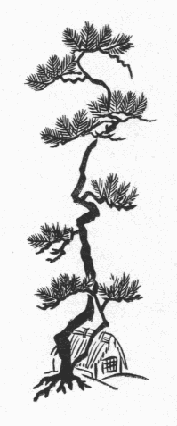
［＃改丁］
伝曰。上杉謙信。居常愛
二少童
一。又曰。福島正則。夙有
二断袖之癖
一。老而倍

太甚。終至
二失
レ家亡
一レ身矣。雖
レ然是豈一謙信一正則而已乎。世所
レ謂英雄俊傑者之於
二性生活
一也。逸事異聞之可
レ伝可
レ録者頻多。曰
二男色
一曰
二嗜虐性
一。則是武人習性之所
二敢使
一レ然。非
三復足
二深咎
一也焉。本篇所
レ伝武州公者。夙生
二于戦国
一。智謀兼備。武威旁暢。真為
二一代之梟雄
一矣。而坊間伝云。公亦被虐性的変態性慾者也矣。吁是果真乎。雖
二余未
一レ能
レ知
二其果信乎否乎
一其事已奇。其人豈可
レ不
レ憐哉。而正史不
レ伝
レ之。世人不
レ知
レ之。余頃者読
二桐生氏所
レ蔵之秘録
一。竊知
二公之為
一レ人。審
レ有
二公胸裏之窈糾令々甚切者
一。咨嘆久
レ之。王守仁曰。破
二山中賊
一易。破
二心中賊
一難。雖
レ然公之武威。

如
二
虎
一。偃武弭兵之功。誰有
二亦能及
レ之者
一哉。余則有
レ所
レ感。藉
二体於稗史小説
一。聊以叙
二公性生活之委曲
一。則以
二武州公秘話
一名
レ篇。読
レ之者。無
三徒為
二荒唐無稽之記事
一幸也矣。
昭和十歳次乙亥初秋
摂陽漁夫識
［＃改ページ］
妙覚尼「見し夜の夢」を書き遺す事、並びに道阿弥の手記の事
武蔵守輝勝の甲冑の事、並びに松雪院絵姿の事
法師丸人質となって
牡鹿城に育つ事、並びに
女首の事
法師丸敵陣において人の鼻を

る事、並びに武勇を現わす事
敵味方
狐疑の事、並びに
薬師寺の兵城の囲みを解く事
法師丸元服の事、並びに
桔梗の
方の事
筑摩則重兎唇になる事、並びに
上
の
厠の事
桔梗の方河内介に対面の事、並びに両人陰謀の事
則重鼻を失う事、並びに源氏花散里の和歌の事
河内介父の城に帰る事、並びに池鯉鮒家の息女と祝言の事
道阿弥感涙を催す事、並びに松雪院悲歎の事
牡鹿城没落の事、並びに則重生捕の事
［＃改丁］
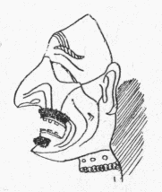
「見し夜の夢」の作者である妙覚尼と云う尼がどう云う
素性の人間で、どう云う時に
斯くの如きものを書いたのか
委しいことは知るよしもないが、前後の文意から察すると、此の婦人は
武州公の
奥向きに勤めていた侍女であったことは明かである。そして武州家滅亡のゝちに
剃髪して尼となり、何処かの「
片山里に草の
庵を結んで、あさゆう
念佛を申すよりほかのいとなみもなかった」と、自ら記している。つまり此の手記は、老後のつれ／″＼に
在りし世の事どもをおもい
出だして書き
綴ったと云う風に見えるが、しかし「念佛を申すよりほかのいとなみもない」尼の身が、なんの目的でこれを書く気になったのだろう。尼自身の云う所に依れば、「つら／＼武州公の行状を考えると、世の中には善人も悪人もなく、豪傑も凡人もない。賢き人も時には浅ましく、
猛き人も時には弱く、きのう戦場に於いて百千の敵を取り
挫いだかと思えば、きょうは家に在って生きながら獄卒の
笞を受ける。
花顔柳腰の婦女子も或は
羅刹夜叉となり、
抜山蓋世の勇士も忽ち餓鬼畜生に変ずる。
畢竟するに武州公は、因果の
理輪廻の姿を一身に具現して衆生の惑いを覚まさんがために、暫く此の世に
仮形し給うた
佛菩薩ではないであろうか。………」と、そんな風な感想を述べて、結局「武州公は貴きおん身に地獄の
苦患を忍び給い、その
功徳に依ってわれら凡夫に
菩提の心を授けて下すった有難いお方である。されば自分が公の行状を書き記すのも、一つには追善供養のため、一つには報恩謝徳のためで、別に他意ある次第ではない。もし公のふるまいを見て
嘲り笑うものがあれば、それこそ罰あたりの
輩であって、心ある者はたゞ／＼有難いと思うべきである」と云っている。が、ちょっとコジツケの
理窟のようで、果して此の筆者が本心からそう信じていたか、疑わしい点がないでもない。邪推をすれば、此の尼にも孤独生活から来る生理的不満があって、そのやるせなさを慰めるためにこんなものを書いたのかとも思われる。
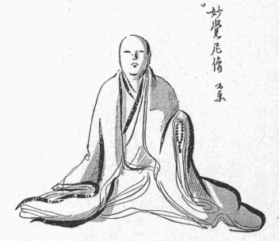
「
道阿弥話」の筆者の方は、全くその動機を記してないが、これは明かに「恐ろしい殿の行状」と、その人に仕えた
己れの
稀有な経験とを長く忘れることが出来ず、思えば思うほど不思議な気がして、止むに止まれないで書いたものに違いない。妙覚尼が武州公を佛菩薩の
化身だと云い、へんに有難がった解釈をしているのに反し、道阿弥は
可なりハッキリと主人公の心理を
掴んでいたらしく、従って又相当に公の信任を得ていたらしく想像される。なぜなら公はとき／″＼此の道阿弥に内部生活の
苦悶を打ち明け、自分の少年時代からの性慾史を語ったりして、同情と理解とを求めているからである。思うに道阿弥は多少とも
幇間的性質の男であって、
生来幾分か公と同様の傾向があったか、或は公の歓心を買わんがために殊更にそう装ったか、装っているうちに次第に公の感化を受けて本当にそうなってしまったかであろう。何にしても此の男は公の「秘密の楽園」に於ける
好伴侶であり、公に取って必要
缺くべからざるものだったことは確かである。もし此の男がいなかったら公の性的遊戯も
歪んだ発展をしなかったであろう。それ故公も時に道阿弥の存在を
呪い、しば／＼彼を
面罵し、
打擲し、寧ろ斬り捨てるに
如かずと決心して、白刃を擬したことも一再ではないらしい。公の「遊戯」に関係した男女で無事に生命を
完うしたものは
稀であるのに、道阿弥が死を
免れたのは甚だ幸運と云わざるを得ない。彼こそは最も殺される可能性があり、事実その危険に
瀕した度数は誰よりも多かったであろう。にも
拘わらず
虎口を脱したのは、憎まれる半面にそれだけ惜しまれてもいたのであろうが、一つには彼の気転と才智とに依るのである。
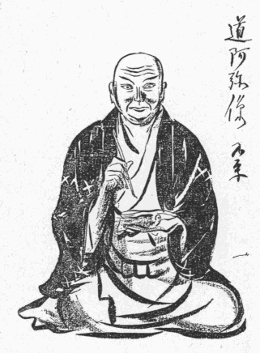
今
桐生氏の子孫の家に蔵する所の
輝勝の像を見るに、
南蛮胴に
黒糸縅の
袖、
草摺の附いた
鎧を着、水牛の
角のような巨大な
脇立のある
兜を
被って、右の手に朱色の
采旆を持ち、左の手をその親指が
太刀の
鞘に触れる程に大きく開いたまゝ
膝の上に伏せ、
毛沓を
穿いた両足を前方に組み合わせて虎の皮の敷皮の上に端坐している。もし甲冑を帯していなかったら、今少し体つきの
工合なども分るのであろうが、惜しい
哉此の服装ではたゞ顔だけしか見ることが出来ない。戦国時代の英雄の絵像にはこう云う風に全身を甲冑で固めたものがしば／＼ある。歴史図鑑などによく載っている本多平八郎の像、
榊原康政の像など、皆これに似たもので、いかにも威風
凜々としていかめしそうに見えるけれども、同時に
殊更肩を怒らしてシャチコ張っているような窮屈な感じがしないでもない。
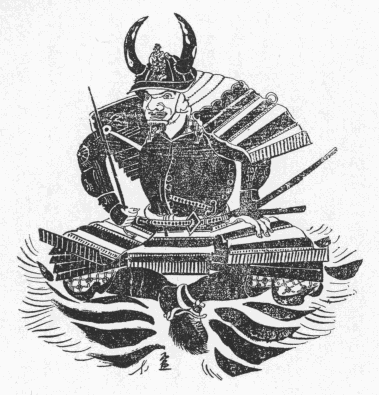
歴史の上では、輝勝の死んだのは四十三歳となっているが、此の肖像はそれよりも若く、三十五六歳から四十歳ぐらいの年輩に見受けられる。
容貌の印象は頬が豊かに、
頤の骨が四角に突き出で、決して
醜男ではないけれども、顔の割り合いに目鼻口の
造作が総べて大きく、いかにも
沈毅英邁な豪傑の相たるに
背かない。
就中丸く大きく見開かれ、前方を
睨んでいる
瞳は、兜の
眉庇とすれ／＼になっているために一層
険しく
烱々と輝やき、鼻の上方、両眼の迫る間に、もう一つ小さな鼻があるかのように肉が隆起して、横さまに太い一線の
皺を刻んでいる。その外
小鼻の両側から口辺へかけても太い皺があり、それが何か苦いものを
舐めたような気むずかしい表情に見え、鼻の下と、頤の先とに、バラバラと数えられる程の
疎
がある。
しかし此の顔に一段の威容を添えているものは、疑いもなくその兜である。前述の如くそれには水牛の
抱角の脇立があるのだが、その外に尚前方
鍬形台の所に、鬼を
蹈まえた
帝釈天の
前立が附いている。次にその鎧の一部が南蛮胴であることも、何となく異常な感を起させる。私はあまり此の方面のことを知らないけれども、南蛮胴と云うものは、
天文年中
種子ヶ
島から鉄砲が伝わった時分に、やはり
和蘭人か
葡萄牙人が輸入した西洋式の武具であって、
恰も桃の実のように真ん中で割れて、その割れ目が高く盛り上り、下部が背中の方へ行く程短かくくびれ上った一種の
鳩胸胴である。此の胴は戦国の頃武将の間に甚だ珍重され、後には内地でも模造品が作られたと云うくらいであるから、輝勝がこれを着ていることに別段不思議はないようなものゝ、それでも肖像畫に描くのに此の鎧を選んだのはどう云う訳か。そう云えば一体、此の肖像畫は輝勝が生前自ら絵師に命じて畫かせたものか、或は死後に何人かゞその記憶の中にある公の面影を写したものか明かでないが、いずれにしても公が特に此の鎧を好み、最も多く此れを愛用した
證左にはなると思う。
ところで、単に歴史の上に伝わっている武州公と云うものを頭に置いて此の肖像畫を
眺めたゞけでは、本多
忠勝や榊原康政のそれに似たような豪傑の感じしか
湧いて来ないが、ひとたび公の弱点を知り、性生活の秘密を探った上で、あらためて
仔細に凝視すると、気のせいでもあろうが、表面
颯爽たる英姿の底に何となく一種の不安な感じ、―――公の魂の苦悶とでも云うべきものが、そのいかめしい武装の内に隠されていて、或る云い難い
陰鬱さの漂うているのが看取される。例えばその大きく開いた眼、固く結んだ唇、怒れる鼻や肩つきなど、恰も
猛虎の絵の如く人を
畏怖せしむるに足るけれども、見ように依ってはリョウマチの患者が骨を刺すような節々の痛苦をじっと我慢している時の表情に似ている。それに南蛮胴の鎧と云い、水牛の
抱角に
帝釈天の兜と云い、邪推をすれば、内面の弱点を人に
見透かされまいとして、
強いてそう云う威嚇的な
扮装をしたと思われぬでもない。が、たゞでさえシャチコ張った甲冑姿が、此の異様な装身具のために一層不自然さを増して、いかにもギコチなさそうである。元来鳩胸胴の鎧を着たら、矢張西洋風に
床几にでも腰かけた方が似合うであろうに、あぐらをかいているのだから、胴ばかりが変に前へ飛び出して、尚更窮屈そうに見える。つまり此の鎧の下にあるべき筈の、戦場で鍛えた筋骨隆々たる肉体の感じがない。鎧と体とが離れ／″＼になって、しっくり身についていないのみか、己れを
護り人を威嚇する筈の武具が、却って彼自身に無限の苦しみを与えるところの
足枷手枷のように見える。そして、そう思って見る時、公の面貌に甚だ悲壮な、
惨澹たる
懊悩の影が現れ、勇ましい鎧武者の姿が、残虐な
桎梏に
呻吟している囚人の如くに映じて来る。尚深く疑えば、兜の前立の装飾についても、鬼を
蹈まえて立っている帝釈天は公の武勇を表象するものであり、脚下に蹈まれて
喘いでいる醜悪な鬼の方も亦或る場合に於ける浅ましい方面の公を暗示するようでもある。もちろん此の絵師はそんな意図を以て畫いたのではなく、公の秘密について何も知る所はなかったのであろうが、たゞ忠実な写実の結果としてこう云う肖像畫が出来たのであろう。
此の絵と
対幅を成して、同じ箱の中に入れてある他の一幅は、公の夫人の像である。どちらにも
落款はないけれども、同一の畫家がほゞ同じ時に描いたものと推定して間違いはあるまい。夫人はもと桐生家と同格の
大名である
池鯉鮒信濃守の息女である。夫輝勝に仕えて貞淑のほまれ高く、夫の死後は
剃髪して松雪院と称し、実家池鯉鮒家に養われていたが、夫婦の間に子がなかったのでその晩年は殊に
淋しく、夫に
後るゝこと三年にして世を終った。いったい日本の歴史的人物の肖像畫は、男性を写す場合にはよく個性的特長を
捉えて、その人となりを
髣髴たらしめている傑作が多いが、女性の肖像畫は概して類型的で、或る一時代の理想とする美人の
雛型を描いているに過ぎない。今此の夫人の像を見るに、目鼻立ちの整然とした麗人には違いないけれども、此の時代に於ける他の大名の夫人の像と比較して、これと云う差別が認められない。即ち此の像を、
細川忠興夫人の像としても、
別所長治夫人のそれとしても、見る者の印象にさしたる相違がありそうにも思われない。
斯かる類型的な美人の顔には、常に一種の青白い冷やかさが伴う。此の夫人の容貌もやはりそうであって、ところ／″＼
剥げかゝった、色の
褪めた
胡粉の塗ってある頬のあたりを
視つめると、
圓顔の、ゆったりとした肉づきにも拘わらず、全く生気を缺いている。彫刻的な、高い鼻もそうである。取り分けその眼は切れが長く、非常に細く、威厳のある
眼瞼の下に針のように
冴えている瞳は、上品な聡明さを示すと共に、何かしら一脈の寒さを覚えさせる。
蓋しあの頃の大名の奥方は、所謂「北の
方」であって光線の乏しい御殿の奥の間に垂れこめつゝ単調な日々を送っていたのであろうから、誰も彼もこんな類型的な表情になったかも知れない。就中此の夫人の、
佗びしい、しょざいない、泣くにも泣かれない孤独な
生涯を
想うと、事実こう云う顔つきをしていたらしい気もするのである。
［＃改ページ］
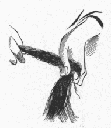
「
道阿弥話」に
曰く、
瑞雲院様御幼名は法師丸と申され候、武蔵守
輝国公御
嫡男に御座あれども、七歳のおん時、おん父輝国公隣国
筑摩殿と
御和睦あるに依つて、若君を人質として筑摩
一閑斎殿のおん
館牡鹿山へ
被遣候、瑞雲院様おん物語に、それがし幼少より父武蔵守の
膝下を離れ、十数年の間牡鹿山の城中にありて文武の道を学ぶ、されば旁
一閑斎に養育の恩を受けたりと
被仰候
と。但し此の文中には「和睦」とあるが、当時筑摩家は
門地も高く、数ヶ国を領していた大々名であったから、屈辱的な降参ではない迄も、決して対等の和睦をしたのではなく、実は一閑斎の
麾下に
隷属したのであろう。そうでなければ大切な総領息子を人質に差し出す筈がない。
法師丸の少年時代の逸話はあまり多く伝わっていないけれども、
茲に一つの事件がある。天文十八年、法師丸が十三歳の秋、牡鹿山の城が管領
畠山氏の
家人薬師寺弾正政高の兵に囲まれ、
籠城は九月から十月に
亙った。そのとき法師丸は元服前であったから戦場に出ることを許されず、毎日城の中にあって合戦の模様を聞いては幼い胸をときめかしていた。法師丸は、自分のような子供がいくさに出られないのは仕方がないけれども、武門の家に生れたからには、こう云う場合にせめて実戦の光景を見ておきたい。まだ
初陣の功を立てる年頃ではないとしても、今のうちから親しく
剣戟のあいだをくゞって、勇士の働きとはどんなことをするものか知りたいと思った。が、牡鹿山の城は筑摩家代々の本城であるから、備えもきびしく、城内の
区劃もかなり複雑に出来ているので、なか／＼外へ忍び出るような便宜もない。まして合戦が始まってからは人質の監視がやかましい上に、法師丸には桐生家から附き添って来た補佐役の侍がいて、それが何や彼やと世話も焼けば干渉もする。法師丸は自分の部屋と定められた所に一日じっと引き
籠っていて、遥かにきこえて来る
鉄炮の音や
鬨のこえを耳にしながら、補佐役の
青木主膳という侍から「あれは
寄手が追い
崩される物音です」とか、「今度は味方が門内に引き揚げる合図の
貝の
音です」とか、刻々の戦況を聞かされるだけであった。主膳の話だと、今度のいくさは味方に取って容易ならぬ苦戦で、敵は既に此の本城の周囲にある多くの
子城を攻めおとして、二萬騎にあまる軍勢が此の山の
麓を幾重にも囲んでいる。味方はわずか五千に足らぬ人数を以てそれを防いでいるのである。幸い此の城は要害がきびしく、有利な地形に
拠っているから、どうやら今日までは持ちこたえたけれども、最早や籠城を始めてから一と月にも
垂んとする。
恃む所は京都の方の形勢に変化が起って、自然と敵が囲みを解くようになるであろうと云う一事で、その時機が早く来てくれなければ、
早晩城は陥るのであった。
法師丸は人質と云っても大名の子息であったから特別の待遇を受けていたらしい。従って彼の住んでいたのは本丸の中の相当な部屋であったゞろう。しかしそのうちに城の外廓が攻め落され、寄手の軍勢が三の丸へ這入って来たので、それ迄は
餘裕のあった
廣い城内も、だん／＼
狭隘を告げるようになった。三の丸にいた味方の人数が二の丸へ追い詰められ、二の丸が窮屈になって本丸へなだれ込み、部屋と云う部屋、
櫓と云う櫓に人が充満した。そうなって来ると、整然としていた部署も乱れがちになり、持ち口／＼が定めてあってもその通りには行われず、手のあいているものは何でも手伝うと云うようになる。青木主膳も、味方の苦戦を
餘所に見つゝ若君の
傍にばかり附き添ってもいられないので、寄手の攻撃の急な時には、一方の要害を引き
請けて
防禦の加勢をしなければならなかった。
いとけなき折のことをおもふに、当時はくちをしかりしことも後になりてはなつかしきものなり、それがし牡鹿山に籠城のみぎり、名もなき女童共と一つ所に起き伏しゝて合戦の駈引なんど知るに由なく、無念やる方なかりしが、今その頃の事を思へば中々興ありしことに存ずるなりと被仰候
と、「道阿弥話」にはその時のことをこう書いている。結局法師丸は、青木主膳の監督が
弛んだことをたいそう喜んだのであった。そのうえ、今迄戦争の空気とかけはなれていた彼の部屋にもいろ／＼な見知らぬ「女童共」が詰め込まれて来て、周囲が一時に
賑かになった。此の「女童」と云うのは、矢張人質の一群であって、こう云う場合、少年や婦女子は足手まどいになるばかりだから、みんなその法師丸のいた室内へ集められたのであろう。いったい子供と云うものは、戦争にしろ、地震や火事にしろ、何かそう云う混雑の際に狭い所へ人が大勢避難して来てガヤガヤ騒ぐのを、
恰もキャンピングにでも行ったように珍しがったり
嬉しがったりする癖がある。法師丸も、「名もなき女童共」と一緒にされたのは無念であったかも知れないが、世間を知らない貴族の若君であったゞけに、そんな連中と接触することに一種の好奇心を感じたに違いない、分けても彼の注意を
惹いたのは、その中に交っている
年嵩な婦人たちの一と組であった。
そこに集った人質のうちでも、男の方はみんな少年ばかりであったが、女の方は年齢が一定していない。五十六十の老婆もあれば
中年増の女房もあり、まだうら若い娘などもいる。此の連中は、法師丸から見れば「名もなき」者共であろうけれども、人質になるくらいだから、いずれも相当な士分の家柄の婦人である。その證拠には、彼女たちはどんなに寄手の攻撃が迫って来ても、決して取り乱した様子がなく、いつも落ち着いてつゝましやかに部屋の一隅に控えていた。彼女たちは、年上の者は勿論、若い者でも一度や二度は戦争に遇った経験があるらしく、
鬨の声の
挙げ方や、
陣太鼓の響き工合や、その他いろ／＼の物のけはいで、敵味方の勝ち敗けを判じたり、
今日は夜討ちがあるだろうとか、
明日は朝がけがあるだろうとか、そんなことをよく心得ていて、茶のみ話でもするように、しずかに話し合っているのが常であった。法師丸は青木主膳が忙しくなってからは、誰に戦況を尋ねることも出来ないので、いつとはなしに、この婦人たちの会話に聞き耳をたてるようになった。彼は自分もその連中の仲間へ入れて
貰いたかったのだが、相手が年上の女たちであるから、キマリが悪くって、唯遠くからそれとなく気を配ったり、何か外の用にかこつけてうろ／＼とその辺へ立って行ったりした。すると、或る日のゆうがた、ちょうど其の日は激しい
競り合いがあって、その女たちのうちでも働き盛りの年頃の者は、しきりに負傷者の世話などをしたあとのことであった、例の如くその日の合戦の
噂話が始まったので、法師丸がそうっと彼女等の席の方へ近寄って行くと、
「法師丸さま」
と、一座の中から一人の老女が声をかけた。
「法師丸さま、まあ此方へおはいり遊ばしませ」
老女はそう云って、いたわるような眼を向けてにこやかに笑った。それから仲間の女たちを顧みて、
「この若さまは感心なお
児ですよ」
と云った。
「いつもわたしたちが合戦の話をすると、此のお児は聞かないような振りをして一生懸命に聞いていらっしゃる。お小さい時から斯うでなかったら、立派な大将になれる筈はない」
此の老女は比較的身分が高いので皆の尊敬を集めていたらしく、厚い
褥の上にすわって、
脇息に
肘をついて、二十人程の一団が輪を作っている中心のような位置に座を占めていた。
「法師丸さま、いくさの話がお聞きになりとうございますか」
と、そのとき別な年増の女房が尋ねたので、法師丸は
「うん」
と、首でうなずいてみせた。彼はそこにずらりと
列んでいる婦女の一群の視線が、今の老女の言葉と共に一斉に自分の顔へ向けられつゝあるのを感じると、ちょっと訳の分らない恐怖、―――云わば異種族に取り巻かれた時の気おくれに似たものを覚えた。何を云うにも、男女の区別の厳重であった当時の武士階級のことである。まして此の少年は、幼時から両親の側を離れて武骨な侍の間に育ち、
蘭麝の
薫りなまめかしい奥御殿の生活と云うものを殆ど知らない。かりにも女らしい女が二十人と寄り
集ったところに
醸し出されるきら／＼しい色彩と、
嗅ぎ
馴れない
薫き物の
匂とが、生れて始めて彼の眼の前に一箇の花園をひろげたのである。此の間から遠くの方で
眺めてはいたけれども、こう近寄ってその雰囲気に包まれてみると、恐らく法師丸は、美しさや色っぽさを感じるより先に、不馴れから来る一種の
嫌悪に襲われたのであろう、暫く黙って
衝っ立っていたが、
「まあ、こゝへおすわりなさりませ」
と、再び
促がされたので、
「うん」
ともう一遍うなずいて、その気おくれの感情を
抑えるために、わざと畳へ響きを立てゝ威勢よくすわった。
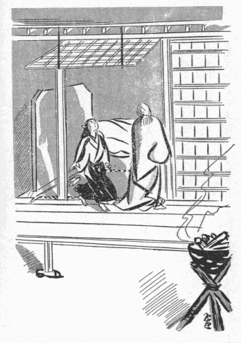
「若さま、あなた様ももう二三年でございますね、そうしたら戦に出られるようにおなりになりますよ」
と、誰かが少年の心の中を察して、そう云ってくれた。
「ほんとうにね、此のお児は体格もしっかりしていらっしゃるし、
上ぜいもおありになる、見るから頼もしそうなお児だ」
女たちは法師丸がどう云う人の
忰で、どう云う事情で此処にいるのかをよく知っていた。それに、自分たちが人質の身の上であってみれば、此の少年の境遇に自然と同情を
抱いたのであろう。中には又、此の少年ぐらいな年恰好の息子や弟を持っている母や姉もあったであろう。兎に角みんなが法師丸の雄々しい姿を
褒めそやして、「
初陣の時の
武者振りが見たい」とか、「こう云う世継ぎを
儲けておられる武州殿は仕合わせだ」とか云ったりした。しかし法師丸は、そんなことはどうでもよかった。それよりも早くいくさの話をして貰いたかった。と、さっきの老女が、
「あなた様は、まだ一ぺんも敵の様子を御覧になったことがございませんの」
と、あわれむように云った。老女としては、それは好意のある
憐れみであったけれども、法師丸は此の言葉に侮辱を感じて
赧くなりながら、首を振って見せた。そして、
「見たいんだけれど、
己には見せてくれないんだよ。子供は二の丸なんぞへ行ってはいけないと云うんだ」
「どなたがそう仰っしゃいますの」
老女は法師丸の、さも不平らしい口ぶりに微笑を含んだ。
「己には附き添いの侍がいるのだよ、それがいろ／＼やかましいことを云うもんだから」
そう云ってから、今度は法師丸の方から尋ねた。
「お前たちは、敵の攻め寄せる近くまで見に行ったことがあるんだろうね」
「えゝ、
今日のように
合戦の忙しいときは、いろ／＼お手伝いをいたしますものですから、櫓の上や御門の
際までも出て行くことがございます」
「じゃあ、敵を
斬り殺して首を取ったりするところが見られるのかい」
「えゝ、えゝ、それは見られます。あまり近くで血を浴びることもございます」
そう云う老女の顔を、法師丸は
羨ましそうに見上げた。
大人はいゝなあ、女でもそんな所が見られるんだから。―――そう思うと矢も
楯もたまらなかった。
「ねえ、己をお前たちの仲へ入れて、明日連れて行っておくれよ」
「さあ、それはちょっと、………」
と云って、老女はいじらしい子供だと云う風に、相変らずやさしい
笑みを浮かべながら答えた。
「折角でございますが、それはなりますまい。それでは青木主膳さまに私どもが
叱られます」
「なあに、主膳には分りはしないよ。己は決してお前たちの邪魔はしない、お前たちに出来ることなら、己にだって出来ないことはない」
「けれども、御身分のある若様が、女どもの仲へ這入って手伝いなどをなさるものではありませぬ。そんなことを遊ばしたら物笑いになります」
法師丸は、その老女の云うことを如何にも尤もだと思うより仕方がなかった。が、戦の現場へ出て、実際に勇士と勇士とが組み討ちをする光景を見られないとすれば、せめて名ある勇士の
屍だけでも、首級だけでも、見たいのであった。実を云うと、彼はまだ
凄じい斬り傷を受けた
屍骸だの、血の
滴れるような生々しい人の首だのを見た経験がないのである。
曝し首ぐらいには何処かで行き遇った覚えがあるけれども、戦場の壮烈さを忍ばせるようなものは、
嘗て一度も目撃する機会を与えられなかった。貴族の家に養われて、出るにも入るにも監視を受けていた彼としては、それが当り前かも知れないが、武将の子であり、もう十三にもなっているのにと思うと、何だか法師丸は、人前へ出ても気が引けてならなかった。殊に今度のように、自分の部屋のつい近くで毎日敵味方が死人の山を築いているのに、そして婦人たちまでが血の雨を浴びる程そう云うものに親しんでいるのに、自分だけが全く経験を持たないと云うのは、此の上もない不名誉のように思えるのだった。自分はそんなものを見ても恐怖を感ずる筈はないが、しかしどのくらい平気でいられるものか、胆力の程を試してみたい。今のうちからそう云う修練を積んでおいて、
初陣の時に不覚を取らぬようにしたい。
二三日過ぎてから、法師丸が此のことを老女に訴えると、老女は暫く考えた後に、
「よろしゅうございます」
と云った。
「合戦の場所へお連れ申すことはかないませぬが、首級を御覧になるだけでしたら、わたくしが計らって差し上げます。その代り、必ず／＼
誰方にも仰しゃってはなりませんよ。ようございますか。それさえ守って下さいましたら、今夜わたくしがよい所へ御案内いたします」
老女は声をひそめて云った。そして法師丸にこんなことを話した。と云うのは、近頃毎晩のように、自分たちの仲間から五六人の女が選ばれて行って、討ち取った敵の首級を、
首帳と引き合わせたり、首札を附け替えたり、血痕を洗い落したり、そんな役目を勤めている。首と云うものは、名もない
雑兵のものなら知らぬこと、
一廉の勇士の首であったら皆そう云う風に
綺麗に汚れを除いてから、大将の実検に供えるのである。だから見苦しいことのないように、髪の乱れたのは結い直してやり、歯を染めていたのは染め直してやり、稀には
薄化粧をしてやるような首もある。要するに、なるべくその人が生きていた時の
風貌や血色と違わぬようにするのである。此のことを首に装束をすると云って、女の仕事になっているのだが、此の城では婦人の手が不足なために、人質の中の女共が云い付かるようになった。だからそこで働いているのは、みんな老女の心やすい者ばかりなので、そんな所でも宜しかったら、内證で見せて上げましょうと云うのであった。
「ようございますか、知れると後が面倒ですから、そのおつもりで、黙って私に附いていらしって、大人しく見物なさるんですよ。決してお手伝い遊ばしたり、餘計な口をおきゝになってはいけません」
老女は好奇心に燃える少年の眼を見入りつゝ、そう云って念を押してから、
「では今夜、わたくしがお誘いに参りますから、寝たふりを遊ばして待っていらっしゃいまし」
と云った。
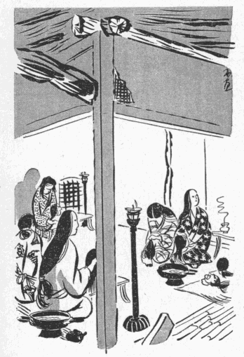
法師丸の寝所は、前にも云うように女子供に侵入されて、誰彼の差別もなく並んで寝るような始末であったが、それでも此の少年の寝床だけは、一番上座に
衝立で区切りがしてあって、その衝立の内側に、彼と青木主膳とが眠るのであった。しかし都合のよいことには、部屋が廣い上に燈明が一つぼんやり
燈っているだけで、衝立の
此方側は濃い
闇になっていたから、主膳がちょっと
寝惚け
眼を開けたくらいでは、法師丸の寝床が
空になっているのが分る筈がない。第一、此の頃の主膳は晝間の働きに疲れ切っているらしく、倒れたら最後
高鼾をかいてぐっすり眠り通すのである。尤もそれは主膳ばかりではなかった。交代で夜を
警しめている武士以外は、皆死んだように熟睡するので、晝間の
騒擾と活動が激しければ激しい程、夜は無気味に静かになる。法師丸はそのしーんとした闇の中で、夜着を
被って、まんじりとせずに息を凝らしていると、やがて老女の足音がして、衝立の戸をほと／＼と
叩いた。
「どっち？」
少年は、主膳の寝床の
裾の方を廻って、そうっと衝立の外へ出た。
「こちら」
と、老女が一と言云って、
頤で部屋の出口を指した。そして、すぐ先に立って歩き出したらしく、
衣ずれの音がおだやかな海に打ち寄せる波のように、さあッ、さあッ、と、一定の間隔を置いて、際立って耳についた。
九月ももう半ばごろのことで、寒い晩だった。老女は白い小袖の上に、何かごわ／＼した
裲襠めいた物を
纏って、
猫背の肩をかゞめて、引きずった裾が寝ている人に触らぬように、そして、衣ずれの音を少しでも殺すように、両手で
褄を取っていた。
雪洞は持っていないけれども、廊下へ出ると、庭のところ／″＼に
篝り火が燃えているので、それが何処からか板敷に反射するばかりでなく、とき／″＼振り返っては法師丸に眼で合図をする老女の半顔を赤々と照らした。彼女が小声で何か云うたびに、息が白く凍るのが分った。少年は、いつも晝間見る時の老女とは、まるきり違った感じがした。品のよい、暖かみのある、
乳母か
伯母さんのような老婦人であるのが、今はそんな風に見えない。悪い人間と云うのでもないが、肉の落ち
凹んだ顔の方々に深い影が出来て、
般若の面のようである。そのせいかどうか、晝間よりは一層
歳を取った、うすぎたない老婆に見える。
白髪が生えていることも前から気が付かないではなかったが、それが特に
小鬢に多く、かゞり火の
餘焔が遠くでめら／＼と燃え上るのを逆光線に浴びて、
針鉄のように光っている。と、法師丸は、身分のある者は決して知らない人に誘われてウカウカ外へ出るものではない、出る時は必ず私に断って出るようにとかね／″＼青木主膳から云われていた言葉を思い出した。何かたくみがあるのではないか、危険な
罠へ落し込まれて行くのではないか。―――だが、彼はすぐにその
怯懦な考えを耻じた。老女の顔がへんに
凄いのは、夜の明りのせいだ。外に何も原因はない。それだのに危険を想像するのは、
臆病蟲に
憑かれたと云うものだ。そう思うと、そんな疑念をほんの一時でも抱いたことに自尊心を傷けられた。
「これをお召し下さいまし」
廊下の突きあたりへ来たときに、
遣戸を音を立てぬようにごそ／＼と開けて、自分が先に庭に下りると、老女はふところから
草履を出して、それを法師丸の前にそろえた。
かゞり火の炎が強かったので今迄は分らなかったが、外には十三四日頃の月が
冴えていた。その月の光が、白い
漆喰壁の多い附近の建物に反射して、地上をひときわ明るくしている。老女は、その白壁が幾つにも屈曲している面に添うて
蔭と月光とがだんだらに入り交った間を、やゝ急ぎ足に歩いた。そして、一と
棟の土蔵のような建物の前へ来ると、そこの戸を開けて、法師丸を手招きしながら、
「こちらでございますよ」
と云った。
法師丸は、その建物なら覚えがあった。中は武具などを入れる倉庫になっていて、上に、低い屋根裏のような二階がある。しかし老女の後について這入ったところでは、内部の様子が籠城以前とは著しく変っていた。そこに収めてあった筈の武具やその他の
嵩張った荷物が戦争のために
悉く取り出されてしまったらしく、土間の大部分ががらんどうになっていて、一方の隅に
急拵えで拵えた
竃が築いてある。真っ暗なのでよくは見えないが、竃の下にちら／＼している
薪のあかりと外からさし込む月の光とで、法師丸にはそれだけが分った。と、同時に異様な臭気を感じた。倉庫に特有な
黴の
臭いでもあるけれども、それにいろ／＼な物の交った、複雑な、不愉快な臭いである。おまけに、竃の上に
釜が
懸けてあって、湯が
沸らしてあるせいか、妙にその臭いが
生暖くたゞよって来る。
「
梯子段でございますよ、お気をお附けになって。―――」
と云って、老女は二階へ上って行った。法師丸は又そのあとに従った。そして、梯子段を上り切ったところで、はじめて彼は明るい
燈火の中にすわった。
「臆病であってはならない、どんな光景にも顔を
背けてはいけない」
―――そう云う意識が、少年の眼を何より先にその室内の最も恐ろしい物体の上へ釘着けにした。彼は自分に一番近い所にいる婦人の、
膝の前に置かれた一つの首級を見、それから順々に、そこに並んでいる首と云う首に視線を移した。法師丸は、それらの首を、どれでも平気で長いあいだ見ていられることに満足を感じた。ありていに云うと、それらは
寧ろ作り物のように清潔になっていて、彼の
豫期していたような戦場の実感や勇士の面目などは、少しも感ぜられなかった。見ていればいる程、それらがだん／＼人間離れのした品物らしく思われて来るばかりであった。
女たちは、前に老女から聞いていたと見えて、法師丸が這入って来ると、うや／＼しく目礼をして、それなり静かに作業を続けた。人数はちょうど五人いた。そのうちの三人がめい／＼一つずつ首を自分の前に据えて、あとの二人は助手の役をしていた。一人の女は、
半
の湯を
盥に
注いで、助手に手伝わせながら首を洗っていた。洗ってしまうとそれを首板の上へ載せて次へ廻す。もう一人の女がそれを受け取って髪を結い直す。三人目の女が、今度はそれに札を附ける。仕事はそう云う順序を以て運ばれていた。最後にそれらの首は三人の女のうしろにある長い大きな板の上へ一列に並べられた。首がすべり落ちないように、その板の表面には
釘が出ていて、それへ首をぎゅっと突き刺す仕掛けになっていた。
作業の都合上、三人の女の間に
燈火が二つ据えてあり、部屋は可なり明るくしてあった。それに、立つと頭が
梁につかえそうな屋根裏なのだから、法師丸にはその室内の光景が一つ残らず眼に映った。彼は、首そのものからは強い印象を受けなかったけれども、首と三人の女との対照に、不思議な興味をそゝられたのであった。と云うのは、その首をいろ／＼に扱っている女の手や指が、生気を失った首の皮膚の色と比較される場合、異様に生き／＼と、白く、なまめかしく見えた。彼女たちはそれらの首を動かすのに、
髻を
掴んで引き起したり引き倒したりするのであったが、首は女の力では相当に重いものなので、髪の毛をくる／＼と幾重にも
手頸に巻き付ける。そう云う時にその手がへんに美しさを増した。のみならず、顔もその手と同じように美しかった。もうその仕事に馴れ切って、無表情に、事務的に働いているその女たちの容貌は、石のように冷めたく冴えていて、殆ど何等の感覚もないように見えながら、死人の首の無感覚さとは無感覚の工合が違う。一方は醜悪で、一方は崇高である。そしてその女たちは、死者に対する尊敬の意を失わないように、どんな時でも決して荒々しい扱いをしない。出来るだけ
鄭重に、
慎ましやかに、しとやかな作法を以て動いているのである。
法師丸は全然豫想もしなかった
恍惚郷に惹き入れられて、暫く我を忘れていた。それがどう云う感情の
発作であったかは、後になって理解したことで、当時の少年の頭では何も自覚していなかった。たゞ今迄に経験したことのない気持、―――或る云い知れぬ興奮であった。そう云えば二三日前のゆうがた、始めて老女に話しかけられた時に、此の三人の女たちも矢張あの場に居合わせたので、確かに顔に記憶はあるけれども、あの時は何の感じも抱かなかったのだ。その同じ「顔」が、この屋根裏でこれらの首と差向いになっている今、何故か彼を魅惑するのだ。彼は三人の女たちの
仕業を、代る／″＼見守った。一番右の端にいる女は、木の札に
紐をつけて、それを首の
髻に結いつけているのだが、たま／＼髪の生えていない首、―――「入道首」が廻って来ると、
錐で耳へ穴を開けて、紐を通していた。その穴を開ける時の彼女の様子は、彼の心を甚だしく喜ばせた。が、最も彼を陶酔させたのは、まん中に座を占めて、髪を洗っている女であった。彼女は三人のうちで一番年が若く、十六か七くらいに思えた。顔も圓顔の、無表情な中にも自然と
愛嬌のある
面立ちをしていた。彼女が少年を惹きつけたのは、とき／″＼じっと首を視入る時に、無意識に頬にたゝえられる
仄かな微笑のためだった。その瞬間、彼女の顔には何かしら無邪気な残酷さとでも云うべきものが浮かぶのである。そしてその髪を結ってやる手の運動が外の誰よりもしなやかで、優美である。彼女はおり／＼、傍の机の上から
香炉を取って、それで髪の毛を
薫きしめる。それから、髪を結い上げて、
元結を結んでしまうと、それが一つの作法だと見えて、
櫛の峰の方で、首の
頂辺をコツコツと軽く叩くのである。法師丸はそう云う彼女をたまらなく美しいと感じた。
「いかゞでございます、もうおよろしゅうございましょう」
老女にそう云われて、少年は急に
赧くなった。老女の顔はいつか
優しい品のよい伯母さんに
復っていたけれども、ニコニコしながら此方へ向けている彼女の眼が、何か自分の秘密を見透かしているように、法師丸には思えたのである。
その晩、彼等が屋根裏にいた間は、今の時間にすれば二三十分に過ぎなかったであろう。元来なら法師丸は、もう少し其処に置いてくれるように老女にせがむところであった。子供が珍しいものを見たがるのに何の不思議もない訳だから、「己はもっと見ていたいんだ」とだゝを
捏ねてもよかったのに、
何故かその時の法師丸は、少年らしい無邪気さを失っていた。そして限りない心残りを覚えながら、老女に
促されて梯子段を下りて行ったが、さっきの恍惚感が後に長くつゞいていて、いつ迄も彼を陶酔の状態に置いた。
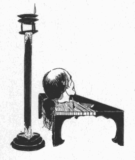
「さあ、もう此れで気がお済みになりましたでしょ。今夜のことは私の一存で計らって上げたのでございますから、誰にも仰っしゃってはいけませんよ」
寝所の入り口へ来たときに、老女は彼の耳元へ顔を寄せてそう云ってから、
「ようございますね、―――ではお静かにお休みなさいまし」
と云って引き取ってしまった。衝立の蔭へ這入ってみると、よいあんばいに青木主膳は何事も知らずすや／＼と寝ている。しかし法師丸は、自分の寝床へもぐり込んでからも、容易に興奮が治まらないで、眼が冴えるばかりであった。じっと闇を視つめている彼の瞳には、またゝく
燈火の明りの下にころがっていた無数の首、その表情、皮膚の色、血のにじんだ切断面、―――それから、それらの静寂な物体の一群の中で、生き／＼と動いて働いていたなまめかしい指、分けてもあの十六七の美女の圓顔が、一と晩じゅう怪しい幻影となって
泡のように消えたり浮かんだりした。何しろ彼の目撃したものは唯でさえ異常な場面である。そうして、その場面には鼻を
衝くような異臭が
充ち、そこにいた女共は皆
生首と同じように黙々として一語も発しなかったのである。十三歳の少年が夜半に
閨を忍び出て、青白い庭の月光を蹈んで、不意にそう云う奇妙な所へ連れて行かれたのであるから、―――而もそれが短時間のうちに終ったのであるから、―――全く現実とかけ離れた世界が、一瞬間ぱっと現れて忽ち又消えて亡くなったような感じがしたに違いない。
夜が明けると、相も変らず寄せ手の激しい攻撃が始まって、鉄炮の音、
煙硝の匂、
法螺貝、陣太鼓、
鬨の声などが一日つゞいていた。そして人質の婦女の一隊は、その日も
兵粮弾薬の運搬や、負傷者の介抱にかい／″＼しく奔走していた。法師丸はその一隊の中から
昨夜の女どもを捜し出して、あの屋根裏の光景が夢でなかったことを確かめてみようと思ったけれども、彼が特に魅惑された美女も、その他の四人の女共も、此の間じゅうは居たに違いないのだが、今日は一人も見かけないのであった。たゞ老女だけはいつもの通り脇息に
靠れて部屋の片隅に坐ったまゝ、法師丸には朝からわざとよそ／＼しい
素振を示していた。察するところ、あの五人の女共は夜通し首を洗う仕事があるので、晝間合戦がある間は何処かで休んでいるのではあるまいか。或は今頃はあの屋根裏で寝ているのかも知れない。―――法師丸は大方そうであろうと思った。あの女共が晝間見えないと云うことは、今夜も矢張彼女たちが昨夜の作業を受け持つ豫定になっているものと推定された。
そこに気がついた少年は、ひたすらその日の暮れるのを待った。あの屋根うらへもう一度連れて行ってくれるように老女に頼んでみたところで、恐らく承知しないであろう。が、最早や老女の案内を必要としないのみならず、老女がいては却って邪魔になるのである。老女に感づかれないように、こっそり伏し戸を抜け出すことにさえ成功したら、あとは
独りで行けるのである。法師丸はそう決心すると、自分の方からも成るべく老女によそ／＼しくして、傍へ寄り着かないようにした。彼は自分がそんなに迄あの屋根裏へ行きたがるのが、
昨日とは全く違った動機からであることを、我ながら奇としないではいられなかった。兎に角くそれは武士の子らしい望みでないことは確かである。自分は胆力を試すためにもう一遍あの光景を見に行くのだと、自ら弁解してみたところで、その実外に目的があるのだ。それを少年は
明瞭に意識してはいないながら、或る理由の分らない
羞耻と良心の不安とを感じた。
少年の最も
懸念したのは、青木主膳の眠りを破ることよりも、老女が眼をさますことであったが、運よく誰にも気が付かれずに廊下へ出ると、あとは何の
雑作もなかった。少年はちょうど昨夜と同じ時刻に再び庭の月光を蹈んだ。そして、倉庫の戸を開けて、梯子段の下へ来る迄は、何か眼に見えぬ力に誘われて夢中で引き寄せられてしまったが、そこへ来たとき、一瞬間立ち止まって二階の方へ耳を澄ました。実を云うと、ゆうべの出来事が彼には未だに一場の幻影のような、―――たとえばあの老女が魔術を使って無いものを有ると思わせたような疑惑が残っていたけれども、今こゝへ来て
彳んでみると、矢張土間には
竃の湯が
沸らしてあって、
生暖かい空気の中に、あの忘れられない異臭が匂っているのである。屋根裏からは何の物音も聞えて来ないが、梯子段の上り口に
灯かげがゆらめいているのを見れば、人がいることは確かである。少年は、その釜の湯が何のために沸かしてあるのか
昨夜は気が付かずに過ぎたが、首を洗うためだと云うことを、そのとき始めて悟ったのであった。
いよ／＼現実に違いないことが分ると、羞耻感がひとしお彼に
壓力を加えた。彼の足が一歩々々梯子段を
昇って行くほど、逆に彼を引きおろすようにする何物かゞあって、少年は心でそれと
闘いながら
上り詰めた。豫期した通り昨夜と同じ作業の光景が、同じ五人の女に依って展開されていたのである。しかし女たちの方では、今夜の彼の訪れを豫期していなかったのは云う迄もない。少年がそこに現れたのを見ると、明かに彼女等の眼に不審の色が浮かんだ。
重立った三人の女たちは、首をいじくっている手を休めて、まっすぐ少年に凝視を向けたが、一番
年嵩らしいのが丁寧に頭を下げると、外の女たちもそれで心づいたように、両手で首を持ったまゝしとやかなしぐさで敬意を示した。彼女等の顔に或る表情がほのめいたのはそのほんの
僅かな間だけで、次には再び黙々たる作業が開始されていた。
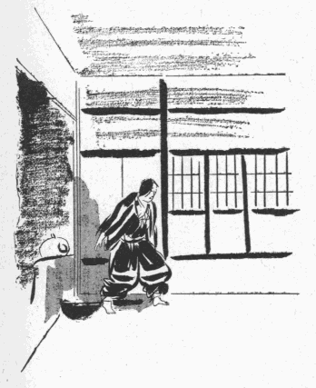
女たちが此の人質の貴公子に儀礼を拂った時、少年は
襟元まで
赧くなった顔を
傲然と
擡げて、大名の若君にふさわしい威容をつくろって立っていた。
羞かしさやキマリ悪さを胡麻化すためにニヤニヤ笑うような
術を彼は知らないのであった。彼は生れながらに武将の子であるから、どんな場合でも、―――まして女たちの前では尚更―――その品格を崩さぬ態度を取らなければならなかった。内面の羞耻と、外面の堂々さと、―――此の矛盾を抱いた子供が肩を怒らして
武張って立っている様子は、幾分
滑稽だったであろう。が、幸いにも女たちは直ぐ仕事の方に注意を向けたので、最早や彼を見ていなかった。彼女等は少年が独りでやって来たことを
訝しく思ったには違いないが、それを
詰るのは無礼であるし、又自分たちの任務でもないと心得ているらしく、せっせと作業にいそしむのであった。その事務的に、無表情に、まめ／＼しく働いている女たち、部屋の至るところに並んでいる生首、低い屋根裏に燃える燈火、
薫香の匂と血の匂との交った空気、―――すべてが昨夜の通りであった。むしろ法師丸には、昨夜と今夜とが一つの連続した夜に思えた。その間に晝間があり、たった今自分が独りで忍び出て来た別な世界があることが、却って遠い夢のように感ぜられた。たゞ違うのは自分の傍に老女がいないことだけで、あの恍惚たる陶酔の気持、胸を掻きむしられるような激しい荒々しい歓喜までが、いつの間にか彼を
囚えていた。
一番右の端の女は、今夜も矢張入道首の耳へ錐を突き刺して、穴を開けている。まん中の髪を洗う女も、相変らず首の頭を櫛でコツコツ叩いている。―――ゆうべの彼を最も強く魅惑したのは此の女であったが、思うにそれは、彼女が今や十分に肉体の発育しきった年齢にあったことがその原因の一つに相違ない。なぜかと云うのに、此の室内を領しているものは
夥しい首、「死」の
累積なのである。そう云う中にあってその娘の持つ若さと
水々しさとは一層引き立って見えたであろう。たとえば彼女の
紅味のさした豊かな頬は、青白い首の血色と対照される時に、その本来の紅さよりも以上に生き／＼としたものに思えたであろう。それから又、彼女の受け持ちが首の髪の毛を解いたり結んだりする仕事であるために、その髪の油に
滲みた指が、毛の黒さと比較されて実際よりも白くなまめかしく映じたであろう。そして法師丸は、今夜も亦彼女の眼元と口元に浮かぶ不思議な微笑を見たのであった。左の端にいる女から、きれいに血の
痕をぬぐい取った一つの首が廻って来ると、此の女はそれを受け取って、先ず
鋏で
髻の
元結を
剪り、ついで
愛撫する如く髪を丹念に
梳って、或る場合には油を塗ってやり、或る場合には
月代を
剃ってやり、或る場合には
経机から香炉を取って煙の上に髪の毛を
翳してやり、それから右の手に新しい元結を持ち、その一方の端を口に
咬え、左手で髪を
束ね上げて、恰も女髪結がするように髻を結んでやるのである。彼女はその仕事を無心で勤めているらしいのだが、結い上げた首の髪かたちを点検するが如く死人の
面上へ眼をそゝぐときに、必ずあの
謎のような笑いが頬に上った。
思うにそれは此の女の生れつきの
愛嬌なのかも知れない。人の前へ出る時にあいそ笑いを
洩らすのが癖になっていて、死人に対しても自然とそれが出るのかも知れない。長いあいだ死人の首を扱っているうちに、その首が持つ
凄さには無感覚にさせられて、いろ／＼な化粧を
施してやることから却って愛情をさえ抱くようになり、生きている人に対するのと同じ心持がすると云うことも、至極当然の経路である。しかし此処へ突然這入って来た者の眼には、一方に色の青ざめた、断末魔の苦渋の
名残をとゞめている首があり、一方にうら若い色白の女の、微笑をたゞよわせた紅い唇があるとすると、その微笑がどんなにかすかなものであっても、甚だ強い
刺戟を受ける。それは残忍の苦味を帯びた
妖艶な美である。だから既に十三歳にも達した法師丸が、その美に酔わされたことは
一往訝しむに足りないけれども、彼はその上にも、普通の男子には有り得ない極端な感情を経験した。「道阿弥話」には当時の彼の心理状態が精細に語られているが、それに依ると法師丸は、その美女の前に置かれてある首の境涯が
羨ましかった。彼は首に
嫉妬を感じた。こゝで重要なのは、その嫉妬の性質、羨ましいと云う意味は、此の女に髪を結って貰ったり、
月代を剃って貰ったり、あの残酷な微笑を含んだ眼でじっと視つめて貰ったりする、そのことだけが羨ましいのでなく、殺されて、首になって、醜い、苦しげな表情を浮かべて、そうして彼女の手に扱われたいのであった。首になることが
缺くべからざる条件であった。生きて彼女の傍にいると云う想像は一向楽しくなかったが、もしも自分があのような首になって、あの女の魅力の前に引き据えられたら、どんなに幸福だか知れない。―――と、そんな気がしたと云うのである。
少年は、此の矛盾に充ちた奇異な空想が
脳裡に
湧いて、それが自分に無限の快感を与えていることを、自ら驚き、訝しんだのであった。今迄の彼は、自分が心の
主であり、心の働きはどうでも思い通りに支配することが出来たのだが、その心の奥底に、全く自分の意力の及ばない別な構造の深い／＼井戸のようなものがあって、それが
俄かに
蓋を開けたのである。彼はその井戸の
縁へ手をかけ、まっくらな中を
覗いてみて、測り知られぬ深さに
怯えた。自分は達者な人間だと信じていた男が、思いがけぬ悪性の病気があることを発見したのと同じような気持だった。法師丸にはその病源の
由って来たる所はよく分らない。しかしながら、自分の胸の中にある秘密の井戸から
滾々と湧き上って来る快感が、少くとも病的の性質のものであることは、おぼろげながら気がついたに違いない。
死んでしまえば知覚を失うことぐらいは、彼にも分っていた等である。だから、首になって此の女の前に置かれることが幸福だと云う空想は、それ自身に矛盾があり、たゞその空想だけが楽しいのである。少年は、自分が首になりつゝも知覚を失わないでいるような
妄想を描き、それに
惑溺したのである。彼は女の前へ順々に運ばれる首を、一つ／＼自分の首であるかのように考えてみた。そうして彼女が櫛の峰を以て首の
頂辺を打ち叩くとき、自分が叩かれているように考える、―――すると、彼の快感は絶頂に達して、脳が
痺れ、体中が
顫えるのであった。それに、いろ／＼な首の中でも最も醜いざまをした首、―――たとえば悲しそうな、又は訴えるような表情をしたものとか、何処か滑稽な顔つきのものとか、どす黒い汚い皮膚のものとか、よぼ／＼の老人のものとか、そう云う首を「自分である」と想像する方が、花々しい若武者の首や勇士の首を自分にあてはめるよりも、一層彼を幸福にした。つまり美しい首よりも哀れな醜悪な首の方が却って羨ましいのであった。
法師丸は生来負けず嫌いの
剛毅な少年であったから、此の耻ずべき快感が強ければ強いほど、それだけ激しい自己
嫌悪を感じ、出来るだけ興奮を抑制しようと努めたに違いない。間もなく彼は、自分に有るだけの意志の力をふるい起して、その危険な場所から、―――やがては自分をどんなに堕落させるかも知れない奇怪な部屋から、―――身を退けた。そして急いで
閨へ戻って眠りについたのは、長い秋の夜のまだ明けきれぬ時分であった。「道阿弥話」には、それから以後の少年の
苦悶が刻明に書いてあるが、彼はそのゝち続けて三晩と云うもの、夜になると天井裏へ出かけて行った。行く時はいつも、そんなに恐れるのは
卑怯であるとか、意志の力を試すためだとか、何とか彼とか自己を
欺いて出かけるのだが、その実あの光景の誘惑が殆ど不可抗力を以て彼を
手繰り寄せるのであった。三日の間、自己忘却と悔悟とが代る／″＼彼を襲った。梯子段を下りる時は「もう二度と来てはならぬ」と、堅い覚悟を我れと我が胸に云い
聴かせながら、
夜更けになると、再び熱に浮かされたように寝床を
這い出して、秘密の楽園の戸口を慕って行くのであった。
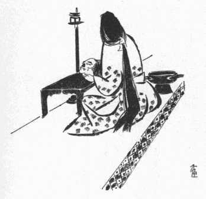
すると、三日目の晩のことだった。法師丸が屋根裏へ上って行くと、例の女の前に、一つの異様な首があった。と云うのは、歳頃二十二三かと思われる若武者の首なのだが、おかしなことに、それは鼻が缺けているのである。尤も顔は決して醜い器量ではない。色が抜けるように白く、
月代のあとが青々として、髪の毛のつや／＼しく黒いことは、今その首を扱っている娘の、肩から背中へ垂れている房々としたそれにも劣らない。思うに此の武士は餘程の美男だったゞろう。眼つきでも口つきでも、いかにも尋常で、全体の輪廓がよく整い、男らしく引き締った中に優美な線が隠されていて、もしその顔のまん中に鼻筋の通った、高い、立派な鼻が附いていたら、
恰も人形師が
拵えた典型的な若武者の首のようだったろう。然るにその鼻が、どう云う訳か鋭利な刃物ですっと斬り取ってしまったように、
眉間から口の上まで骨と一緒にきれいに無くなっているのである。元来ぴしゃんこな鼻だったら缺けていてもそう
可笑しくはないが、
中高な、
秀いでた容貌、―――当然中央に彫刻的な隆起物が
聳えているべき顔が、その
肝腎なものを
箆で
掬ったように根こそぎ
殺がれて、そこが平べったい赤い傷口になっているのだから、並みの
醜男の顔よりも尚醜悪で、滑稽であった。娘はその鼻のない首の、水のしたゝるような
漆黒の髪へ丁寧に櫛の歯を入れて、髻を結い直してやってから、ちょうど鼻のあるべきあたり―――顔のまん中を、いつものようにほゝえみを浮かべて視つめていた。少年が例に依ってその表情に魅了されたのは云う迄もないが、取り分けその時の感激の程度は今迄にない強いものだった。まあ云ってみれば、その夜の女の顔は滅茶苦茶に破壊された男の首を前にして、生きている者の誇りと喜びとに輝やき、不完全に対する完全の美を具象化していた。そればかりでなく、彼女のほゝえみがいかに無心な、娘らしい笑いであるとしても、―――そうであればある程却って、―――それが此の場合甚だ皮肉な邪悪に充ちたものに見え、少年の頭に果てしもない空想の糸車を与えた。彼はその笑いをいつ迄眺めても飽きない気がしたのみならず、
酌めども盡きない妄想がそこから幾らでも湧いて来て、いつの間にか彼の魂を甘美な夢の国へ誘って行った。彼はその夢の国で彼女と唯二人きりの世界に住み、自分自身があの鼻の缺けた首になっているのだったが、此の空想は非常に彼の
嗜好に
叶った。そして今迄のどんな場合よりも遥かに彼を幸福にした。
彼の歓喜が有頂天に達したときに、女の頬から次第に笑いが消えて行ったので、少年は暫く
茫然として、まだ夢のあとを追いながら、魂を失った人間のように立っていた。が、女がその首を左側の係りの方へ廻そうとするのを見ると、急に少年は、しーんとした屋根裏の沈黙を破って話しかけた。
「どうしたの、それは？ その、お前が持っている首、―――」
法師丸はいつになく自分の声がふるえているのに心づいた。そして言葉に力を入れて云い直した。
「え？ その首は鼻がないじゃないか？」
「は、―――はい」
娘は油で光っている手を首板の上に
衝いて、貴人に応対する場合の
慇懃な姿勢を取った。そうしながら彼女はチラと少年の顔を仰ぎ視たけれども、すぐに又
項を垂れて、一層しとやかに、うや／＼しいお時儀をした。
「鼻を斬られるなんて、餘程間の抜けた
奴だと見えるね」
そう云った時、少年の
咽喉から、かすれた、老人の
咳のような、子供らしくない笑いごえが出て、それが異様に屋根うらへ響いた。
「ねえ、どうしてそんな所を斬られたんだろう？」
「でも、あの、これは女首なのでございます」
「女の首？」
「いゝえ、そうではございません、………」
仮りにも男に口を
利くのが極まりの悪い年頃のせいか、それとも又、さっきからの
素振と云い、今出し抜けに話しかけた様子と云い、何か知ら此の少年に普通でない所があるのを感じたのか、娘は矢張下を向いたまゝ、おず／＼して、よんどころなく問いに答えると云う風であった。
「あの、女首と申しましたら、女の首ではないのでございます。わたくし、よくは存じませぬけれども、合戦が忙しゅうございますと、敵を討ち取りましても、その首を
提げて歩くことなど出来ないものでございますから、そう云う折に、鼻を斬り取って置きまして、それを證拠に、あとでその首を捜し出すのだそうでございます」
法師丸が尚も追求すると、娘はいよ／＼低く頭を下げて、尋ねられた事項を成るたけ少い言葉数で説明した。たとえば、なぜそれを「女首」と云うかと云えば、鼻だけ持って来たのでは男か女かの区別もつかない所から起った名称であること。ぜんたい鼻の缺けた首はあまり好ましいものではないが、戦場に於いて三つも四つも敵の首級を挙げるような勇士は、とてもそんな沢山な首を一度に持つ訳に行かないから、後のしるしに鼻を斬り取って置き、戦が済んでからその死骸を捜し出して首を処分するものであること。それも
已むを得ない場合にだけ許されていることだから、原則として女首の廻って来ることは稀で、今度の戦で彼女の手がけたのは此れ一つであること。―――少年は、それでもよう／＼此れだけの事柄を彼女の口から引き出したのであった。
げに人の心ほど怪しきはなし。それがしその折かの女にも廻り合はず、又女首を見ることもなくて過ぎなば、いかんぞ後年斯かる浅ましき所行に身を委ねんや。つら／＼思ふに、わが生涯の耻辱の起りは、かの女の俤その夜より深く胸に宿りて、朝に夕に忘れかねたるがためなりと被仰候、又仰せられ候は、されどその時はいかにもして今一度女首を持ち来り、再びかの女の笑ふ顔を見ばやと存じ、斯く思ひ立ちては気もそゞろに、心は矢竹の如くになりて、或る夜ひそかに敵陣の方へ紛れ出で候との事に候
と、「道阿弥話」には記してある。
さて法師丸は、今一度鼻のない首を持って来て、それをあの娘の前に置いて見たいと願うのであったが、彼の望みを成就するには実にさま／″＼な難関があった。第一に、他人が女首を持って来るのを期待する訳に行かないから、自分が取って来なければならない。ところが法師丸は、自ら戦場へ出ることを禁制されているのである。それは何とかして忍び出る道があるとしても、第二の難関は、自分で目ぼしい敵を組み伏せて、その男の首と鼻とを斬らねばならない。そうして自分が斬ったことを秘密にして、誰か外の者の名義で、それを首尾よくあの女の手へ廻すようにするのである。但し戦陣の功名は、その場でそれを目撃していた證人を必要とするのであるが、此の場合の法師丸は、
手柄を立てるのが目的でなく、たゞあの女が鼻の缺けた首を眺めてほゝえむ光景を見れば済むのである。だから一番やさしい方法は、戦場にころがっている屍骸の中から、
恰好な奴を見つけて、その首を斬り、
贋の證人を
拵えるか、
雑兵どもを買収すればよい訳だけれども、それは法師丸の武士の良心が許さなかった。
弓馬の家に生れながら、そんな卑怯なことは出来ない。飽くまで自分の力を以て敵を
斃すのだ。そうして其奴の首を
刎ね、鼻を斬るのだ。法師丸は誰の
智慧をも借りることが出来ないので、人知れず肝胆を砕いた。彼には又、早く秘策を
廻らさないと、いつあの女たちが交代するかも知れないと云う懸念があった。彼がこう云う不思議な希望と計畫とを胸に育てゝいる一方、
寄手と味方とは本丸と二の丸の
境目のところで毎日血みどろな攻防戦を続けつゝあった。勝ち誇った薬師寺の兵が、もはや城の陥落も一と息と見て、石垣を乗り越え、木戸を打ち破り、とき／″＼本丸の中へ真っ黒な
塊になって
雪崩れ込むのを、味方は必死に喰い止めて、どっと二の丸の方へ押し返し、突き崩し、虐殺と、怒号と、砲声と、
叫喚と、物のメリメリ破壊され、蹈みにじられる音と、人間の集団の彼方へ動き此方へ動く地響きとが、一日じゅう大雷雨のようにがーんと耳の端で鳴っていた。実際、さしも堅固を以て聞えた牡鹿城も、もう此れ以上持ちこたえることが覚束ない形勢であった。青木主膳は
鑓で突かれた
股に
繃帯をしていたが、二度目に腕へ負傷してからも
痛手に屈せず働いていた。そして極くたまに法師丸の顔を見ることがあると、
「ようございますか、若様。いよ／＼と云う時は、つね／″＼申し上げておりますことをお忘れになりませぬように」
と、悲壮な面色でそう云い捨てゝは、すぐ又何処かへ飛んで行った。それはいつでも
潔い最期を遂げるように、切腹の覚悟をしていろと云う意味らしかった。女たちももう一人として落ち着いている者はなかった。あの老女までが手負いの介抱や死人の運搬に忙しいらしく、夜も姿を見せないことがあった。
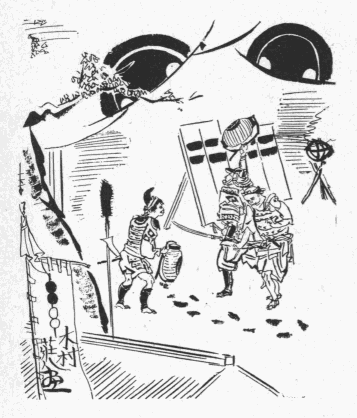
しかし法師丸は、城と自分の運命とが
旦夕に迫っていることなど、一向念頭にないのだった。それよりも、彼に都合のよいことは、城内が乱脈になったゝめに全く彼の行動が解放された一事である。今となっては城中の者の眼をかすめて忍び出ることは困難でない。たゞいかにして敵の陣地へ紛れ込むかゞ問題である。で、或る晩、―――と云うのは、あの異常な経験をしてから二日目の晩、法師丸はこっそり城の裏山の
渓へ降りて、そこから城廓の外へ通ずる間道を伝わって行った。彼の考では、敵の大部分は今城内の二の丸と三の丸に充満しているから、
外廓の
濠の向うにある本陣の方は定めし備えも怠っているであろうし、兵も大勢はいないであろう、すると、此の道を行っていきなり敵の本陣のうしろへ出れば、必ず好い機会があるに違いない、と云うのであった。彼は何か知ら、
初陣の武士が感ずる胸の高鳴りと武者ぶるいを覚えた。彼の眼の前には、あの美女の笑顔と、鼻の缺けた幾つもの首とがちらついていた。
少年がその山路へかゝったのは、今の時刻で云えば夜中の二時頃のことだった。夜な／＼彼が屋根裏へ通う折に青白い光を浴びせた月が、その晩も牡鹿山の頂の上にあって、少年の影をくっきりと地に
印していた。法師丸は、女が城を落ちて来たように思わせるために、
被衣を頭へかざしていたが、そのうすものゝ影が真っ白な地上に
海月の如くふわ／＼するのを視つめながら歩いた。
敵の陣屋と云うのは、二た月に亙る城攻めのことでもあり、二萬騎にあまる大軍が
屯していた場所であるから、それ相当の設備がしてあったに違いない。牡鹿山の城は、うしろに
重畳たる山岳地帯を控え、城のある部分だけが平原に向って半島の如く突出していたので、敵はその半島の
裾をＵ字型に包囲して、
蜿蜒たる陣形を作っていた。そして陣屋の一番外側には
篠垣を
繞らし、五間十間ぐらいの距離に
本篝りを
焚き、その垣の内側に、望楼、見せ
櫓等をところ／″＼に設け、板囲いの仮小屋、―――今で云えば急造のバラックのような営舎を幾棟も建てゝ、そこに大将以下の士卒が寝泊りをしていた。法師丸は間道を通ってＵ字型の上部の切れ目から一旦包囲の外へ
逃れ、敵の陣営の裏側を
迂廻して、
恰もＵ字の最下部のところ、城の
大手と向い合った本陣のうしろへ出たのであったが、やがて篠垣の一部を破って構えの内へ忍び込むことに成功した。もちろん普通の場合ならばそう
易々と潜入出来る筈はないが、彼が豫想した如く、寄せ手の大半は城の三の丸や二の丸の内部へ詰め切っていて、陣屋の方は人数も手薄に、見張りの兵なぞも警備を
弛めていたのである。
少年は城の生活には馴れていたけれども、陣屋の小屋割りを見るのは
今宵が始めてゞあるから、その垣の内へ忍び入ったゞけでも少からぬ好奇心の満足を覚えた。彼は既に陣中にある以上、女装をすることは却って不審を招く
基だと感じたので、
被っていた
被衣を、小さく畳んで
懐に入れた。そして
鮮やかな月の光が写し出す真っ黒な建物の影から影へと、飛鳥の如く身を
躍らせて伝わりながら、立ち並ぶ陣小屋の軒に身を寄せて一軒々々
窺って行った。少年に取って仕合わせなことには、ところ／″＼の篝り火の明りが月光のために効果を殺されて、へんに白っぽい煙のようになっているのである。それに、まんべんなく照り渡っている月は下界をすべて銀色に反射させ、
透き
徹った秋の夜の空気の耳にある物が、どんな微細なものまでも皆キラキラと
眩ゆい
燐光を発しているので、その極端な明るさが見張りの者の展望を妨げているのである。少年は、或る所では火を囲んでうずくまっている番兵の傍を通り抜けたり、或る所では望楼の真下の方へ、地上に帯の如く倒れているその影を利用して近寄って行ったりしたけれども、誰も
見咎める者はなかった。籠城方がもう本丸まで追い詰められた際であるから、恐らく
物見の兵共も油断して寝ていたのであろう。よしや二三の者が認めたとしても、
近習の小姓か何かゞ月に浮かれてうろついているのだとでも思ったのであろう。

各
の陣小屋の周囲には、それ／″＼
麾下の将卒の紋を染め抜いた陣幕が
廻してあり、小屋の入り口には制札が立てゝあり、旗、
指物、長柄、などが幕の蔭に置いてあった。法師丸はそれらを一つ／＼調べて行くうちに、偶然にも丸に
分銅の紋の附いた立派な幕が眼についたので、覚えずその前に足を止めた。なぜなら、それこそ薬師寺弾正の定紋であって、その幕の中が寄手の大将の本陣に違いないからである。少年は、幕をかゝげてつと陣小屋の
羽目板に寄り添うと、暫く内部の人のけはいに耳を澄ましたが、何の物音も聞えて来ない。建物のうしろへ
廻ってみると、裏手が
厩になっていて、大将の乗馬らしい五六頭の馬が
繋いであり、今はそれらの馬さえも安らかに眠っているのである。法師丸は全く思いも寄らなかった功名の機会が、不意に我が手に
委ねられているのを感じた。彼の目的は女首を得ることにあって、必ずしも大将の首を要しない訳だ。けれどもこう云う天与の時を
逃がしては武士の
冥加に盡きる。
馬印や
旗指物がこゝに置いてあるところをみれば、ひょっとすると弾正政高は城攻めの手に交っていないで、此の陣小屋の奥の一と間に寝ているのかも知れない。運よく行けば総大将の首を討ち取って、無類の手柄を立てることが出来る。―――此の考は少年の冒険的企図に拍車を加えた。彼は
大人のような落ち着きと胆力とを以て、しずかに裏側の
真平戸を
繰り開けた。そして次の瞬間には廊下の板敷を伝わって、奥の間と覚しい方へ手さぐりで進んで行った。
あたりは真っ暗であったけれども、板の合わせ目や節穴から
射して来る月の光を
便りにして行くと、廊下の突あたりに、戸の
隙間からぼんやり灯影の洩れている一と間があった。少年は再びその戸を一尺ばかり開けてみた。中は二た間に区切られていて、法師丸が
覗いている方は次の間であるらしく、ちょうど彼と同じくらいの年輩の小姓が二人眠っている。奥の間と次の間との仕切りには
衝立が立てゝあって、燈明はその衝立の向う側にともっているのである。法師丸は、小姓の寝息を乱さないように
爪先を立てゝ次の間を通り抜け、衝立のかげにつくばいながら奥の間に眠っている武士の寝顔を眺めた。その部屋の廣さは畳数で十畳ほどもあろう。粗末な板張りの座敷ではあるけれども、
枕上のところに仮りの
床の
間が設けてあって、
八幡大菩薩の
軸が
懸っている。
床脇に据えた
持佛の
厨子には不動明王が安置してある。その外室内の装飾の様子、太刀や
物具や刀掛けのきらびやかさ、金銀の
蒔絵をした調度類の
贅沢さから
推して、こゝが普通の侍の詰所でないことは疑う餘地がない。ましてその男は、大将
髷に束ねた頭をつや／＼と光る
黒漆の枕に載せて、
緞子とか
綸子とか云うものらしい絹の夜着を着ているのである。法師丸は弾正政高の年齢や
風采について何の豫備智識も持っていないのだが、見たところその男の年は五十前後のように思われる。
額のひろい、上品な
瓜実顔の、のっぺりした皮膚が優雅な目鼻立ちを包んでいて、寝顔で判断すると、武士と云うよりは公卿のような印象を受ける。此の年頃の武士ならば、大概日に焼けた頑丈な肌をして、何処かに戦場往来の俤を留めているものだのに、その寝顔の皮膚は、浅黒いながらも鏡板を拭き込んだようで、透かして見ると鳥の子紙のように
肌理が
細かい。こう云う皮膚は、雨に
曝され風に打たれつゝ
馬背に日を暮らす武人のものでなく、深窓に育って
詩歌管絃の楽しみより外に知らない貴人のものである。
そう云えば薬師寺弾正と云う男は、管領畠山氏の
家人ではあるが、その父の代から主人畠山氏を
凌ぐ勢いがあり、時には
陪臣の身を以て
室町将軍の意志をさえ左右する権力者であった。彼がそう云う特別な地位に登ったのは、主として彼の父親の実力のお蔭で、彼自身は別段過去に花々しい武勲がある訳でもなく、専ら父が築いてくれた有利な地盤を
蹈台にして、弁舌と、機智と、世才とを以て巧みに上長に取り入りつゝ
下尅上の時勢に乗じたのであるから、大名とは云うものゝ、まあ半分は
堂上方の風が身に
沁みた長袖の
亜流に過ぎない。いったい当時の京都の武士は将軍家を始めとして皆幾らかずつ公卿の感化を受け、惰弱な
 紳
紳の生活ぶりを
真似ていたので、弾正なぞも和歌が上手な割りに戦の方はそう得意でもなかったらしい。だから今度の城攻めにも総大将として出馬した迄はよいが、味方の優勢を
恃み切って、自分は安楽に陣屋で眠っていたのであろう。法師丸が見たものは、つまりそう云う男の寝顔であった。
少年は、その、恐らくは弾正その人であろうと推定される人物の容貌に一種の物足りなさを感じた。成るほど此の男は
一廉の大名らしい品格と
貫禄とを備えているけれども、何だか
優男じみていて、二萬の大軍に号令する武門の
棟梁の威風がない。彼の想像する敵の総大将は、父武蔵守輝国や牡鹿山の一閑斎などに共通して認められる、鍛えた鉄のような筋骨と、盛んな征服慾に燃えた勇猛な顔だちとを持っていなければならなかった。それがこんな弱々しい人柄では、すぐにも討ち取れそうに思えて、少し張り合いのない気がする。しかし法師丸は決してそのために落胆や失望はしなかった。自分の武勇を示すこと、手柄を現わすことを主にすると、そう云う不満も起る訳だけれども、同時に彼の眼は別な観察点からその寝顔を眺めつゝあった。と云うのは、その顔のまん中には、いかにも形のよい、きゃしゃな、薄手な、貴族的な鼻が附いているのである。法師丸の位置からやゝ
仰向けた鼻の
孔が覗けるのだが、肉のうすいことは縦に細長く切れている二つの孔の境界線を見ても分る。そして、貴族の鼻の特長として、鼻柱がほんの心持弓なりに曲り、鼻梁骨の在りかが皮膚の下から
微かに見えている。
蓋し此の鼻を此の顔から
殺ぎ取ったとすると、その破壊作用が引き起す怪奇味の程度は、あの屋根裏にあった女首におさ／＼劣らないものがあろう。なぜかなら、あれは好男子の若武者の首であったが、此れとても、
苟くも敵の総大将の胴に
篏まっているものである点、斯くの如く優美で、繊細で、気品に充ちている点などは、年齢が多少
老けていると云う短所を補って
餘りがある。いや、恐らくは此の方があれより一層誘惑的な鼻であって、ひとたびあの屋根裏の光景を享楽した少年に取っては、確かに
垂涎に値いするのである。
見ていると、
短檠の明りが隙間洩る風にあおられてゆら／＼とはためくたびに、その高い鼻柱が寝顔の半面に黒い影を落して、同じようにゆら／＼と動く。
燈火の工合で、とき／″＼影が大きくひろがり、鼻のあるところ全体が暗くなる。ふと、鼻が見えたり見えなくなったりする。その光線の戯れは、少年に向ってしきりに何かをそゝのかすようであった。鼻が、斬られないうちから斬られた様子をして見せて、彼を促しているのである。何だか一刻も早く斬って貰いたそうである。法師丸は再びあの美女の
謎の微笑を想い浮かべた。此の顔を鼻の缺けた首にして、彼女の膝の前に置き、彼女の凝視に
曝した時の快感をおもうと、何物にも換え難い気がした。
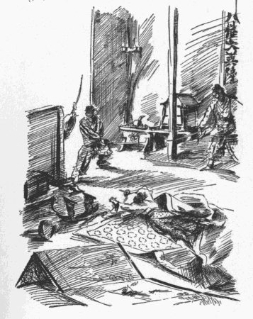
年の割り合いに体重があり
膂力がある法師丸は、剣にかけても自信があった。彼は矢庭に寝ている男の
枕を蹴って、相手が守り刀へ手をかけるより早く、起き上ろうとして半身を浮かしかけたその胸の上へ
跳び着きながら馬乗りになり、唯一と突きに
咽喉を刺した。彼の用いた
脇差は、父の輝国から貰った
兼光の
業物であったが、武器よりも手練の方が見事だった。一と突きで正確に急所に達し、すぐその刀を引き抜いてから、殆ど返り血を浴びないくらいに素早く立ち上っていた。
綺麗な、
敏捷な、自分でも豫期しなかった程の働きであった。相手は声を上げる暇もなかったので、法師丸が見たものは、
狼狽した瞳と、何事かを叫ぼうとして開きかけた口と、―――そして一瞬の後に、それらが苦痛に
歪められたまゝ凍りついている死顔とであった。しかし此の時法師丸はうしろに迫りつゝある白刃のけはいを察した。次の間に寝ていた二少年が抜き連れて斬り込んで来たのである。が、今の
早業で自信を倍加した彼は、身をかわしながら床の間に
駈け上ると、八幡大菩薩の軸を背中にして構えた。此の位置が彼を有利に導いたと云うのは、床の間の前の
空地の半分が死骸だの
厨子だの枕元の調度類などに占められていたので、向って来る敵を自然と一方へ片寄せてしまったのである。小姓共の方は、
咄嗟に主人の殺されたのを見、而も殺した人間が自分たちと餘り違わない
小童であることを知って、明かに度を失っていた。彼等には、床の間に躍り上って、腕に覚えのある者でなければ容易に示すことの出来ない落ち着きを以てしずかに敵を待ちかまえつゝある法師丸の姿が、
忽然と地から湧いて出た魔物のようにも見えたであろう。彼等は最初の勢いにも似ず、じり／＼と警戒しながら、そして主人の
亡き
骸を蹈まないように大廻りしながら、床の間の方へ進んだ。
切先を
揃えて迫って来た二人の少年は、床の間の前までは一緒だったが、そこを上ろうとする時に
臆病な方が
後になった。法師丸は、先に蹈み出した小姓の挙動を見守っていて、その片足が
床框へかゝった
刹那に、不意に五六尺の距離を進んで一刀を
浴びせた。畳一畳ほどを隔てた隅に立ちすくんでいたものが猛然と斬って出たゝめに、小姓ははっとして蹈みかけた足を
退こうとしたので、ほんの床框だけの高さが法師丸に利をもたらした。彼は今の一撃が相手の肩へ深く喰い入ったのを見ると、相手を抱きすくむ如くにして第二の突きを横腹に加えた。そして相手が血ぶるいしつゝ大きな
艦が沈む時のように倒れきらないでいる間に、もう一人の小姓に襲いかゝった。可哀そうな此の小姓は、既に気を
呑まれていて
闘う意志はないのだが、主人に
殉ずる一念だけで蹈み止まっていたのであろう、彼は法師丸の鋭く打ちおろす剣の光に、眼をつぶるようにして二三合斬り結んだが、それはあきらめたような、申し訳のような、めそ／＼泣いているような抵抗だった。法師丸は相手の剣を打ち落し、蹴倒して胸を刺した。
二人の小姓が
斃れると、彼は最初の死骸の傍にうずくまって、左の手で
髻を
掴み、右手で首を掻き切ろうとしたが、此の時廊下を駈けて来るらしい数人の足音を聞いた。思うに少年がこれだけの働きをした時間は、その行動が可なり機敏だったとしても十五分
乃至二十分はかゝったであろう。しかし奥の間の近くには誰も詰めていなかったと見えて、そのとき漸く離れた部屋にいた武士共が物音に驚いて駈け付けたのである。法師丸は、今は一刻も
猶豫のならない場合だった。けれども
屍骸の胴体から器用に首を切り離すことは、生きた人間を刺殺するほど簡単な訳に行かなかったので、背後に迫る人声を聞くと却って
慌てた。頸部に突き立てた刃の切先が骨に引っかゝっているあいだに、早くも次の間へどや／＼と蹈み込んで来た者があった。逃げるなら今でなければならない。彼の計畫はこゝまで奇蹟的に成功したけれども、最後に至って目的を放棄するか、さもなければ斬り死にするより外はなかった。少年は無念の歯がみをしつゝ断念して脇差を引き抜いたが、その途端にどう云うつもりだったのか、さっと屍骸の鼻を
殺いだ。そしてその肉片がポロリと床へ落ちたのを反射的に拾い上げながら、一方の
遣戸を押し開いて逃げた。
凡そ英雄豪傑の伝記を読むと、何となく天がその人の運命に特別な
冥護を垂れ、彼はそのお蔭で、しば／＼常人の企て及ばざる危地を蹈みながら無事に
虎口を脱出するかの如くに見える。たとえば法師丸の此の場合などもその一例で、彼が行きがけの
駄賃に屍骸の鼻を斬ったのは、口惜し
紛れの
腹癒せであったか、せめて目的の一端を果たす気であったか、或は、大胆な少年もさすがにその時は
狼狽した結果であったか、そこのところはよく分らないけれども、兎に角彼がその鼻を持って逃げなかったら、或は捕えられていたかも知れない。と云う訳は、これは全くの
臆測であるけれども、多分寝所へ駈け付けて来た武士共は、主人の顔に大切な物がなくなっていることを発見すると、一手は
曲者を追いかけたに違いないが、まさか其奴が持って逃げたとは思わないから、
瑕我で斬られたものと早合点して、一手は暫く部屋の中をうろ／＼しながら、主人の顔の断片を捜し廻ったであろうと考えられるのである。で、最初に少年を追って出た者は二三人に過ぎなかった。おまけに彼等は、前を走って行く少年の姿を自分たちと一緒に起きて来た小姓の一人と思い
誤まったらしかった。法師丸は間一髪のところを
逃れてまだ外囲いの篠垣を越えないうちに、方々の櫓や望楼から貝や太鼓を一時に鳴らし出すのを聞いた。それと同時に
彼方此方の小屋から夢を破られた者共が起きて来て、忽ち陣中の騒ぎになったが、その混雑が彼には一層都合がよかった。彼は追い／＼数が
殖えて来る
松明のあいだを
巧みに
潜り抜けながら、やがて自分でも
篝り火の燃えさしを取って振りかざした。自分の手に照明があると、自分の姿が却って人に見えにくゝなる。―――少年は賢くもその理を悟って、火を眼つぶしに使ったのであった。そして首尾よく構えの外へ脱出すると、すぐその場で松明を捨て、五六丁走った後に
被衣を
被って、見渡すかぎり
渺茫とした
月明の中へ溶け込んで行った。
歴史の記すところに依ると、薬師寺弾正政高は天文十八年十月牡鹿山の城攻めの際に陣中に於いて病を得、囲みを解いて京都に帰ったが、それから十日ばかり後に
油小路の
館に於いて病歿したとなっている。しかし此のことが事実でないのは「道阿弥話」や「見し夜の夢」に徴すれば疑いの餘地がない。たゞその当時事件の真相を知っていた者は、
寄手の極く少数の人々と、城の方では法師丸一人だけであった。
何でもその夜、法師丸が逃げてから間もなく、本陣の一部に火災が起って、その火が城の方からも望めたけれども、陣小屋が一と棟焼けたくらいで直きに鎮火してしまったと云う。思うにこれは寄手の方に誰か思慮深い者があって、夜半の騒動を火事にかこつけるために、わざと火を失したのであろう。何を云うにも、総大将が油断の結果殺されたことは不覚でもあるし、而も曲者を取り逃がしてしまったのだから、幹部級の武士共は当惑したに違いない。いや、それよりも何よりも、彼等はさしあたり鼻が何処かに落ちてはいないかと血眼になって捜したことだった。全く鼻がないのは首がないより始末に困る。
桶狭間の
今川義元も敵を
侮って命を落したが、首はあとから返して貰ったし、もちろん鼻だってちゃんと首に附いていたことだ。然るに首を取られないで鼻だけ取られたと云うのでは、耻辱の
上塗りで、味方の陣中へも触れることが出来ない。そこで取り敢えず現場を見た者には堅く口止めをして、貝や太鼓で騒ぎ立てたのは火事のためだったと云う事にしたらしい。
しかしそんな風にして味方の兵士共を胡麻化したとしても、敵の方から事実が知れて来はしないか。「弾正殿の大切な物が計らずも我等の手に入りましたが、これは定めし御入用と存じますからお返し申します」とでも云って、鼻を
恭しく三宝に載せて、軍使が出張って来るのではないか。―――薬師寺方の老臣たちは、それを案じて内心びく／＼ものであった。そして夜が明けると、それとなく攻撃の手を
緩めて
城方の様子を
窺ってみたが、いつ迄立っても城からは何の
沙汰もなく、寄せ手が静まれば籠城方も変に静まり返っている。そうなると老臣達は又気味が悪いので、何か計略があるのではないかと疑ったりした。説を成す者は、大将の寝所を襲ったのは
城方の間者の類ではなく、盗賊か、或は殿様に個人的の
怨みを
抱く人間かも知れない、武士の所為ならば鼻を斬るような無意味ないたずらをする筈がないから、―――と云うので、これも道理に聞えたけれども、矢張城方の武士が首を斬る暇がなかったために鼻を持って行ったので、いずれそれを
嘲弄の材料にする気に違いない、―――と、そう考える者も少くなかった。
寄手が城方の腹をさぐりつゝある間、城方は又、勝ち誇っていた包囲軍が急に攻撃をゆるめた理由が分らないので、同じように気味悪がった。彼等は京都の方に政変が起ることを唯一の頼みにして闘っていたのだが、別にそう云う情報も来ないし、それに此処まで追い詰めて来た寄手が、城の陥落を目前に見ながら容易な事で手を引く訳もないのだった。然るに
今朝から寄手の陣が妙に用心深くなって、はか／″＼しく攻め太鼓も鳴らさず、此方から鉄砲を打ち込んでも相手にならず、徒らに備えを堅めて沈黙しているのは
何故であろう。そう云えば昨夜敵の陣屋に火事があったらしいから、ひょっとすると何か異変が起ったのかも知れないが、忍びの者を出して見ても一向要領を得られない。兎に角
唯事でないと云うので、城内では一閑斎を始め
重立った武将たちが寄り／＼評定を凝らしたけれども、誰も好い加減な当て推量をするばかりだから、群議まち／＼で
埒が明かない。いっそ此方から死にもの狂いで打って出たらばと云う説もあったが、敵にどう云う魂胆があるか知れないのにそれも危険だ、まあそのうちに様子が分るであろうから、敵が動く迄は此方も動くなと云うようなことで、とう／＼その日も暮れてしまった。そう云う訳で、敵も味方も疑心暗鬼に囚われている最中に、法師丸はひとり昨夜の失敗を思い出しながら
懊悩していた。彼はあの時自分が手にかけて殺した男が果して敵の総大将であったかどうか、まだ本当には分っていなかったのであったが、今朝から急に寄手の勢いが鈍り出したので、さてはやっぱりそうだったのかと、始めて得心が行ったようなものゝ、喜び勇んでその功名を人に語る気にはなれないのであった。子供の時分に、ほんの無邪気な出来心から、ちょっとしたいたずらをしたのが元で思いがけない事件を引き起し、大人たちに大騒ぎをさせるようなことがよくある。そんな場合に、事件の火元は自分であることを教えてやればどんなに皆が助かるか知れないものを、叱られるのが
恐かったり、今更云い出しにくかったりして、誰も気が付かないのをいゝ事に、何処迄も知らん顔で済ましてしまう。法師丸もまあそれに似た心持だった。敵の様子が変ったのは自分が昨夜此れ／＼のことをしたからだと
名告って出れば、味方は
俄かに
生色を取り返し、無駄な心配から救われる訳でもあり、第一法師丸自身がいかに面目を
施すことか、少年の身を以てそんな働きをしたことが知れたら、父輝国や一閑斎はどんなに
褒めてくれるであろうか、それを思うと、云い出したくてむず／＼するようにもなるのだが、彼の手柄は実に偶然の
儲け物で、裏面に潜んでいる耻ずかしい動機が露顕することを考えたら、とても恐ろしくなるのであった。それに證拠も證人もなしでは、名のり出たとしても誰が信じてくれるだろうか、昨夜本丸へ逃げ帰った際に、すぐにでも届け出れば信じて貰えたであろうけれども、彼は寝床へもぐり込む前に血の附いた衣類などを
悉く
大篝り火の中へ投げ込んで、むしろ證拠を
堙滅するのに骨を折った。今ある唯一の證拠としては、そっと紙に包んで
懐に入れている鼻があるが、それを持ち出したら彼の大事な秘密がバレルのは云う迄もない。
そんなことよりも法師丸は、昨夜あれ迄順調に運びながら、最後の瀬戸際で折角の計畫が
齟齬したのが残念でならなかった。恐らく敵の陣中では昨夜に懲りて警戒を厳重にするであろうから、もう二度とあんな工合に都合よく忍び込むことは出来ないであろう。
彼はとき／″＼人のいないのを見定めては
懐から例の肉片を取り出して
私かに空想に
耽っていた。彼の
脳裡には、鼻を斬った刹那の屍骸の顔がはっきり印象されていて、それが、その肉片を取り出すたびに一層あざやかに想い出されるのであったが、それにつけても、あゝ、あの首がありさえしたらと思うと、いっそもう一度盗みに行きたくなるのだった。何しろ総大将の屍骸であるから、あれは今もあの陣営の奥の間に、
鄭重に安置されていることだろう。法師丸はその部屋の有様を想像し、そこに
恭しく
臥かしてある死体の、品のよい、
肌理の細かい、のっぺりした顔を想像し、さてその顔の
空洞になった中央部を想像すると、
恰もそれが世に珍しい宝物か何ぞのように所有慾をそゝられるのであった。しかし法師丸に取っていよ／＼都合が悪くなったのは、両軍が休戦状態に這入った結果、もう屋根裏の女たちも仕事を止めているのである。もはや彼があの首を盗んで来たところで、それをあの女の前に据えて見る望みは永久に失われてしまった。だがその代り用のなくなった女どもが再び彼の部屋に寄り集まって、あの老女を中心に輪を作りながら
朝夕雑談をつゞけていたので、彼はおり／＼彼女等の席へ近づいて行って、その圓陣の中にいる例の娘を
偸み見ることが出来たのであった。
が、年上の女に人知れず思いを寄せる少年の片恋ほど、
果敢なく頼りないものはない。測らずも彼の胸に不思議な
煩悩の火を
焚きつけ、四十三年に亙る彼の奇怪な性生活の端緒となった此の娘に対しても、法師丸はたゞ遠くから夢のような
憧れを捧げていたばかりで、殆ど此れと云う直接の交渉を持たなかったのである。彼はわずかに、大勢の談話の中に交って彼女の語る声を聞き、またその頬にあのほゝえみの浮かぶのを
餘所ながら眺めては、それをせめてもの慰めにして日を送った。しかし此の場合にも、少年はそのほゝえみに依ってひそかに屋根裏の光景を幻影に描き、今は全く愛嬌のよい笑いに過ぎないその表情に残酷味を感じて、それをこっそり享楽しつゝあったのでもあろう。彼は女たちが「もう籠城もおしまいらしい」とか「どうやら此の城も助かるらしい」とか云うのを聞くと、却って悲しくなるのであった。反対に彼は、此の籠城が一日も長くつゞくことを、そして少しでも餘計娘の傍にいられることを願った。
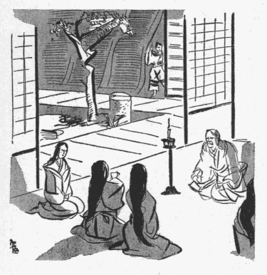
斯くて敵味方は互に不安に駆られながら四日の間
対峙していたが、五日目になって寄手は遂に城の囲みを解き、陣を拂って引き揚げたのであった。薬師寺
方の老臣共は、最後まで主人の鼻を発見することが出来ず、結局誰の
仕業とも見当が付かないので、ます／＼
怖気がついたものか、「弾正政高公
俄かの御病気」と云うことにして、屍骸を
輿に
舁かせて行った。もはやその時分には、何か総大将の身に変事があったらしいことが、ぽつ／＼両軍に知れ渡っていたので、事に依るともう死んだのであろうと想像する者は多かったが、その原因が病気であると云う
噂を疑がった者は一人もなかった。が、もし輿を
舁いて行く兵士どもが、その輿の中にある「病人」の顔を一と目でも見たらばさぞびっくりしたことであろう、鼻の落ちる病気の
黴菌は、たしかその前後に
煙草と一緒に日本へ渡来した筈だけれども、まだその頃は一般に知られていなかったに違いないから。
武州公の法師丸時代の逸話は此れで終るが、此の時の事について今少し「道阿弥話」を引用させて貰おう。
二の丸三の丸の敵の兵ども引き退き候時、河越甚兵衛しつぱらひを致し候。味方すかさず本丸より打つて出で、ひた／＼と喰着き候へども、人の不幸に乗ずるは武士にあるまじきことなり、弾正病気とあらば是非に及ばずとて、一閑斎味方を制し止められ候。城中必死の覚悟を極め候ことゝて、皆々よろこぶこと限りなく、此処彼処の櫓にて俄かに酒宴の莚を開き祝ひ酒に酔ひ候。かの人質の女どもは、その折いづこへ参り候やらん。いづれも最早や埒明き候へば暇乞ひして在所へ罷越候にや。某かの娘の姿を今一眼見んとて所々を捜し候へども遂に見ること叶はず、そのまゝになり候。人に尋ね候へば、井田駿河守の女てると申す者と申し候。さるにても籠城の折だにあらば又逢ふこともあらん、あはれ今一度寄手の来る時あれかしと願ひ候ことなりと被仰候
―――「籠城の折だにあらば又逢ふこともあらん云々」と云う少年の心は、八百屋お七にも似て甚だ
笑止ではないか。
［＃改ページ］
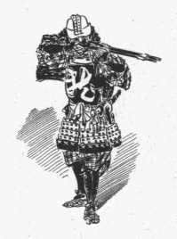
法師丸の元服は
天文二十一年
壬子正月十一日、彼が十六歳の春であった。当時法師丸はなお牡鹿山の城にあって
一閑斎の小姓を勤めていたのである。「見し夜の夢」には此の元服の儀式の次第が女らしい細心な注意を以て記されているけれども、それはあまりくだ／＼しいから
委しく述べる迄もあるまい。式は一閑斎の
館の一と間に於いて
挙げられ、
加冠の役は父
武蔵守輝国が領地から出向いて来て
執り行った。そのとき、法師丸の身の
丈は五尺二寸、始めて
長小結の
烏帽子を着けて父の後から歩いて行く姿を見ると、ちょうど
父子のせいの高さが同じくらいであったと云う。
読者は、法師丸の十六歳の時の身長が五尺二寸であったと云う事実を、特に念頭にとゞどめて
［＃「とゞどめて」はママ］置かれたい。と云うのは、いったい此の時代の男子の平均の身長が何程であったかを
詳らかにしないが、思うに戦国のむかしに於いても、五尺二寸と云う高さは十六歳の少年のものとしてさまで驚くには足りなかったであろう。「見し夜の夢」の作者
妙覚尼は武州公の
容貌、
風采、体格等についてしば／＼語っているのであるが、それに依ると、「
瑞雲院さまはおん顔のいろくろがねの如く、筋骨のたくましきことは萬人にすぐれておはしましけれども、おん身のたけ高からず、
宍付横にふとくおはしましき」とあり、又或るところでは、「
御眼のひかりするどく、頬のほねたかく、唇の肉あつくして、おん身のたけにくらぶるときはおん顔大きくおはしまし」とも云っている。されば幼少の頃は兎も角も、元服をした前後からはあまり身の丈が伸びなかったことが推定される。
蓋し、父輝国のせいの高さが少年の彼と同じであったのを考えると、背の低いのは
親譲りだったのであろう。が、妙覚尼も云う通り
図抜けて大きい彼の
魁偉な容貌が、その身長との不釣り合いのために一層人を威壓したことは、想像に難くない。
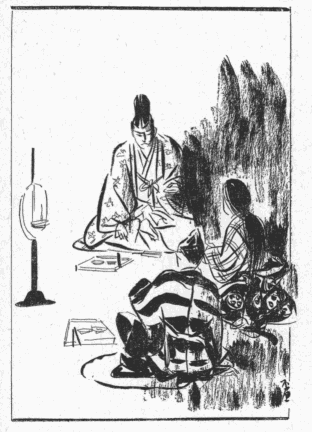
かくして法師丸は父の
字名の一字を
貰って
河内介輝勝と名のり、同じ年の夏には一閑斎に従って
箕作城の城攻めに加わり、早くも
初陣の功を立てた。その合戦に彼は敵の
侍大将堀田三左衛門の首を討ち取ったばかりでなく、先頭に立って
塀を乗り越え城中に
跳り入ったので、「河内介を討たすな／＼」と一閑斎が
士卒を励まして遂に城を陥れた。折柄父の輝国は
多聞山の居城にいたが、青木主膳から我が子のけなげな武者振りを聞いてうれし涙にかきくれたとある。一閑斎も「
今日の働き神妙に候」と云ってその武勇を
褒めそやしたが、「あれはゆくすゑ恐ろしき者なり、わが亡き後は
筑摩家の家運いかゞあるべし」と、ひそかに近侍の者にためいきを
洩らしたと云うから、
槍先の功名のみならず、智謀胆略の尋常でないことが、此の時すでに一閑斎の眼にとまって警戒されるようになったのであろう。「道阿弥話」の中で輝勝自身が語っているところに依ると、一閑斎の長子
織部正則重も亦此の城攻めに参加していた。当時則重は十八歳、即ち輝勝より二歳
年嵩であったが、輝勝に比べると器量骨柄が甚しく見劣りしたので、父の一閑斎がそれに気が付かぬ筈はなく、内心深く憂えている様子が明かであったから、輝勝は常に自ら
警めて一閑斎父子の疑惑を招かないように努めたと云う。
しかし戦場に於ける勇士としての輝勝を叙することは此の物語の目的でない。以上に述べたようなことは、「
筑摩軍記」の「
箕作城落去のこと」の条その他くさ／″＼の軍記類にも皆記されている事実である。たゞ問題となるのは、かの法師丸の時代に女首の
刺戟が与えた不思議な快感、奇怪な幻想、「秘密な楽園を
趁ふ心」は、そのゝち輝勝の
脳裡に於いて如何なる形態を取っていたであろうか？ 初陣の時の花々しい働きを見れば、此の十六歳の若武者の胸中には最早やそんな汚らわしい記憶はあとかたもなく消え去って、燃ゆるが如き
覇気と野心とが
充ち満ちていたように思われる。実際、幼い時に彼が味わったようなあの不思議な快感は、恐らく
誰もが少年の折に一度や二度は経験することのあるものなので、彼のみが知っている秘密ではないのであるが、それがその人の心に
喰い入って一生の性生活を支配する程の病的傾向となるのは、たま／＼その人がそれに
誂え向きな四囲の状況の中に置かれて、繰り返し／＼その感情を呼び覚まされる結果である。故に、もし輝勝が法師丸の昔に於いて女首を見ることがなかったならば、或は彼は、「秘密な楽園」の存在を知ることなしに済んだであろう。又、あの時にたった一度知ったとしても、その以後再び幼時の古い傷口を突っ
衝かれることがなかったならば、あゝ迄彼の性慾が
畸形的になりはしなかったであろう。況んや戦国の世は、大名の子息と雖も今日の貴族の子弟の如く安閑と日を送っていたのではないから、なか／＼そう云う邪念
妄想を育てゝいる暇はなかった筈である。だから河内介輝勝も、一時は全くあの浅ましい享楽から遠ざかって、ひたすら戦場に
驍名を馳せるより外には何の望みもなかったことゝ解釈していゝ。しかしながら彼のために不幸なことには、一旦癒えていた彼の
忌わしい性癖に油を注ぐ一人の女性が
茲に登場して来るのである。
筑摩織部正則重の正室
桔梗の
方と云うのは、
牡鹿山の城攻めの後に「病死」をした薬師寺弾正政高の
女で、則重の許へ
輿入れをしたのは城攻めの翌々年にあたる天文二十年、彼女が十六歳の時だったと云うから、則重より一つ歳下、輝勝より一つ歳上であった。「見し夜の夢」には、
もとよりやんごとなき都の
上にてましましければ、和歌
管絃のみちにくらからず、丹花のくちびるふようのまゆたまをあざむくばかりにて、もろこしの
楊貴妃、本朝にては
衣通姫といふともよもこれほどにはあらじとおぼえて………
などゝ記しているけれども、そう云う月並な形容詞を連ねたのでは果してどれほどの美女であったのか明らかでない。が、此の正室の顔だちや風姿がすぐれてめでたかったことは事実であろう。なぜかと云うのに、彼女の母は美貌の
噂の高かった
菊亭中納言の息女であり、彼女自身も亦おさ／＼母に劣らないと云う評判があったので、生れつき色好みの則重はかねてから彼女との縁組みを望んでいたのである。
但し、此の縁談が
纏まったのは将軍家の口添えの結果であった。元来薬師寺の家と筑摩の家とは数年以来矛盾に及んで双方の間に
合戦が止む時なく、殊に
天文十八年には弾正政高が大軍を率いて牡鹿山の城を囲み、既に一閑斎に詰め腹を切らせようと云う所まで取り
籠めたのであったが、
略勢力の伯仲する両家が
鎬を削って争っていたのでは世の中がいつも騒がしく、ひいては天下動乱の
基にもなるので、弾正政高の病死したのを好機会に、室町殿の扱いがあって双方とも永年の意趣を水に流し、
和睦のしるしとして婚儀が成立したのである。当時薬師寺の方は桔梗の方の兄
淡路守政秀が家督を継いでいた。彼は父政高の病死が実は真の病死でなく、陣中に於いて何者かに斬り殺され、而も屍骸に忍ぶべからざる
辱めを受けたことを知っていたので、心中筑摩家に対し釈然たらざるものがあったのだが、兎に角、表面は他意なき
体に取りつくろい、将軍家の申し
出でを有難くお受けした。一方筑摩家に於いては、輝勝一人を除く外政高の死の真相を知っていた者はないのであるから、淡路守の胸中を疑う筈はなく、家中
一統心から今度の和睦と祝言とを喜んだに違いない。取り分け最も喜んだのが花婿の則重であったことは前にも述べた通りである。
「筑摩軍記」その他の記載に依ると、此の結婚のゝち一年と数箇月を経て、天文二十二年三月に一閑斎が病死している。そして今から考えると、此の病死にも多少疑わしい点があるような気がするけれども、「道阿弥話」も「見し夜の夢」も此の死に関しては何も秘密があったらしく伝えていない。五十三歳で
痢病で死んだとあるのだから別に不思議はないようなものゝ、「筑摩軍記」にはその病気の原因だの経過だのが変に事
細かに書いてあるのが、普通の場合のこう云う記事と異なって、何となくわざとらしいように思われる。しかし此処ではあまり詮議立てをしないことにして直ちに次の出来事に移ろう。
天文二十三年
甲寅八月、筑摩織部正則重は、領内の城主
横輪豊前守が
叛逆の報を聞いて、自ら七千騎の兵に将として
月形の城を攻略に向った。此のとき河内介輝勝も則重の
近習として従っていたが、八月十日の合戦の最中に、則重が城の
大手から十五六丁離れた森の
小蔭に馬を立てゝ軍勢を指揮していると、突然何処からか
鉄炮の
弾丸が飛んで来て、則重の鼻のあたまと
擦れ／＼の空間を横に
掠めた。則重は「あっ」と云って思わず鼻をおさえたが、続いて第二弾が飛来して、此れはあぶなく則重の鼻を、一挙にして顔面から
抹殺してしまうところであった。少くとも彼の鼻の頭には、線香花火でやけどした程の火ぶくれが出来て、
甘皮の破れた皮膚の下からほんの
僅かばかり血が
滲んだ。馬前にいた河内介は
咄嗟に大将の身を
庇い、則重を森の中へ避難させて、
屹と戦場を見渡したが、
狙撃された則重の驚きもさることながら、此の瞬間に、河内介の胸の中にも或るぼんやりした不安の雲が
湧いたのであった。事実、則重の驚いたのは自分の命が
狙われたと思ったからであるけれども、河内介には、それがどうもそうでないらしく感じられた。狙撃者は明かに大将の鼻を
目指して打ったのである。二発もつゞいて同じ方角から飛んで来て、一弾は一弾より正確であったのに
徴しても、決して偶然の
外れ
弾丸でないことはたしかである。而も大将の生命を狙ったものならばあの角度から打つ筈はないのに、弾道は馬上にあった則重の顔と並行して、つまり鼻の隆起面と直角を
成していた。河内介がそう感づいたのには、これだけの理由があったばかりでなく、実を云うと、此の合戦の以前、一閑斎の身にもちょうどこれと同じような気味の悪い事件が起ったことがあって、今度で彼は二度も見せられているのである。此の前の事件と云うのは、一閑斎が病気になる二た月ばかりまえ、天文二十一年の十二月
千種川の合戦の際で、その時も弾丸は一閑斎の顔の前面を、横に一線を描いて走った。尤もその折は一発しか飛んで来なかったので、河内介以外には気にかけた者もなかったくらいなのであるが、こうして再び似たような出来事に遭遇した今、河内介の胸に湧き上った不安の雲の
塊は、次第に大きくひろがって行った。誰か、前には一閑斎の、そして今ではその嫡子織部正則重の、鼻を狙っている者があるらしい。―――河内介は、敵味方が火花を散らして
闘いつゝある怒号と
砂塵の中にあって、ゆくりなくも久しく忘れていた少年時代の悪戯の記憶を呼び戻した。鼻を斬られた薬師寺弾正の死顔、―――女首、―――首を見詰めている美女の謎の微笑、―――定めしそれらの幻影が電光の如く彼の眼の前を過ぎたであろう。同時に彼は此の場合の自己の任務を
想い起した。ともすれば魂を天外へ連れて行こうとする幻影の魅惑を、彼は手を振って追い拂うようにしながら、第一に何者の
仕業であるかを見極めようとした。此の日、城中の兵は必死の覚悟で斬って
出で、
寄手の陣を無二無三に
衝き
崩そうとかゝっていたので、戦場は最も激しい乱闘の
巷と化し、此処でも
彼処でも戦線が喰い違い、則重の本陣近くでも
競り合いが続けられていたのであったが、いち早く弾丸の放たれた方へ視線を向けた河内介は、二丁程の距離を隔てゝじっと
此方を
窺いながら立っている一人の武士の姿を認めた。それは
黒漆の胴に
金蒔絵のある立派な
具足を着けた武士で、河内介が直覚的に「
彼奴だ」と感じたとき、第三弾を放とうとして身構えていたその男は、
慌てゝ銃を捨てゝ逃げた。
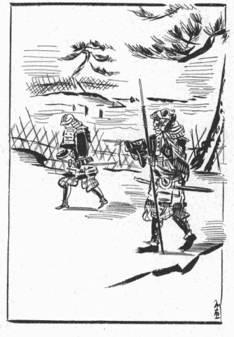
河内介は、直ぐ追いすがるには餘り間が遠過ぎたので、相手に悟られないように、見えかくれに跡を附けた。そしてその武士が
大手の
濠の
際へ来たときに、一間とは離れぬ迄に近づいて、
「待て」
と、背後から不意に浴びせた。
「おう」
と云いさま、呼ばれた武士は静かに振り向いて、二三尺あとへ
退って立った。見ると、四方白の
星兜を着けた、人品の卑しくない侍で、胴に光っている金の蒔絵は「龍」の一字が大きく書いてあるのであった。
「名のれ。―――
己は桐生武蔵守輝国の嫡子、河内介輝勝」
「いや」
と、武士は河内介の言葉を
遮るようにして云った。
「名のる迄もない」
「
卑怯な
奴、なぜ飛道具を使ったのだ」
「そんな覚えはない」
「黙れ！ たしかに見ていた、鉄炮を捨てゝ逃げたのは貴様だ」
「いや、それは人違い」
「よし！ 何処迄もしらを切れ」
云うより先に河内介の
槍の穂先が「龍」の字の方へ飛んで行った。
河内介の目算は此の怪しい武士に
深手を与え、進退の自由を奪った上で
生け
捕りにすることにあった。敵は最初、少年と見て
侮ってかゝったらしかったが、鎗の穂先が数十匹の
蝗の飛ぶように
敏捷に、寸刻の
隙間もなく迫って来るので、三四合すると早くも斬り立てられて、
下算の揺ぎ絲の上からぐさと
太股を突き刺された。河内介が更に右の二の腕へ一と突き加えて馬乗りになった時、
「無念！」
と云う声が下から聞えた。
「名のれ」
「いや、名のらぬ、首を斬れ」
「首は斬らぬ、生け捕りにしてやる」
武士は「生け捕り」と云う言葉を聞くと痛手に屈せず死物狂いに身を
藻掻いた。河内介は、誰か続く味方はないかとその
辺を見廻したけれども、眼に入るものは
夥しい土煙と、その煙の向うに
怒濤の如く寄せては崩れる集団の影ばかりであった。組み敷かれた武士はその間に傷いた手で河内介の上帯をしっかと
捉え、
左手に
小刀を抜き放って所嫌わず突きにかゝった。もはや此の場合、一人と一人では生捕りにする餘裕はない。河内介は
拠んどころなく
刃の先を相手の
咽喉にあてながら、
「望みの通りにして
遣わすぞ、名を名のれ」
と、最後にもう一度促したけれども、
「くどい！」
と云ったきり、相手は唇を固く結んで眼を閉じたまゝであった。
さるにても何者に頼まれて織部正を狙ひ候ぞと、問はまくは存じたれども、此の者の態とても白状いたすべしとも覚えず、すなはち首を刎ねて仔細にあらため候へば、歳の頃二十を二つ三つ越え候か、面立ち尋常にていかさま様子有りげなればいよ／＼いぶかしく存じ、具足下を探り候ところ錦の袋を肩より懸けて肌身につけたる態也。袋の中をあらため候へば、小さき観音の像を厨子に収めて持ち候、又その厨子を包みたる紙を見ればやさしき女文字の文なり。………
で、「道阿弥話」に拠ると、その女文字は左の如く
認めてあったと云う。
ちゝのむねんを晴らしさふらふにはおりべどのゝはなを討つべし、かならず／＼いのちにはおよぶべからず候、このことかなへてくれ候へばむにの忠義たるべきぞ、あなかしこ
天文きのえとら七月
図書どの
―――河内介は戦場の砂埃の中でその紙片をひろげたまゝ暫く
茫然と立ちつくした。して見れば、こゝに
斃れている武士は此の文の宛名にある「図書」と云う者に違いない。が、此の文の差出人、「図書」と云う武士に「おりべどのゝはなを討つ」ことを頼んだらしい女文字の主は誰であろうか。たゞ「図書どの」とあるばかりで宛名の下に何の署名もないけれども、「このことかなへてくれ候へばむにの忠義たるべきぞ」と云う言葉から推しても、宛名を小さく下の方に書いている体裁から見ても、此れは身分のある
上が我が名を秘して目下の者へ申し送ったものゝようである。もし此の文が河内介以外の者の手に渡ったとしたら、何故に此の上
が織部正の命を取らないで鼻だけ取ることを望んでいるのか、そうしてそれが又何故に「父の無念を晴らす」ことになるのか等の謎を解くのに苦しんだであろうし、正気の
沙汰とは受け取りにくかったであろうが、河内介が此の怪しい水茎のあとをじっと視つめていると、次第に彼の頭の中で此の間からの疑問の雲が晴れて行くのであった。
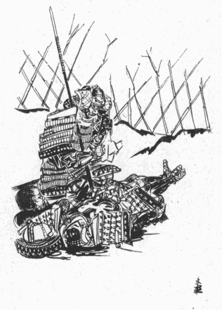
「桔梗のおん方、………」
そう思ったとき、河内介は
鎧に蒸された肌の上がぞうッと
総毛立つのを感じた。彼は先代一閑斎の時代から筑摩家に人となったのだけれども、
素より奥向きへは出入りを許されていなかったので、まだ桔梗の方の顔を見たこともなく、美人の噂は
疾くより耳にしているものゝ、その性質の善悪賢愚等については何も聞き込んだことはなかった。従って此の女文字にも一向見おぼえはないのであるが、此の
文の中で此の女が「ちゝ」と呼んでいるその人は、多分彼があのときに鼻を斬り取った薬師寺弾正のことであろう。それで始めて此の密書の示す意味が分る。餘人には分らないでも河内介には想像がつく。思うに桔梗の方は、父弾正の死顔に
肝腎なものが缺けていたのを知っている極く少数の遺族の中の一人であろう。そしてそのことを此の上もなく無念に感じ、父の
復讐として、筑摩家の大将の顔を生きながら父の死顔と同じようにさせてやりたいのであろう。彼女は最初からその意図を以て筑摩家へ
嫁いだか、嫁いだ後にその気になったか、
孰れにしても、その意図は彼女一人の心から出たもので、兄淡路守の旨を含んでいるのではあるまい。淡路守が父の横死のことをそんなに口惜しがっているなら、筑摩家と和睦する筈もなく、いかに将軍家の
執り成しがあってもその妹を織部正に
娶わせる訳がない。それに復讐の方法が、あまり陰険で男子の腹中から出たものとは考えられない。淡路守ならそんな卑怯な
真似をせずにもっと堂々たる手段に訴えるであろう。図書の屍骸から出た密書の筆蹟が女であること、そしてその意趣返しの思いつきがいかにも女らしいことから察すると、此れは桔梗の方がこっそり胸のおくに
抱いている秘策を「図書」と称する腹心の武士に授けたのである。彼女は親兄弟にも知らせずに、父の
仇を最も皮肉な
遣り方で報いようとする覚悟だと見える。
此の推定は河内介の感情を全く思いも寄らない方へ誘って行った。ありていに云うと、彼が筑摩家に仕えているのは一時の便宜からであって、
累代の主従関係ではないのだが、一閑斎の時からの養育の恩を思えば自然則重に対しても敬愛の情を抱き、彼のために忠勤を励む心は、此の時まで他の家来たちと異なる所がないのであった。されば此の時の河内介は、
図らずも一大事の密書を手に入れて則重の身にかゝる
禍を未然に防ぎ得たのを喜び、
直ちに此のことを則重に告げるべきであり、それが又その場合の義務であったに
拘わらず、彼の心はそう云う風に動かないで、実に不思議な邪路に這入った。と云うのは、こゝで彼の
胸臆に長いあいだ眠っていた女首へのあこがれが、急に
明瞭な形を取って眼ざめたのである。彼は牡鹿山の城内深きあたりに住む都そだちの上
の顔に、あの屋根裏の女の頬の薄笑いが
這い上るさまを想像した。まだ見たこともないやんごとない夫人が、ほんのりと庭のあかりを射返す
金襖の一と間に
垂れ
籠めて、
御廉のかげから外のけはいを音もなくうかゞいながら、しずかに
脇息に
靠れているであろうその冷やかな美しい目鼻立ちを
空に描いた。彼に取っては、桔梗の方の
透きとおるばかりな青白い頬が鼻を缺かれた夫則重の様子を
偲びつゝ洩らすであろうなまめかしいほゝえみは、屋根うらの女のそれよりも遥かに魅力の強いものだった。なぜなら、あの時の少女は井田駿河守と云う者の娘に過ぎないのに、これは
菊亭中納言の血を引いた、生れながらに貴い姫君である。そうして駿河守の娘の場合は、たま／＼無意識に浮かべた微笑が対照的に残忍な色を帯びたに止まるけれども、此の上
の品のよい頬にのぼるものは、深くもたくまれた、此のうえもない
冷嘲をふくむ笑いである。おもてに貞淑をよそおいながら心ひそかに復讐の快味を喫する人の、意地のわるい笑いである。河内介は、一方にそう云う恐ろしい執念を持つ夫人を考え、一方に、彼女の苦肉の
詐術に
懸って生きながら不具にされる夫則重を考え、それらの「美」と「醜」とを表わす二つの顔を並べて空想してみると、それが彼に与える物狂おしいよろこびは屋根裏の時の比ではないのであった。彼は此の前、自分が首になりつゝも知覚を失わずにいるものと仮定して、娘の
膝の前に置かれ、その手に
弄ばれることを無上の幸福であるかのように夢みたのであったが、今や自分に最も
馴染みのある一人の男子が、現実に生きたまゝの「女首」となって彼の妻からつめたい凝視を浴びせられる。―――その光景をやがて
眼のあたりに見ることが必ずしも不可能ではないのであった。
読者諸君も御承知の通り、元来我が国の史伝、―――特に武門の政治の確立した鎌倉以後のそれは、英雄豪傑の言行を記すことの甚だ懇切である割り合いに、彼等を生み、裏面にあって彼等を
操ったであろうところの婦人の個性と云うものを、全く認めていないように見える。されば桔梗の方のことも、世に伝うる「筑摩家家譜」や当時の軍記物語に散見する記事を拾い集めて、彼女の血統、婚姻及び逝去の年月、則重との間に一男一女を挙げた事実等を確かめることが出来るけれども、彼女が輝勝と心を
協せて則重を滅ぼしたことについては、
纔かに「筑摩軍記」の中に暗示的な一二行の文句があるのみで、そこにどう云ういきさつが伏在していたか、事実彼女はいかなる性質の婦人であったか、正史に
拠ってその消息を探ることは至難である。
蓋し武州公の如き
被虐性の性慾を持つ人は、やゝともすると相手の女性を
己れの注文に応ずるような型に当て
篏めて空想するから、実際に於いてその婦人は彼が語るような残忍な女子でないことが多い。現に桔梗の方が夫を不具にした事蹟なども、武州公自身が
懺悔している「道阿弥話」の記事と、妙覚尼の筆に成る「見し夜の夢」の観察とは著しく相違した点があり、或る所では別人の如き感じを受ける。前者に依れば生れつき虐を好む傾向が備わっていたように見え、後者に依れば父の耻辱をそゝぐ一念から恐ろしい望みを起したものゝ、矢張平素は上
にふさわしい
優しい心根を持っていたように見えて、此の方が真相に近いのであろうが、たゞ妙覚尼は直接此の夫人を知っていた訳ではないから、幾分遠慮して書いているようにも思える。兎にも角にも河内介は、妻が夫を自らの手で不具にしておいてそれを
眺めるのを楽しみながら
侍くと云う事柄の持つ残忍性に、先ずその奇異な性慾を呼び
醒まされたのであろう。そうして彼は此の時から熱心な夫人の崇拝者となり、此の女の隠れた味方となって、則重に対する忠誠を
弊履の如く捨てゝしまったのである。
そのゝちひそかに詮議いたし候へば、かの図書と云ひしは薬師寺が臣的場左衛門と申す者の一子にて候。母は桔梗の方の乳人にて候間乳兄弟になり候。此の者世に聞えたる鉄炮の上手なりければかねてより桔梗の方の命をふくみ、月形城謀叛の時わざと主家を浪人いたし上方より馳せ下りて横輪豊前が手に属したりと覚え候。然者先年一閑斎を狙ひ候は此の者の所為なること必定に候。かの砌此の者の首は戦場に打棄て、観音の厨子と文ばかりを人知れず懐に入れて帰陣致し候間、桔梗の方逆心のことは誰一人も悟らず候。某よしなき勇をふるひてあはれ此の者を討ち果たし、かのおん方の志を妨げ候こと一期の不覚にて候ひしかども、今より後は無二の味方を申し、内々手引きして望みを叶へまゐらせん折もあるべしと、此の時より心変りいたし候
つまり「織部正を生きながら鼻缺けにする」と云う一事に、河内介の病的な慾望と、桔梗の方の復讐心とが、期せずして満足を求めることになったのである。だからその目的の達成に最も肝要な人物であった図書を殺してしまったことは、両人のために不便を来たした訳なのだが、織部正のためには甚だ気の毒にも、間もなく滑稽な事件が起って来るのである。
天文二十四年
乙卯の春、月形城の合戦から半歳ほど過ぎた
弥生半ばのことであった。織部正則重は居城牡鹿山の奥御殿の庭で花見の宴を催し、折柄満開の桜の木かげに
幔幕を
繞らし
毛氈を敷いて、夫人や腰元どもと酒を
酌みながら和歌管絃の興に
耽っていた。宴は朝から始まって、ゆうがた、空におぼろ月のかゝる頃までつゞいたが、莚の上にところ／″＼燈火が運び込まれた時分、いたく酔った則重は座頭に
鼓を打たせて自ら
謡いながら
曲舞いを舞った。それが終りに近づいて、
花の錦の下紐は
とけてなか／＼よしなや
柳の絲の乱れごゝろ
いつ忘りよぞ
寝乱れ髪の面影
と、舞い収めようとした時であった。不意に何処からか矢が飛んで来て、則重の顔を横さまにかすり、危く彼の大事な鼻を桜の花と一緒に散らすかと見えたが、鼻より少し下の方へ来、上唇の突端を
傷けて過ぎた。
「
曲者！」
則重は六七間向うの桜の枝から黒い影が飛び降りて逃げ出したのを、確かに見たような気がしたので、血のしたゝる口を押さえて直ぐ大声に叫んだけれども、―――いや、叫ぼうとしたけれども、―――どう云う訳か発音が乱れて思うように言葉が使えないので、ひどく
慌てた。で、もう一遍、
「それ！
彼方へ逃げた！」
と怒鳴ってみたが、矢張おかしな、赤ん坊が物を云うような、ろれつの廻らない無意味な
音が出た。それは上唇の肉と
上顎部の
歯齦が裂けて、その苦痛のために唇が十分に動かせないのと、息が傷口から筒抜けに洩れてしまう結果なのだが、その時の彼は顔のまん中から血がたら／＼と流れるので、鼻をやられたのか口をやられたのか自分に判断がつかなかった。そして自分の云うことが自分にも聞き取れないと感じると、甚だしく
狼狽した。
そのあたりはめったに男子の立ち入ることを許されてない場所だったので、居合わせた女中たちが直ぐ曲者の跡を追った。そうするうちに侍共も駈けつけて、廣い庭の隅々を
隈なく捜したが、曲者はいかにして身を隠したのか、とう／＼発見されないでしまった。それは全く合点の行かない奇怪事であった。なぜかと云うのに、此の奥御殿は本丸の中央にあって、そこへ忍び込むのには、幾つもの要害を越えなければならない。成る程、そこの一廓は男子禁制の女護の島であるけれども、外廻りには要所々々に番兵が立ち、晝夜の分ちなく見張りの眼が光っているのである。仮りに、間道を知っている者がうしろの山路を伝わって本丸までは忍び寄ったとしても、奥庭へ潜入することは容易でない。城中の武士と
雖も、二重三重の関所を通らなければそこへ行かれない。それが、忍び込んだのさえ不思議であるのに、庭中何処を捜しても居ないのである。外へ逃げられる筈はないから、必ず内部にひそんでいると云う見込みの下に夜通し捜索がつゞけられ、庭はもとより殿中の部屋と云う部屋、天井、廊下、床下まで調べて廻ったけれども、すべて徒労に終ってしまった。そのために人々は一層不安に
囚われて、番兵の数を増し、夜警の巡回を頻繁にしたが、一と月過ぎ二た月過ぎても結局曲者の正体が分らず、又そのゝちは何の変事も起らなかった。
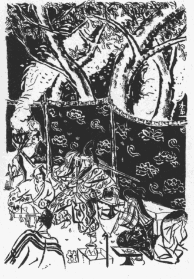
そう云う訳で、家中の武士は幸い殿のお命に別条がなかったことを喜んだものゝ、その事件以来、殿様に拝謁を仰せ付かった者は誰でも心中に気の毒な思いをした。と云うのは、その傷口が
乾上ってから始めてお目通りを許されてみると、殿様の顔が生れもつかぬ
兎唇になっていたのである。いかさま、此の程度の負傷なら深手とは云えないかも知れない。唇の線がちょっとばかり不規則になったところで日常の生活に差し支えはないし、戦場に於いて打ち物取って働くことも普通人と同じに出来る。びっこや眼っかちに比べれば生理的障害が少い訳だから、「御機嫌の
態を拝しまして恐悦至極」と一同
挨拶を述べたけれども、まともに主人の顔を正視した者は一人もなく、皆「はっ」と云ってお時儀してしまった。それに、彼等が甚だ当惑したのは、主人の言葉がとき／″＼聴き取れないことであった。傷が固まるに連れて次第にそれも直っては来たが、上唇のまん中が三角に裂けている上に前歯が二三本なくなってしまったので、或る種類の音は、ちょうど鼻のふが／＼になった人のそれのように明瞭を
缺いた。生理的障害と云えば先ず此れだけが唯一のものであったと云ってよい。
しかしそんなことは、
馴れるに従って当人も周囲も一向気に留めないようになるものである。織部正自身も、最初は確かに悲観したらしかったが、いつか家来共も自分の顔を平気で見てくれるようになったし、言葉も
巧く聞き取ってくれるので、バツの悪い感じは忘れられてしまい、
主にも家来にもそれが当り前のことに思われて来た。中には、
跛足で
眇眼でちんちくりんの山本
勘助の例を引いて、体の器官に不備な所があるのは却って威容を増すものだなどゝ云う風に上手に吹っ込む者があると、だん／＼当人も慰められて、「それもそうだ」と云う気持になるらしかった。が、冷静な、或は意地悪い者の眼から見たら、
滑稽なことを誰も滑稽に感じないでいる時が、実は最も滑稽である。河内介は家来一同がすっかり馴れっこになればなる程、則重の顔や話しごえがます／＼
可笑味を加えて来るように思われて、その三角の唇のあたりを眺めていると、どう気を取り直しても此の人のために忠義を盡す
料簡にはなれないのだった。反対に、その顔の醜悪さは桔梗の方への切なる思慕をひとしお
募らせた。彼はその人のみめかたちをせめて一と眼でも
垣間見たいと願ったが、しかし出来ることならば、単独の彼女よりも、彼女と此の
兎唇の大名とが水入らずで対坐している
閨の光景が見たくてならなかった。此の可哀そうな御面相の殿様が奇態な声を出して甘ったるい言葉をかけるとき、その殿様の恋女房である桔梗のおん方が、腹の底からこみ上げて来るおかしさを
怺え、陰険な悪意を押しかくして、にっこりと
媚をふくんでみせる、―――夜な／＼繰り返されているであろう奥御殿の密室に於けるそんな有様が、則重の前へ出る度毎に
否でも
応でも彼の
妄想に現れるのであった。どうかすると、上段の間に端坐している則重のうしろの方の、うすぐらい床の間のあたりに高貴な上
のほのじろい顔が幻のように浮き上る気がした。
河内介は、織部正の御面相を材料にそう云う妄想を享楽しながら日を送ったことであったが、それにしてもあの奥庭へ忍び込んで矢を射た者が誰であるかは、彼にも見当が付かなかった。読者はきっと河内介が臭いと推量されたであろうが、事実そうではなかったらしい。―――らしいと云うのは、前後の事情から彼に疑いをかけるのが自然であるけれども、「道阿弥話」や「見し夜の夢」には後述の如く他に下手人があったことを語っているから、先ず彼等の記載を信ずる方が穏当である。彼等は武州公の秘事についてその暗黒な方面を随分無遠慮に
発いているのだから、仮りに此の行為が公の仕業であったとしたら、公を
庇ったり曲筆したりする筈はないと考えられる。それに此の時はまだ公と桔梗の方との間に連絡がついていなかった。―――いなくても蔭でいたずらをする可能性は大いにあるが、しかし夫人との連絡なしには到底事が成就しないに極まっている。いったい公は変態的情熱に駆られると、平素と全く矛盾した人間になるけれども、元来は最も男性的な、豪壮雄偉な武将なのだ。此の時の公は恐らく内々いたずらをしてみたい衝動を感じたくらいなことで、自ら手を下してそんな卑劣な真似をする程、その病的傾向が
昂進していたとは思われない。かた／″＼此れは公の所業ではなかったに違いない。公、―――河内介は、実はあの
図書と云う武士を殺して夫人の計畫を
頓挫させたのを、甚だ残り惜しく思っていたところへ、ちょうど花見の事件が突発したのである。彼は現場に居合わせなかったので、
委しい様子は分らなかったけれども、夫人が今も尚計畫を捨てないのみか、彼女のために第二の図書の役割を勤める者がいるらしいことを、すぐに直覚したのであった。勿論その男？―――或は女？―――が、いかにして奥庭へ忍び込み、いかにして何処へ消え
失せたのか分らないが、兎に角夫人のさしがねと
庇護に
依っていることは明かである。そしてその矢が則重の唇を裂いたのは、鼻を狙ったのが誤まって下の方へ行ったものと察せられる。それなら夫人は、夫を兎唇にしたゞけで満足するであろうか。或は鼻を
抹殺してしまう迄は何回でも襲撃を行わせるであろうか。―――河内介の興味は結局そこへ落ちざるを得なかった。
すると、同じ年の六月、夏の盛りの頃であったが、或る晩則重が夫人と共に風通しのよい縁先にくつろぎながら酒を飲んでいると、突然庭前の木立ちの繁みから矢が飛んで来た。それは則重の顔に対して全く此の前と同じ角度、同じ方向から放たれたものだが、物静かな宵のことで、ひゅうッと風を切る音がしたので、アワヤと云う時則重は反射的に顔を
背けつゝ身を
反らした。もしそうしなかったら今度こそ彼の兎唇の上にある隆起物が其ッ
平らになってしまったかも知れない。しかしそれにしても、彼が身を避けるより矢の来る方が速かったので、無傷と云う訳には行きかねた。「あっ」と云って彼が上体をうしろへ引き、右から来る矢をカワすべく
頸を左へ
捻じた途端に、矢は顔の右半面をさっとかすって、そこに
凸出していた肉片の幾分と軟骨とを、―――つまり、彼の右の
耳朶を、―――
浚って行った。
直ちに腰元共が、一と組は則重を介抱し、一と組は
薙刀を持って庭へ駈け出したのは云う迄もない。花見以来既に三月も過ぎていて、あれきり何事も起らなかったし、下手人の捜索も絶望に帰して、多少油断が生じかけている折柄であったが、此の前の経験で周到な警戒網が即時に張られた。が、曲者は空を
翔ったか地にもぐり込んだか、今度も見附からずじまいであった。
則重の負傷は、生理的障害が少いと云う点で此の前と同じ、―――いや、此の前よりもなお軽かった。たゞ外見上からは、兎唇の上に右の耳朶がちぎれたのは相当の打撃だけれども、一つしかない鼻がなくなるよりは此の方がまだ仕合わせであった。尤も此れでは顔の
相似形が不均斉になった訳だから、兎唇や鼻缺けよりも一層悪いと云う議論も成り立つが、それは人々の意見に任せるとしよう。そんなことよりも牡鹿城内に於ける人心の不安と動揺とは大変であった。あの花見の時の曲者と今度の曲者とは十中八九同一の人物と認めなければならないが、あの時以来今日まで奥御殿に
潜んでいたとすると、これはどうしても内部の者の仕業である。男子禁制の区域にも、
雑色、
小者、
仲間の類は使われているから、先ずそう云う方面から身体検査や身元調べが始められて、追い／＼上の方の女中たちにまで及んだ。そして最も濃い嫌疑をかけられたのは、「お
局様」や「お部屋様」と呼ばれている側室の婦人たちであった。と云うのは、大概大名の奥向きなどでは、正室の夫人よりも
妾たちの方が
寵遇されているものだのに、織部正は思い人を妻に迎えたゞけあって、夫婦仲が非常によい。彼が二人も三人もの側室を置いているのは、半分はその頃の領主の習慣と、半分は彼自身の好色の惰勢に過ぎないので、現に正室との間には二人まで子を
儲けながら、彼女たちには一人も生ませていないのを見ても、どんなに側室の連中が
袖にされていたかゞ分る。それでも以前にはとき／″＼気紛れに彼女たちを訪れることがあったけれども、最近彼の容貌の上に不幸な災禍が見舞ってからは、夜は殆ど夫人の側に附き切りで、彼女たちに顔を見られるのを
厭う風さえあった。それやこれやで、彼女たちの中の
嫉妬深い者が
目星をつけられて厳重な
訊問を受けることになったが、そんな形跡もないことが知れて、此の方面の努力も
水泡に帰した。
そうなると人々は、捜索を断念してしまった訳ではないが、ちょっとは見込みのないものと思って、たゞ今後の事件を豫防するように、前にも
優して見張りや夜警を励行し、番所の数を増やし、近習の武士を月番で監督の任に当らせた。かくてそれから又二た月ばかり過ぎた仲秋の頃であったが、或る日、その番所詰めの役目が、此の間からそれを心待ちにしていた河内介へ運よく廻って来たのである。尤もそう云えば彼こそ秘密を
嗅ぎつけている唯一の人物であるから、彼を
措いて他に適任者はない訳だけれども、彼がその日を待ちに待ったのは、勿論陰謀の證拠を
抑えて則重に忠勤を
抽んでようと云う腹からではない。番所と云っても桔梗の方の起き
臥しゝている居室からは遥かに隔たっているので、垣間見ることは愚か、間接に連絡をつける望みも覚束ないが、しかし
餘所ながらその人を慕う身になってみれば、ちょっとでも彼女に近い所へ行って、彼女の住んでいる御殿の
甍、壁の色なりとも眼に入れたかったのである。で、首尾よくその役にありついた河内介は、そのゝち毎夜奥御殿の外囲いを
徘徊しながら見張りの配置を監督する一方に、奥の間に於ける不思議な夫婦の対照を思いやっては、例の妄想に
耽ったのであった。そして晝間でも御殿の下の日当りのよい
石崖に
倚りかゝって、晴れた秋の空を見上げながら
独りぼんやりと幻を
趁いかけたりした。戦場に出ては無双の勇士である彼も、そう云う折には定めし一箇の詩人になっていたであろう。何しろそのあたりは城の内でも一番奥まった、一番閑静な区域であって、やるせない恋情を胸に秘めている青年が、自らの空想を話相手として
無聊の時を過すのには甚だ
恰好の場所なのである。前にも述べたことがあるように、此の筑摩家の居城は牡鹿山の
天嶮を利用した山城で、城と云っても後の
安土城の如く西洋の築城術を加味したものでなく、建築は純中世式のものであり、内部の区割も地形に制せられて、規模の大きい割りに至って不規則であったから、構えの中に森や谷があったりして、小川なども流れていた。そして奥御殿のある所は独立した一つの丘になっていて、そこから
瓢箪形にもう一つの大きい丘がつゞき、その方に表御殿が建っていた。此の二つの丘をつなぐ瓢箪形のくびれた所には、表御殿から奥へかよう長い／＼渡り廊下があったが、その廊下の中程に杉戸が設けられていて、それが男女の関所であった。だから、
下駄を
穿かずに男の世界から女の世界へ行ける通路は此の廊下一つだったのである。そこで番兵どもの見張りをする区域と云うのは、つまり奥御殿の建っている丘の周囲全体で、これがなか／＼廣かったらしい。丘の
頂辺の平地のぐるりには一圓に
土塀が
繞らしてあり、それに接して直ぐに切っ立ったような急な石崖があり、石崖から下の斜面は
地山のまゝに捨てゝあって、草がぼう／＼と伸びていたり、ところ／″＼断崖絶壁があったり、
物凄い原始林が小暗く繁っていたりして、そのあたりへ行くと、人跡
稀な深山幽谷へ迷い込んだような気がするのである。
或る日の午後、河内介は例の如く石崖の下の
淋しい場所へやって来て、木の根に腰をかけながら茫然としていたが、彼の眼は自らその石崖の上に
聳え立つ土塀を
超えて、
鬱蒼と
蔽いかぶさっている奥庭の森の
梢に、その梢の間に隠見する建物の屋根に注がれた。そして、「あゝ、あの辺が御殿なのだなあ」と思うと、こんなに近くまで来ていながら、その人の忠実な家来となってどんな忘恩の仕事にでも手を貸そうと云う自分の心を訴える道のないことが、つく／″＼恨めしくもあり、又それ故に恋いしさは一層ひし／＼と迫るのだった。そのとき彼の眼は遣る瀬ないあこがれを籠めて、石崖から屋根にいたる間をいつ迄も
視詰めていたことであろうが、やがて、ふと気が付いたのは、石崖の一番下の、土に接しているあたりに、或る一箇所だけ
苔の
剥がれている部分があった。彼は最初何気なく眺めていたのだけれども、一面に苔を着けている石崖のそこだけが、考えてみれば人が引っ掻いたようになっていて、而もその
痕を胡麻化すために
周りの苔を又少しずつ

り取った形跡がある。河内介は立ち上って、最も大きく剥げている一つの石の表面を二三度コツコツと
叩いた。するとその石の向うががらんどうらしい音がするのであった。彼は他の石と叩きくらべてみていよ／＼それを確かめ得た。次には、その怪しい石を動かして又もとのように直した者があるらしく、附近の土が擦れていたり、草が
蹈みにじられていたりした。ちょうど指をさし込むのに都合のよい
隙間があるので、試みにそれを揺す振ってみると、容易にぐらつきそうもない石がずる／＼と手に着いて引き出せる。河内介はオヤと思った。引き出せるのも道理、可なりな厚味のあるべきものが、それ一つだけ他の石の半分より薄く
截ってあり、裏側に、長さ七八寸ばかりの柄のような
把手が刻んである。これは明かに、内部からその石へ手をかけて元の通りに
篏め込むために作ったもので、石を除いた穴の大きさは
辛うじて首と肩とがすれ／＼に這入れるくらいであった。河内介は、太刀を
外して先ず体だけを、
窟の胎内くゞりのようにしてずり込ませ、這入りきってしまった所ですぐに幾分か餘裕が出来たので、そこから手を伸ばして太刀を引き寄せ、把手を
掴んで石を元の位置に据えた。中は真っ暗になったけれども、よう／＼
匍匐して進める程度の坑道が大体
爪先上りに、或る所では
急勾配の石段になったりして自然に導いてくれるのであった。彼はそんな工合にしつゝ途方もなく長い間地中を
這ったように感じた。それが何間ぐらい、或いは何丁ぐらいあったか、正確な距離の測定は出来なかったが、最後にその地下道は、それと直角に交わる
縦坑の
縁へ来て行きどまりになっていた。手さぐりに岩のかけらを拾って落してみると、その縦坑は非常に深い。そして河内介は、自分が今どう云う陽所へ来たのか、その時大凡そ見当がついた。

こゝで、少しく
尾籠ながら、その頃の高貴な婦人が使う
厠の構造について述べることを許されたい。むかし吉原の或る有名な太夫は
緡銭を毛蟲と間違えたふりをして上品さを
衒ったと云うが、大名の家庭に生れた貴婦人たちは
銭を知らなかったどころではない、自分の体から
排泄する物質をさえ、一生人に見せなかったのみならず、自分でも見ないようにした。それにはどうするかと云うと、厠の下に深い縦坑が掘ってあって、彼女が死ぬと永久にその坑を埋めてしまうのである。
蓋し糞便の処置方法として此のくらい高雅な仕掛けはない。
蛾の
翅を無数に積み重ねてその上へ固形物を落し、落ちると同時にそれが翅の中へもぐり込んでしまうように造ったと云う
倪雲林の厠なぞも、
贅沢さに驚かされるけれども、掃除人夫にさえ見せないで済ます点では、到底前者の奥床しさに及ぶべくもない。かの平安朝の宮廷の美女は、色好みの
平中を魅惑するために
丁子の
実で自分の排泄物を模造した逸話があるではないか。かりそめにも上
と云われる者にはそのくらいな
嗜みがあったのである。それに比べると現代の水洗式装置などは、清潔で衛生の趣意にはかなっているけれども、誰よりも自分がまざ／＼とそれを見せられることになるので、
無躾な、人の居ない時にでも礼儀と云うものがあることを忘れた、浅ましい考案だと云わなければならない。
しかしそう云う縦坑は貴族の夫人か姫君のものに限られていたし、此の奥御殿ではまだ姫君は二歳であったから、それを使っている人は一人しかいない筈である。即ち河内介の行き着いた所は、夫人の厠の真下にあたる地中に外ならないのであった。
［＃改ページ］
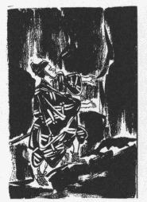
嗚呼、後年の
梟雄武蔵守輝勝、かの肖像畫に見るところの英姿
颯爽たる「武州公」が、今や桔梗の方の厠の真下にある坑道の
闇に
土龍の如くうずくまっている様子は、どんなに不調和だったであろうか。恐らくは河内介、―――武州公自身も、極めて迷惑な位置にある
己れを見出して、一寸の間
顰蹙したことであろうと察する。何となれば、彼がどれほどその人を慕っていたとは云え、こう云う失礼な間道をくゞって迄その望みを遂げることは、彼女の尊厳を傷ける道理であり、武士たる者の体面にも関する。仮りにそれらの不都合は忍ぶとしても、いかにしたらば桔梗の方を騒がせないようにして推参することが可能であろうか。彼女が驚きの叫びごえを
挙げ、又は気を失うようなことを引き起したら、折角の好機会が玉なしになってしまうのである。が、こゝに一つの想像が河内介を勇気づけてくれたと云うのは、もし此の地下道が此の間からの曲者の通路であったとすれば、こゝから人間が
躍り出ることは、桔梗の方に取ってそんなに意外な事件ではあるまい、従って又、あながちそれを無礼とも
見做すまい、少くとも、豫期せぬ男が現れたからと云って直ぐにも助けを呼ぶような軽率な真似はしないであろうと思われる。そう気が付くと、彼の好奇心と冒険心とは
俄かに強められたのであった。
河内介は彼の頭上に高貴な夫人が君臨するのを暫く待っていたけれども、あまり久しくその
坑の
縁に留まる訳に行かないので、その日は
空しく引き返したのであった。そしてそれから三日の間、ほゞ最初の日と同じ時刻に、かの石崖の下へ忍び寄って例の穴から地下道へ潜入しては、毎日一時間ぐらい根気よく縦坑の
縁に息を凝らしていた。此の、善光寺の地獄めぐりにも似た彼の辛抱強い努力が漸く報いられる機会に恵まれたのは、三日目の午後であったと云う。彼は床の上にしとやかな足音がして暗い坑道へぼんやり明りがさして来たのを知ると、先ずカタリと
微かな物音をさせて夫人の注意を
促しておいてから、
「
御台様―――」
と、出来るだけやさしく、低い声で呼んだ。
「―――申し上げることがございます、お目通りをお許し下さいませ」
その時衣ずれのおとが急に止んだので、夫人が人声のきこえて来る
黒漆塗りの
枠の縁に
彳みつゝ静かに耳を傾けている様子が推量された。河内介は
懐から
図書の密書を取り出して、
「此のお文のことにつきまして、―――」
と、それを夫人の眼に触れるように高くかざしながら、
「―――
仔細のない者でございます、
何卒お目通りを、―――」
と、重ねて云ったが、此の思いつきは案の如く効を奏した。そして、
「許しましょう、上っておいで」
と、夫人が同じように低い声で上から答えた。
地下の坑から床の上へ這い出すのには、既にたび／＼その目的に使用されていたことであるから、動作を成るべく簡単に、且手綺麗にするように適当な足だまりが作ってあったので、河内介はそう体面を汚すような醜い姿勢を示すことなく、又上
の尊厳を犯すこともなく、要領よく黒塗りの枠の下から
迫り上って夫人の前に平伏することが出来た。それはちょうど、
狐忠信が御殿の廊下から迫り出して
静御前の前に
額ずくあの
千本桜の舞台の光景と、大した相違はなかったと思って差支えない。事実、厠とは云うものゝ、
妻戸と壁とで仕切られたその部屋の中は、大輪の花のような
嵩張った衣裳を着けている上
の体を
容れるために十分なゆとりが取ってあって、茶の間程の面積に一杯に畳が敷き詰めてあるので、さすがに其処も奥御殿の座敷に附きまとう
森閑とした廣さの感じがするのである。恐れ入ったような形で畳に
額を当てたまゝ
畏まっている河内介は、そのあたりに立ちまよう
仄かな品のよい
薫き物の香に鼻を
撲たれて、ひとしお威壓されたように
首を垂れた。それは夫人の衣服に
沁みている得ならぬ
薫香の
匂であったか、又、河内介には見えなかったけれども、彼が平伏している頭の近くに小さな書院風の窓があり、その窓の前の
棚の上に青磁の
香炉が据えてあったので、そこに
沈のようなものがひそかに
燻ゆらしてあったのかも知れない。
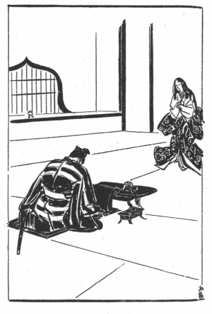
「
其方は誰です？」
「桐生武蔵守輝国の嫡男、河内介輝勝でござります。………」
彼がそう云った時に、彼の眼の前二三尺の所に
堆い
襞を盛り上げて重々しくひろがっていた
裲襠の
裾が、厚い地質の擦れ合うごわ／＼した音を立てたのは、夫人が驚きを制しながら心持身を
退ったのであった。
「河内介だとお云いか？」
「はっ」
「顔をお上げ」
そう云う夫人の言葉に恐る／＼面を上げた青年の武士は、初めて彼が
憧憬の的であった
女性の姿を仰ぎ視た。が、それでなくても身分の高い人の目鼻立ちをまじ／＼と眺めることは出来ないものだのに、まして経験のない青年が遠くから思いを寄せていた異性の前へ出たのである。それに、御殿の奥と云うものは日の目の届かない薄暗い部屋が多く、此の厠の室内もたった一つしかない窓の障子に、秋の午後の日ざしが弱い反射を投げているだけなので、その夕闇色の鈍い明りの中で探り見る夫人の容貌は、恐らく彼が脳裡に描いていた幻影と大差のない程にぼんやりしたもので、たゞその人のほのじろい顔のけはいに依って、いかに
蘭たけた上
であるかを想像で補うより外はなかったであろう。彼がはっきりと見たものは、暗い所ほど尚よく光る裲襠の金絲の縫い模様と小袖の
箔の色とであった。そして夫人が用心深く懐剣の
柄に手をかけながら立っているのを知ると、再び
慇懃に両手の上へ
面を伏せた。
「いかさま、
其方は河内介、―――」
と、夫人は半分独りごとのように云った。
蓋し河内介の方では此の時まで夫人を見たことはなかったけれども、夫人の方では彼をたび／＼見ていたのである。当時の上流の婦人たちは、外出する時は
輿に乗るか又は
被衣や蟲の垂れ衣を頭から
被り、
館に居ては常に
几帳や
簾の蔭にかくれていたから、自分の顔を家中の男たちに見られる心配はなかったが、自分の方から彼等の顔を見ることは自由であった。されば桔梗の方も、城中に於いて四季の祝宴や、
猿楽、
田楽、その他武藝や遊藝の
催し物のあった折などに、幾度か侍臣の列に連なる此の青年の頼もしそうな人品骨柄を、―――「あれこそ武勇の誉れの高い河内介でございます」とお附きの者に教えられて、
御簾の奥から
覗いていたに違いない。河内介もそれは豫期していたことだけれども、しかし夫人の今の一言は彼を此の上もない栄光に包んだ。自分と云うものが特に夫人に記憶されていたことが分ると、此の幸福な初対面の感激が一層強められるのであった。
「恐れながら、わたくし、お味方に参ったのでござります」
彼は夫人の今の言葉が言外に洩らしている疑問を受けて、何より先に彼女の信頼を得ようと
焦りながら、一生懸命な、熱情の
籠った口調でつゞけた。
「お味方、………お味方でござります。恐れながら此のお文のことを、………的場図書殿のお役を、………私に仰せつけ下さりませ」
彼が「的場図書」の名を云った途端に、
「あ」
と云う声がふるえを帯びて発せられたが、直ぐに平静を取り返した夫人は、
「その文をお見せ」
と、努めて物柔かに云って、河内介が
直訴状の如く差し出している密書を受け取ると、乏しい窓の明りの方へ向けながらそれを一と通りあらためた上で懐に入れた。
「これを何処で手に入れました？」
「去年の秋、月形城合戦の折に的場図書どのを討ちましたのはわたくしでござります。飛道具を以て殿のお命を狙う怪しき武士と存じまして、首を討ち取りましてから屍骸を調べましたところ、計らずもそのお文が守り袋の中に這入っておりました。したが、
憚りながら、当時敵味方乱軍の
最中でござりまして、わたくしの外には誰一人もそれを知っている者はござりませぬ」
「そして一体、―――」
そう云いかけたきり、夫人はとこうの分別に迷って、暫くじっと河内介を見おろしているばかりであった。敵に廻しては最も恐ろしい一人の勇士が、今や「味方にさせてくれ」と称して自分の足下に
項を垂れているのである。彼女に取って此のくらい好都合の事はないが、しかし彼女には、筑摩家の恩に
背いて何の行きがゝりもない自分のために身を投げ出そうと云う青年の、動機が合点出来ないのであった。そうかと云って、今日まで此の密書が明るみへ出されずにいたことを思えば、此の青年が自分に好意を寄せているのは疑うべくもないような気がする。人を陥れ
欺くためにはどんな苦肉の計略にでも訴える時節柄であるから、彼女にも油断はないけれども、此の若者が彼女の罪を
発くつもりなら、動かぬ證拠を手に入れながら、何としてそれを
闇々彼女に渡そうぞ。大切な密書を彼女のなすがまゝに任せて
只管恐懼しているようなのは、どう考えても
不為めを
謀る者の態度ではない。
「もし、これを御覧下さりませ。―――」
容易に夫人の警戒が
緩みそうもないのを
看て取ると、河内介は懐から小さな錦の袋を取り出して、それを二三度押し
戴きながら云った。
「―――これは観世音のお
厨子でござります。図書どのは唯今のお文を、此のお厨子に添えて肌身につけておられました。以来私は、及ばずながら図書殿の志を継ぎましたしるしに、片時も放さず所持しているのでござります」
彼が夢中でしゃべりつゞけながら、袋の口を開けて厨子を取り出そうとするのを見ると、夫人は
「これ」
と云って、此処が不浄な場所であることを思い出させるように眼でたしなめつゝ、勿体なさそうに手を振って制したが、それでも彼のしぐさが示す熱意には動かされたのであろう。
「そして一体、そちが味方をして
賜る訳は？―――」
と、七分の威厳に三分の
優しみを含めて云った。
「
御台様、
茲にもう一つ差し上げる品がござります。―――」
河内介はその問いには答えずに、再び懐を探ったかと思うと、今度も同じような
金襴の袋に包んだ小型の
壺を取り出して、それを
恭しく夫人の前に捧げた。
「―――此の袋の中にあるものは、おん父弾正政高公のおん形見。恐れながらそちらへお収め下さりませ」
「何？ 父の形見？」
夫人が我が耳を疑う如く問い返すと同時に、河内介は
「はっ」
と云って、高く
翳していた両手と一緒に
頭を低く／＼下げた。
「左様でござります。政高公御最期の
砌、お
傷わしくも
御遺骸に大切なものが缺けていらしった筈でござります」
「それが、その袋に這入っているとお云いなのかえ？」
「はっ」
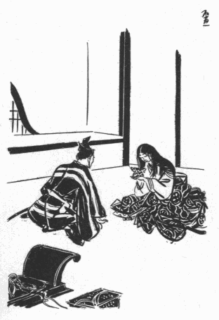
河内介の三倍もの
嵩のある衣裳を着けた夫人の立ち姿が、そのとき
牡丹の
崩れ落ちるようなゆったりとした動揺を起して、
尾の
上をわたる松風にも似た
大袈裟な
衣ずれの音を立てた。それは夫人が今の返辞を聞くと等しく、河内介が捧げている品物に
掌を合わせながら床にぺったり
膝をついてしまったのであった。
「河内介」
と、夫人はやゝ暫く
黙祷をつゞけた後に、全く今迄の威厳を捨てゝ、打って変った女らしい言葉づかいで尋ねた。
「此のお父様のお形見を、どうしてそちが持っていたのです？」
「その仔細と申しますのは、先年おん父弾正殿が此のお城をお囲みなされました折、三の丸、二の丸まで取り詰められまして、最早や落城の運命に定まりましたところ、御先代一閑斎殿、或る日人知れず忍びの者をお召しになりまして、弾正殿を
闇討ちにするようにと、内々
御沙汰を下されました。それを聞いておりましたのは私一人でござりますが、………」
「あゝ、さては推量に違わず、―――」
そう云って夫人はほっと溜め息をついた。そして俄かに
急き込みながら、
「それを
其方だけが聞いたと云うのはえ？」
と、膝を乗り出して云った。
「左様でござります。当時わたくしは十三歳でござりましたが、その日書院の間に近いお廊下を通りかゝりますと、ふと、『首を討つ
隙がなかったら、鼻でもよいから缺いて参れ』と、そう
仰しゃる御先代のひそ／＼声が耳につきました。わたくし、悪いことゝは存じながら、不思議なことを仰せられると存じまして、聞くともなく足を止めておりましたところ、『よいか、萬一の時は鼻だけでも構わぬぞ、命はあっても鼻無しにされたら、あの
洒落者は必ず陣を引いて逃げるであろう』と仰っしゃって、低い声ではっ、はっ、と、お笑いになる御様子でござりました。今日明日にもお城が落ちるか落ちぬかの
瀬戸際、背に腹は替えられぬ場合とは申せ、忍びを使って敵の大将の寝首を缺かせようとなさるのみか、鼻を斬って来いと仰せられるとは、日頃の御気象に似合わしからぬお言葉と存じましたが、御自身に於かれましても外聞を耻じていらしったのでござりましょう、御計略は首尾よく成就いたしましたなれども、忍びの者がお城へ戻って参りますと、誰にも訳を仰っしゃらずに直ぐその男を斬ってお捨てになりました。此処に持って居りまするお形見の品は、その節その男の懐に這入っていたのでござります」
今は
僅かに一二尺の距離を隔てゝ差し向いになっている河内介は、話しているうちに夫人の長い
睫毛の先に幾粒かの露の玉が結ばれて、それがはら／＼と
蝋のような頬を伝わって来るのを見た。その傷ましくも美しい人の有様を前にしつゝ、次第に彼は智慮と弁舌とを十分に働かせる落ち着きを取り返していた。彼は二三日前から肝胆を砕いて、夫人を
納得させるような
拵え事の筋書を考えぬいておいたのであったが、自分でも感心するほど、まことしやかに説明の順序を追った。
「―――わたくし、ほんのその場の廻り合わせから立ち聴き致しましたものゝ、子供心にも殿の密計を武士にあるまじきなされ方と存じまして、
憤りを感じましたが、お手討ちに
遇いました忍びの男には却って
不便を催しましたので、たしかその明くる日のことでござりました。彼の屍骸が御本丸の裏山の谷に捨てゝありましたのを、そっと見届けに参ったのでござります。そして多くの屍骸の中からよう／＼それらしいものを捜し出しまして、なんぞ證拠を持っていないかと懐を探りましたら、思いもかけず此のお形見が手に入りました。大方殿は、彼が持ち帰りました此の品を、用なきものと
思し召して屍骸と一緒にお取り捨てになったのでござりましょう。なれども私、ひとり思案をいたしまして、仮りにも敵の大将のお形見を此のように粗末にしては道に
外れる、不思議な縁で此れが自分の手に入ったのも
侍冥利であるからには、殿の御料簡はどうであろうと、自分は自分で武門の義理を立てねばならないと、ひそかにそれを戴いて帰りまして、朱肉に
漬けておきましたのでござりますが、政高公の御最期を思いますにつけ、あわれ此の品を薬師寺殿の御一族にお返し申す折もあらばと考えながら、今日まで大切にお預かり申しておりました。さ、
御台様、わたくしがこれを持っておりましたのは斯様な訳でござります」
「過分に思います、河内介、―――」
そう云うと夫人は、厠の床に惜しげもなく両手をついて、ゆたかな黒髪に
蔽われた高貴な
頭を心から青年の前に下げた。
「そちは武勇抜群の者と聞いていましたが、まだ若いのにそんな
優しい思いやりがあろうとは、―――よくまあそこに気が付いてくれました。そしたら
其方は、わたしの胸の中を推量しておくれでしょうね」
「恐れながら、お察し申し上げております」
「
弓馬の家に生れたからには、いつ肉身に死に別れても仕方のないことゝ、女ながらもそれは覚悟をしています。だからお父様が戦場で討ち死に遊ばしたのならあきらめようもありますが、まるで物取りの
仕業のような情ない目にお遇いなされ、殺されたうえに云いようのない
辱めをお受けなされては、子としてその恨みを忘れることが出来るものか、まあ考えて
賜るがよい。あの時わたしは御病死だと聞かされて、そうだとばかり思い込んでいましたけれども、お母様やお兄様が御臨終のお顔を拝ませて下さらないので、内證で
乳母にせがんだのです。乳母はわたしがあまりうるさく云うものですから、しまいに
我を折って、『ではそうっと拝ませて上げますが、実はお父様は御病気でおかくれになったのではないのですよ、お父様のお姿がどんなに変り果てゝいらしっても、びっくりなすってはいけません』と、何度も念を押してからこっそり拝ませてくれました。あゝ、ほんとうに、他人の
其方が聞いてさえ好い心持はしないのですもの、その時のわたしの
口惜しさはどれほどでしたか。乳母に連れて行かれたのは真夜中のことでしたが、お
遺骸を安置してある上段の
間の
御簾のかげには、わたしたちの外に誰も
人気はありませなんだ。私は乳母がさし出してくれる明りの下で一と眼浅ましい御様子を見ると、あまりのことに声も出ないで、乳母の胸に顔を押しあてゝ身をふるわせるばかりでした。………」
夫人はいつか河内介の
情にほだされてこま／″＼と心の中を打ち明け始めたのであった。彼女の長い告白はまだ
縷々としてつゞくのであるが、しかしそれらは二人の最初の会見の日に一度に語られたものではなく、多分そのゝち二三日の間、一定の時間を限って毎日こゝで逢うようにしながら、互に問いつ問われつして語り継がれたのであろうと思われる。「道阿弥話」の記載に依れば、此の厠は二重になっていて、廊下との間にもう一と部屋次の間のようなものがあり、且その仕切りにはいずれも厚い杉の板戸が用いられ、容易に内部の話しごえが洩れないようにしてあったと云う。そして次の間かその外の廊下のあたりに侍女が控えていたことは勿論であるが、いつも夫人の供をして厠へ附き添って行くのは、かの的場図書の妹の「はる」と云う者に
定まっていたと云う。読者は夫人の乳母なる女が図書の母親であることを記憶しておられるであろうが、夫人は筑摩家へ縁づくときに乳母とその娘の春女とを連れて来たのである。
此の物語が進行するに従って追い／＼読者も合点せられる筈だけれども、武州公の特色は、彼が奇異なる性慾に駆られていかに興奮しているように見える場合でも、常にその意識の底に自己を守る本能を働かせていたのみならず、時には己れの弱点をさえ敵を亡ぼす手段に利用したことにあって、又好運が始終彼をそう云う風に導いて行った。
蓋し
被虐性の快楽と
雖も矢張「快楽」の一種には相違ないから、もと／＼利己的性質を帯びていることは明かであるが、兎角此の
癖のある人々はつい深入りをして身を誤まる危険が多いのに、武州公は彼一流の秘密な快感を追いながら、而も着々として周囲にあるものを
蚕食し、領土をひろげて行ったのである。彼も思わず深入りをして破滅の淵の方へ誘惑されたことはあるが、必ず最後の一歩手前で
蹈み止まることを忘れなかった。彼が巧みに虚偽と真実とを織り交ぜた弁口を振って桔梗の方に取り入ったいきさつなども、此の特色を
窺うに足る一例であって、最初の会見の日に彼女に捧げたと云う「政高公の形見」なる品物も、果して薬師寺弾正の遺物であったかどうか、甚だ怪しいような気がする。なぜなら、十三歳の法師丸が弾正の鼻を拾い上げて来たことは既に述べた通りだとしても、まさかその当時に於いて今日あることを豫期していた訳ではあるまいし、それより実に六年もの間、そんな肉の切れッ端を後生大事に保存していたとは考えられないからである。依って思うに、抜け目のない河内介は、
治承の昔
文覚上人が何処の馬の骨だか分らないされこうべを「
義朝の
髑髏」と称して
右兵衛佐頼朝に示した故智に
倣い、その辺に転がっていた屍骸の鼻を缺いて来て桔梗の方の
敵愾心を
挑発する道具に使ったのであろう。骨になってしまえば馬も義朝も大した変りはないように、鼻のかけらだけでは大将とも
雑兵とも見分けはつかなかった筈である。いや、おまけにそれが朱漬けになっていたのだから、実を云うと鼻でなくとも、何かそれらしい形をした、へな／＼した断片でさえあればよかったのである。要するに彼が持って来た壺の中味は
詮議するだけ
野暮であるが、「これこそ親御さんの形見です」と云って出されゝば、頼朝程の英傑でさえつい
欺されてその手に載るのが人情である。されば況んや桔梗の方がえたいの知れない金襴の袋を見せられて、忽ち魔術にかゝったのも当然と云わなければならない。
桔梗の方の人と為りについて「道阿弥話」と「見し夜の夢」との観察に相違があることは前に語った。が、彼女が夫則重を不具にしようと企てた動機に関しては、「見し夜の夢」に記すところがいかにも自然で、機微を
穿っていると思う。それに依ると、彼女は乳母の計らいで父弾正の死顔を見せられてからは、夜な／＼その鼻のない顔が眼先にちらつき、父が彼の世でまだ死に切れずにいると云う残酷な空想がいつまでも頭にこびり着いていて、苦しみ抜いたと云う。つまり桔梗の方は、殺された父が鼻のないために極楽往生の
素懐を遂げられず、長く宙宇に迷っているような気がしたのである。此れは彼女として実に堪え難い傷心事であった。無残な横死をした父がせめて
西方浄土にでも生れることか、大事な忘れものをしたゝめに今も此の世に未練を残して浮かばれずにいるかと思うと、―――殺された上にも尚そんな目に
遭わされている気の毒な父を考えると、―――立っても居てもいられなかった。彼女は毎夜、父の亡霊が顔のまん中をおさえながら
夢枕に現れて、「鼻が欲しい、―――鼻を返してくれ」と云い続ける声を聞いた。結局彼女は、何とかして父のために鼻を捜し出してやり、あの恐ろしい死顔の記憶を脳裡から一掃してしまわないことには、一と晩も安眠が出来ないのであった。「わたしは乳母を恨みました。お母様やお兄様が折角止めていらしったのに、いくらわたしがせがんだからと云って、乳母があれを拝ませてさえくれなかったらこんな苦しみはなかったのです」と、彼女は河内介に述懐しているが、まことにその言葉の通り、当時十四歳の少女にそう云うものを見せたのは乳母の短慮と云うより外はなく、彼女のかこちごとも、
理せめて哀れであるが、見てしまった以上は仕方がないとして、さて父の鼻を捜し出すなどゝ云ったところで、それも出来ない相談であった。しかるに
偶父の霊を慰め、彼女の悩みを和げる時機が到来したと云うのは、薬師寺家と筑摩家との和睦、それについで則重と彼女との縁組が成立した一事である。
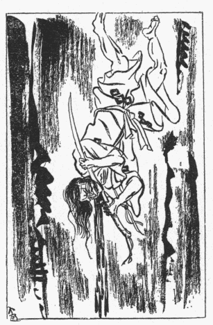
彼女の兄淡路守政秀は、此の縁組を彼女にすゝめた折に、「そなたも知っている通りお父様は御病気でおかくれになったので、何も筑摩家に
啣む
謂われはないのだから、その点は誤解のないように」と、改めて申し渡したと云う。彼女は当時の女性の位置として家長の取りきめた政策的な婚姻に不服を云い立てる権利もなく、まして将軍家のお声がゝりであるからには、家のため天下のため、身を犠牲にして
天降り式の決定に盲従するより外はなかったが、それにしても父のことをそう無念にも感じていないらしい兄を
腑甲斐なく思った。兄政秀にしてみれば、父を殺したのは何者の
仕業かはっきりしない事情もあり、
公けに知れたら父の名誉にもならないことだから、まあ出来るだけ穏便に、―――と云う腹だったのであろうが、彼女にはそう云う兄の、
間伸びのした料簡が頼りなかった。いったい政秀は父の政高に輪をかけた惰弱
悠長な性質で、その後間もなく家老馬場氏に国を
逐われ、家をも領土をも失いながら尚生き耻を
曝して諸所を
流浪した程の男なのである。で、桔梗の方は、表面何事も知らぬ体裁を装って、口にこそ出しはしなかったけれども、父の死について兄とは違った意見を持っていた。ありていに云うと、彼女はあの死顔を見せられた瞬間から、父が敵の陰険な手段にかゝって落命したと思うより外には、考えようがなかった。
苟くも父は戦争の最中に陣中で殺されたのである。而も下手人が首の代りに鼻を斬り取って行ったことは、その男が敵の廻し者であることを何より雄弁に語っているではないか。それを盗賊の所為とか個人的
怨恨の結果とか云う風に見るのは、故意に事実に眼を蔽う
卑怯者の振舞である。―――彼女はそう信じて疑わなかったが、自分を除く家中一統の人々が、母も、兄も、老臣共も、皆それほどに思っていないらしいのを見ると、父の浮かばれる時が永久に来ないような気がして、一層悲しくなるのであった。そしてどうしたらその悲しみを紛らすことが出来るであろうかといろ／＼
悶えぬいた末に、ふと考え及んだのは、今度筑摩家へ
輿入れする身になったのを幸いに、父が加えられたその同じことを一閑斎父子の上に加えたら、―――と云う案であった。
彼女は
舅の一閑斎や夫則重の顔のまん中に満足な鼻が附いているのを見るにつけても、父がひとしお可哀そうでならなかったと云っている。恐らく彼女は誰の顔の鼻を見ても腹が立ったことであろう。自分が鼻を持っていることをさえ、父に対して済まなくも感じたであろう。もし世界中の人間が一人残らず鼻なしになったら、父の不幸が始めて完全に救われるとも思ったであろう。その頃の彼女は十六歳の花嫁だったので、筑摩家を亡ぼすの何のと云う大がゝりな望みを起すには、年齢も分別も足りなかったから、極く単純な、少女らしいことしか考え付かなかった。つまり世界中の人間をそうする代りに、舅か夫を鼻なしにしてやったら、父の亡霊も幾分か恨みを忘れ、自分自身の悲しみも救われるであろうと、
一途に思い込んだのである。そう云う訳で、彼女の目標はさしあたり彼等の「鼻」にあって「生命」にはなかった。誤まって鼻と一緒に命を奪うような結果になったら、それも
已むを得ないけれども、出来ることならば、鼻なしのまゝ当分の間生かして置いて、そのみじめな存在を篤と自分の眼を以て確かめ、世人の前にも
曝し物にしてやりたかった。「道阿弥話」が彼女を
目して生れつき虐を好む婦人であったと為す
所以は、主として此処に存するのであるが、「見し夜の夢」に依ると、彼女は河内介に向って
下のように告白している。
そのとき桔梗の方おんなみだのうちに仰せけるは、世にわが身ほどうたてきものゝあるべきや、たとひ仇の子なりとも夫に持ちしうへからは憎からずおもひ侍るものを、かゝる恐ろしき復讐を企てぬるは、いかなる前世のやくそくにやあらん。さらでだに女人は罪ふかきものときくからに定めし来世は地獄にやおち侍るべき。されど神佛も照覧あれ、まことにこのことわが本意には侍らず、ひとへに父の妄執のわが胸にやどりわが耳にさゝやくまゝに思ひたちて侍りしぞかし。………
畢竟彼女は、鼻を失った舅や婿の有様をはっきりと自分の眼底に映し止め、われとわが心に
納得させなければ、―――たゞ簡単に彼等を殺してしまうだけでは、―――夜な／＼
睡りを
脅やかす無気味な夢魔を追い拂うことが出来なかったのであろう。彼女が故なく夫を不具にして楽しむような婦人でなかったことは、筑摩家滅亡の後に於ける行動を見ても明かである。「たとひ仇の子なりとも憎からず思ひ侍る」と自らも語っているように、事実彼女はその不具にした夫則重を、心
私かに愛してもいたし、
憐れみもしたらしい。要するに、彼女の生涯は父の死顔の記憶を消すという一事に終始して、そのために夫を捨て、子を捨て、我が身を捨てゝしまったかの観がある。
最初、桔梗の方の此の計畫を知っていた者は、彼女の乳母、即ち的場左衛門の妻の「
楓」という女一人であった。楓は彼女から意図を打ち明けられたとき、驚いたには違いないが、あの死顔を自分の一存で彼女に見せた責任があるところから、むげに
諫止することもならず、だん／＼同情するようになって策謀に引きずり込まれたのであろう。彼女の夫的場左衛門は桔梗の方が輿入れの当時既に病死していたので、これは全く係り合いがなかったものと思われる。そして未亡人の楓は、
嫁御寮の附き人として娘の春女と共に牡鹿山の御殿に仕えるようになり、次第に自分の子供たちを説いて仲間に加えたのであろうが、それらの詳細ないきさつは知られていない。たゞ内にあっては彼女とその娘の春、外にあっては
忰の的場図書とが互に気脈を通じ合って、桔梗の方の復讐に手を貸したことは確かである。図書は初めに一閑斎の鼻を狙い、それが失敗すると、次には月形城の合戦に織部正の鼻を狙い、
孰方も目的を達しないで河内介に討たれてしまったのであるが、かの城内の奥庭に於いて則重を
兎唇にし、ついで彼の片耳を
殺ぎ去った者は誰であったろうか？ 「道阿弥話」と「見し夜の夢」には、図書の弟に今一人「的場大助」と云う者があって、それが兄の志を継いだことが記されている。大助は母楓の計らいで、
塹壕を掘ることを専門にする
金掘りを連れて、長持の中に潜んで奥御殿へ運び入れられたと云う。が、此の金掘りと大助の行くえは明かでない。金掘りの方は、河内介が偶然見つけ出したあの坑道を掘り終えたあとで、多分
縦坑の底深く斬って捨てられ、やんごとない夫人の排泄物と共に永久に土に吸い込まれたのであろうけれども、大助は果して何処へ消えてしまったのか？ 花見の宴の事件以来警戒の眼が光っている中を、再び長持に隠れて誰にも
訝しまれずに城外へ
逃れ去ることは、到底不可能であったに違いない。それどころか、彼は第一の事件から第二の事件に至るあいだ、―――則重の唇を裂いてから更にその耳を奪うことに成功した約四箇月に亙る期間、―――特に縦坑の上部に掘らせてあった
窟のような
凹みの中に体を
屈めて這入ったきり、とき／″＼夫人や母などが与えてくれる握り飯に露命をつないで、一歩も外界へ蹈み出さないようにしていたと云われる。主のため、親のため、兄弟のために一身を犠牲にした男の例は古来少くないけれども、それにしても四箇月の間も厠の地下に籠っていたと云う大助ほど、よく忍び難い役割を堪え忍んだ者は稀であろう。読者は大助の此の行動を、耻ずべき変態性慾者や色情狂者の為すところと混同してはいけない。彼のは飽く迄も
生一本な忠義と孝行の念から発しているのである。されば此の驚くべき誠実と勇気とを持っていた青年は、恐らく自分の使命が或る程度まで
遂行され、而もそれ以上は最早や実現不可能であると
看て取った或る時期に、自ら
刃に伏してその
屍を金掘りのそれと同じ
暗黒裡に
埋め、真に文字通り
芳ばしい最期を遂げたのであろう。そして河内介が坑道を潜行した際に彼に遇わなかったところを見ると、彼が自刃したのは必ずやその以前であったに違いない。
しかし、此の大助の代りの役目を自ら買って出た河内介と云うものを、―――此の物好きな若武者の心の中を、―――桔梗の方は如何に解釈したのであろうか？ 日本の武士の間には、高貴の夫人を崇拝したり、又そのために命を捨てるのを名誉とするような西洋流の騎士道はない。されば桔梗の方が舅や夫に復讐しようと企てたのは当然であるとしても、河内介までがその味方をする謂われはない。彼が彼女の父の最期に同情を寄せ、一閑斎の武士にあるまじき卑劣な手段に義憤を感じて、鼻のかけらを大切に保存した上わざ／＼届けてくれたと云う、その
任侠と好意は受け取れる。そこまでは彼女も感謝の念を以て対し得られる。が、彼が進んで彼女の未完成な復讐に手を貸そうと云うのは、明かに任侠や好意の範囲を出過ぎた申し
出でゝある。それが河内介の胸の奥に潜む変態的慾望のさせる業であるとは、まさか桔梗の方に分る筈はないから、他に彼女を
頷かせる何等かの理由が、―――たとえば河内介の方にも別に筑摩家に恨みを含む行き掛りがあったとか、或は筑摩家の恩に
背いても彼女のために盡すべき義理合いがあるとか、何かしらそう云うことがなければならない。斯く考えて来れば、彼女があのまやかし物の「父の形見」を見せられて一時は情に
絆されたとしても、遂に全く心を許して復讐の大事を彼に
委ねるに至ったのには、尚相当の
径路があったことゝ想像される。「筑摩軍記」は桔梗の方と河内介とが「密通」したことを暗に
諷して、恋愛から陰謀が成立したように匂わせているけれども、武州公は
色仕掛で婦人の信頼を
贏ち得るような
柄でもないし、そんな色魔的手腕があったろうとも思われない。恐らく密通は事実であろうが、そのことのあったのは両人の間に筑摩家を滅亡に導く相談が進行し、次第に馴れ親しむようになってからであろう。即ち陰謀の成立の方が先で、肉体的関係はその後に結ばれたと見るべきであり、それもそう頻繁ではなかったらしく察せられる。
按ずるに桔梗の方は、河内介の「任侠過ぎる申し出で」を、筑摩家に取って代ろうとする彼の野心に基くものと解釈したのであろう。則重が凡庸の
器であるとすれば、
譜代の臣と云う訳でもない河内介がそう云う大志を
抱くのは戦国の世の英雄として有りがちのことであり、彼がその大志を遂げるためにたま／＼彼女の復讐心を利用する気になったとしても不思議はない。彼女は夫則重が乱世に処して到底その領土を保ち難いのを知っていたであろうから、むしろ河内介の野心を是認し、彼に利用されながら自分も彼を利用して復讐を成し遂げ、かた／″＼彼の温情に
縋って、せめて夫の死後に於ける二人の子女の安全を
謀った方が、結局筑摩家の血統のためにも得策であると思ったでもあろう。彼女と河内介とが何処まで相互の利害関係を打ち明けて語り合ったかは判然しないが、少くとも、彼女は彼の「味方をする」と云う意味をそう云う風に受け取り、河内介も亦胸中の秘密を押し隠して彼女の解釈するまゝに任せ、両人の間に云わず語らず一種の黙契が出来上ったのであろう。そこで桔梗の方の側から云うと、則重の鼻を
りさえすれば満足する筈であった彼女の最初の計畫が、筑摩家を
顛覆するところまで深入りしたのは河内介の野望に引き擦られた結果だと云うことになり、河内介の側から云えば、一旦則重を鼻缺けにして彼の奇態な性慾的興味が
充たされてしまうと、今度は見せかけの野望が次第にほんとうの野望にまで成長し、此の機に乗じて筑摩家を亡ぼしてやろうと云う冷静な打算と胆略とが知らず識らず働き出したことになるのである。
織部正則重は、彼の最愛の妻と家臣との間にそんな密約が結ばれたことを知るよしもないから、その後も毎夜夫人の
閨を訪れては、例に依って
兎唇の口元をもぐ／＼させながら聞き取りにくい甘ったるい私語をさゝやいていた。彼がいかにお坊っちゃん育ちの楽天的な大名であっても、唇を裂かれた上に片一方の耳を
殺がれてしまっては多少
憂鬱にならざるを得なかったと見え、「その頃より兎角病気で引き籠りがちになった」と、「筑摩軍記」は記している。が、引き籠りがちになればなる程、ます／＼彼は夫人の
傍へへばり着いた。家来共や腰元共の居る席では自分の容貌に
退け目を感じて自然不機嫌になったけれども、
蘭燈の影ほのぐらい密室に這入り、夫人のいつに変らない
艶冶な
媚笑を眼の前にすれば、忽ち彼は耳のないことも唇の三角なことも忘れてしまって、無類の幸福感に陶酔することが出来た。もと／＼彼のようなのは戦国の領主に不向きな性格なのだから、負傷をしたのを口実に領地の仕置きを家老共に任して、奥御殿に引っ込んでいられる方が結局気楽な訳であって、表面憂鬱に見えたとは云え、心の底では案外苦に病んでいなかったかも知れない。
そのうちに八月も過ぎて九月になった。例年ならば、観月の宴、菊の節句、
紅葉狩りと、次々に催しがあるのだけれども、今年はそんな次第で殿の
御気色がすぐれないものだから、表でも奥でも派手な遊びは差控えることにして、ほんの型ばかりの行事を済ませた。それでなくても牡鹿山の秋が
更けて、村しぐれをさそう風のひゞき、落葉のおとが身に沁むのに、分けても奥御殿は火の消えたようにひっそりとして、夜になると
前栽の草葉のがさ／＼と鳴るのが物凄く、とき／″＼遠くの方で鹿や狐の
啼くこえが谷間にこだまする。ぜんたい則重は、若い腰元共を集めて琴を
弾かせたり、舞を舞わせたりすることが大好きだったので、ちと気晴らしにそんな催しをすればよいのだが、近頃は夫人とさし向いでしんみり酒を酌み交すぐらいが関の山で、とんとそう云う陽気な遊びをしない。それと云うのが、一つは春の花見の宴の出来事に懲りたせいでもあるが、一つは、元来彼自身が声自慢で、何かと云うとすぐに小唄を
謡って聞かせたものだのに、残念ながら発音に故障を生じ、息がすう／＼洩れると云う現状では、折角の美音も如何ともしようがない。で、自分が
謡えないとなると、人の謡うのが
羨ましくもあり、忌ま／＼しくもなって来るので、管絃の宴を開いても一向面白くないのである。
さて九月も既に半ばに近づいた或る日のこと、ゆうがたから降り出した秋雨が夜になっても降り止まず、しと／＼／＼と、しずかに、土に
滲み入るように降りしきって、軒端をつたう
雫のおとがそゞろに人を物思いに誘うと云う晩、織部正は
宵の口から夫人の部屋に閉じ籠り、侍女のお春に酌をさせて夫婦仲むつまじく
盃の
遣り取りをしていた。いとしい人を側に置いて
蕭々たる雨の音を聞きながらチビリチビリやると云うのは、誰しも悪くないものだが、織部正もその晩は例になく酒がはずみ、大分平素よりも数を重ねて、珍しい上機嫌であった。そしてとき／″＼夫人の方へ盃を廻しては、
「どうかの、そなたも今すこし過さぬかの？―――」
と、そう云うたびに、何処かだゝッ児じみたところのある、好人物を丸出しにした眼元を細くして、はにかむようにしながら、じっと夫人の横顔へ微笑を送った。尤もその言葉を彼が発音すると、
「
ろうかの、
ほなたもいま
ふこし
ふごさぬかの？」
と云うように聞えるのだが、もうそんなことは彼自身には気にならなかった。たゞ晴れの場所で物を云うときに、以前は大名の威厳を保って堂々と云う癖があったのが、
兎唇になってから段々声の出し方が臆病になり、
恐々しゃべる習慣がついて来たので、全く安心しきっている今の場合でも、どうかすると
蚊の啼くような
微かな声になる。そう云えば夫人の顔を見る折にはにかむような様子をするのも、一つには心底彼女に
惚れ抜いているのが我ながら照れ臭いせいでもあろうが、一つには、矢張頭の隅ッこに「自分は不具者だ」と云う意識が潜んでいて、それが動作に反映するのであるかも知れない。兎に角
片羽になる前の織部正は
我武者羅な餓鬼大将のような性質で、こんなにいじけてはいなかったのである。
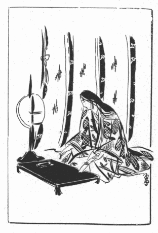
桔梗の方は受けた盃をゆっくりと飲みながら、しばらく庭前の雨のおとに耳を澄ます
風情であったが、やがて、
「あれ、あの音をお聞き遊ばせ、まだ降っているようでございますね」
と、
鬱陶しそうに
眉をひそめた。
「
ほう
らな、ま
ら降っているよう
らな、………
れも、しんみりしたよい雨
れはないか」
「ほんに、そう
仰っしゃれば秋らしい晩でございますこと。けれどわたくし、こう云う晩は淋しゅうて
滅入るような気がいたします」
「わしは、
ろう云う訳か今宵はとくべつに酒が
旨い。あの雨のおとを聞いていると、ひとり
れに気分が落ち着いて来る」
「それは結構でございます。何より御機嫌のおよろしいのが一番
嬉しゅうございます」
「
ほなた、この秋の夜のおもむきを歌に
咏ん
れ御覧。………」
と、織部正が突然
柄にもないことを云い出した。彼は近頃しょざいなさを
紛らすために妙な道楽に凝り始め、夫人に
就いて和歌を学んでいるのであった。
堂上家の娘を母に持つ都育ちの夫人が、
萬風流の道にかしこく、和歌に堪能であることは云う迄もないが、彼女の
薫陶よろしきを得たのか、織部正もどうやら
三十一文字をそれらしい形に
列ねることが出来るようになったので、何事に依らず習いたては熱中するものであるから、折さえあると、
「
ほなた、歌を咏ん
れ御覧」
と、
箸の転んだようなことにも云い出すのである。
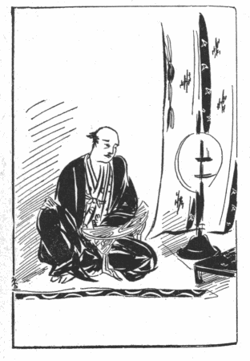
夫人は夫の言葉を聞くと、それを豫期していたものゝ如くお春に云いつけて
料紙や
硯箱を取り寄せた。そして、腰元の
磨る墨の匂がほんのりとたゞよう中に、
短冊を片手に、燈火のもとに近寄りながら、じきにすら／＼と見事な筆のあとを走らせて行った。
織部正は、正直のところ歌のよしあしはどうでもよいのだが、夫人が
短檠の
灯影のもとにうつむいて、心に浮かび出る文句を口のうちであれかこれかと
選り分けているときの、深く考え込んだ表情を見るのが楽しみなのであった。なぜなら、夫人の品のよい端麗な顔は、そう云う風に
真面目に打ち沈んでいる時が、最も美しく、
気高く感ぜられるからである。織部正はいつもその夫人の姿を、
燈火にくっきりと照らし出される彫刻的な鼻や唇の線を、惚れ／″＼とした眼つきで横の方から眺めながら、「己も随分いろ／＼な女を知っているけれど、やっぱり育ちのよい
上は格別だなあ」と、そう思っては、さも感心したような溜め息を洩らしたり、又たまらない嬉しさが込み上げて来たように、急ににや／＼笑い出したりした。取り分け今宵の桔梗の方は、その
奉書紙のような白い頬に三分の酔いを発しているのが、典型的な、やゝ
固過ぎる
面立ちに、云うに云われない
婀娜っぽさを添えているのであるが、それにしても、若し河内介がこう云う場面をそっと
隙間から
覗いたとしたら、どんな気持がしたことであろうか。天井の高い、うすら寒く廣々とした座敷の中に
屏風を囲って、四方から詰め寄せる真っ黒な夜の闇を燈心の灯で防ぎながら、その、ぽつりと一点水に油を
滴らしたような
纔かな明りの
圏の
裡に、此の三人が
朦朧とすわっているのである。夫人は黙々として紙の上に筆を動かし、侍女は静かに墨を磨り、
主は一人悦に入りながらとき／″＼盃のふちを
舐めている。そして、夫人が示す短冊を眼の前に捧げて読み下す様子だけれども、そのひそ／＼とした声音は暗い四隅に吸い込まれて、何を云うのかまるで聞えない。屏風の面には片耳のない
茶筌髪の首が大きな影を落し、それをうしろに背負っている主の顔は、光線の加減で兎唇のところが洞穴のように
凹んで見え、あたりに鬼気を発散して、桔梗の方の
妖精じみた美しさ迄が何か此の世のものでないように
凄じい。それにしん／＼と更けた深夜、戸外にはおり／＼雨がざあッと音を立てゝ降る。………そう云う室内の異様な感じは、
蓋しあの屋根裏の首装束の光景に劣らないものがあったであろう。
桔梗の方が二三首書いて差し出したあとで、今度は織部正が、頭をひねりつゝ漸く一首をまとめ上げて日頃の上達の程を示し、夫婦が互の
出来栄えを
褒め合ったりして、先ずはその夜の遊興もみやびやかに終りを告げてから、程なく二人が
臥戸へ引き取ったのは
亥の刻を過ぎていた。それから暫く織部正はいつものように夫人を愛撫したことであったが、和歌を
肴に飲んだのが思いの外
利いて来て、可なり正体がなくなっていたから、ひとしお
執拗く掻き
口説いたり、甘っ垂れたり、
有頂天になったりした。で、最後には、これもいつもの癖で、身も魂も
蕩けたようにそのまゝ睡りに落ちるのであるが、やがて
四半時も立つと、必ず一度眼をさまして小用を足しに行くのである。その晩も彼は真夜中頃にふっと起き上って、夫人の睡りを破らないように静かに次の間へ来ると、そこに控えていたお春が心得て
雪洞に明りを移し、先に立って廊下へ出た。彼の厠は夫人の厠とは別の方角にあって、長い廊下を一直線に五六間ばかり行き、左へ曲って、又もう一つ右へ曲る。その、右へ曲ってからの二三間の畳廊下が一番真っ暗で、片側が壁、片側が庭に面する障子と
間平戸になっていた。織部正は酒ともう一つの歓楽と、両方の
酔いがまださめきらぬ薄寝惚けた足取りでそこへ来たときに、
間平戸の外の縁側に雨がびしょ／＼と叩きつける音を聞いたので、
「ま
ら止まないな、よく降ること
らのう」
と、誰に云うでもなく寝言のようにつぶやいたが、
「ほんに、いやな雨でございます」
と、お春も思わず立ち止まって、
「―――お危うございます、お気をお付け遊ばして、―――」
と、そう云いながら彼の覚束ない足もとへ明りを向けた。その時彼女のうしろを
塗り潰している濃い闇の中で、一陣の風が羽ばたきのようにすうッと空を切ったけはいがして、不意に彼女が
「あっ」
と云いさま、
雪洞を床に落した。
「
られ
ら？」
その瞬間、織部正は闇の奥に黒い
塊のようなものが動いたのを、チラと見て取った気がした。人？―――怪物？―――幻覚？―――落ちた拍子に
燈火が消えて、全くの暗黒に包まれた彼は、自分の網膜に残った映像が果して実在の物の影であったか、それとも半眠
半醒の酔眼がありとしもない夢魔を描いたのか、………だがそれにしてはお春があれきり口を利かないのが変なので、
「春！
ろうしたの
ら？」
と、もう一遍闇に声を投げてみた。
「―――
ろうしたの
ら？
られかいるのか？―――」
「と、と、とのさま！………は、は、はやく、………はやく、………」
それは確かにお春の声に違いなかった。しかし何者かに口を
塞がれ、
咽喉を
絞められつゝも、懸命に抵抗しているように、今にも呼吸が詰まりそうに云うのであった。
「はやく、………はやくお逃げ………あ、あ、あそばし………」
お春の言葉はそこで途切れて、
「うむ、………」
と
呻ったかと思うと、すぐにずしんと地響きを立てゝ倒れる音がした。織部正は
咄嗟に息を殺しながらジリジリと廊下の一方へ寄って、壁へぺったり
蜘蛛のように背中を吸い着かせてみたが、そうする後から又すうッと追いすがって来た者が、いきなり彼の
頸へ
逞ましい腕を
絡みつけた。絡みつけながら恐ろしい力でぐい／＼と彼を壁へ押した。織部正は自分の体が
煎餅のように平べったく
壓搾されるのを感じつゝ、
「
曲者！」
と、何度か声を立てようとしたが、もがけばもがくほど相手の腕が頸部へ深く喰い込んで来た。彼は次第に窒息しかけ、少しずつ
痺れて行く意識の中で、「もう助からない、もう殺される」と思った。途端に曲者の
掌が自分の顔をぺろりと撫でたように覚えた。彼は直ちに
匕首が自分の
咽喉元へ突き刺さるだろうと観念していると、曲者は一方の腕で何処までも頸を
扼したまゝ、一方の手で二度も三度も顔の上を、
恰も舌で舐め廻すようにぺろり／＼と撫でるのである。そして最初に片耳の缺けていることを確かめてから、次には兎唇の上を探って、鼻の附け根から突端までを、鼻柱から鼻の孔から小鼻に至るまで綿密に触ってみるのである。織部正はだん／＼気が遠くなりながらも、甚だ奇怪千萬に感じた。此れは自分を
愚弄しているに違いないと思って、
「無礼者！ 何をするの
ら！」
と、無理にも叫んだつもりであったが、その
刹那にゴリと云う音がして、自分の鼻が顔から離れて行くのを、はっきりと意識した。なぜなら、その時曲者はわざと少しばかり頸をゆるめて呼吸を楽にしてやりながら、いやにゆっくりと、外科医がメスで
贅肉を
殺ぎ取るように、全く鼻らしいものゝ痕跡も止めぬまでに、
綺麗に根元から切り落したからである。
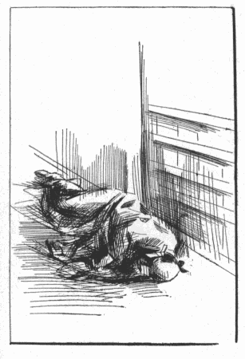
織部正がやがて正気に
復った時は、ちょうど手術の後で麻酔から
醒めたような風であった。彼は鼻を切られたことまでは確かに知っているけれども、それからどうなったのか何も記憶がないのである。多分曲者は「手術」を施してから彼に当て身を喰らわしたか、或はもう一度強く頭を絞めたのであろう。彼はそれきり人事不省に陥って、気が付いてみたら既に夫人の
閨に運ばれ、床の上に
臥かされていた。腰元のお春も彼より先に倒されていたので、その後に起った珍事件については何も知らない。彼女が息を吹き返してからの話に依ると、あの廊下で立ち止まって殿様の方へ明りを差し出した時、急に右腕が痺れて来たので、覚えず雪洞を落してしまった。そして真っ暗になったと思ったら、忽ち背後から何者かに組み着かれた。いや、組み着かれたと云うよりは、魔物のようなものが音もなく擦り寄って、出し抜けにぎゅッと五体を
呪縛した感じ、………でなかったら、巨大な熊の如き獣の胸に抱きすくめられたような工合だった。彼女は口と頭の
周りとを強く壓迫されながら
辛うじて殿様に声をかけたが、同時に
肋骨のあたりにしたゝか打撃を加えられて、そのまゝ前後不覚になった。そう云う訳で、もしもその晩桔梗の方が眼をさまして夫と侍女の居ないことに不審を起さなかったとしたら、二人はいつ迄廊下に倒れていたことか知れなかった。尤も夫人や女中共が騒ぎ出した時分には、とうに曲者は影も形も見えなくなって、たゞ織部正の面上に鮮やかな手術の
痕ばかりを留めていたのであるが、不思議なことに、曲者は逃げるに先立って、傷口に血止め薬を塗り、ぺたんこになった顔のまん中へ
膏薬まで
貼って行ってくれたのである。これは何処迄も外科医の心がけを忘れないつもりなのか、外に理由があったのか、何にしても甚だ親切な、宜しきを得た処置であった。と云うのは、そうでもして置いてくれなかったら、事に依ると気の毒な患者は出血のために死んでいないとも限らなかったからである。
此の珍事は、すでに読者も想像されたであろう通り、外ならぬ河内介の仕業であった。彼の襲撃が斯くも見事に効を奏したのは、桔梗の方の手引きに依ることは勿論であって、夫人と彼とは楓
母子を文の使いとして、例の地下道から絶えず
音信を交していた。多分母子のうちの一人が、地下道を潜って出口の石崖の隙間か何かにそっと文を挿し込んでおくと、河内介が巡視の折にそれを受取り、やがて又返書をそこへ挿し入れる。そう云う風にして連絡を保ったのであろう。されば襲撃の場所や時刻なども豫め打ち合わせが済んでいたので、河内介は人に
訝しまれることなく、短時間のうちに仕事を成し遂げて、無事に石崖の下へ戻って来ることが出来たのである。
尚、彼は則重の傷口へ膏薬を貼ってやったばかりでなく、一通の書面を懐中して行って、それを則重の顔の上へ載せて来た。
某餘儀なき仔細に仍て昨年以来御鼻を狙ひ候処今宵首尾よく本懐を達し満悦不過之候決而々々御命迄は不二申受一これより後は御心安かるべく候
こう書いてあったと云うその書面の文句を、老臣たちはどう解釈したか分らないが、これは河内介の深い用意の存するところで、一旦夫人の
委嘱を成就した彼に取っては、
速に奥御殿の警備が解かれ、たやすく夫人に接近し得る機会の来ることが望ましいので、こうして城中の不安を除こうと謀ったのであった。
が、此の親切な忠告にも
拘わらず、家中の武士は一層油断なく任務に
就くように命ぜられ、夜な／＼奥庭の木の間を照らす
篝り火の数は
殖やされる一方であった。河内介は、彼が月番に当っていた際に今度の事件が起ったのであるから、責任を問われたことは云う迄もないが、老臣共はその所罰には定めし当惑したであろう。何を云うにも、河内介の受持は御殿の外囲いであって、件の曲者は外から這入ったか、内部に潜んでいたものか、誰にも断定は出来ないのである。
緩怠と云えば家中一統の緩怠で、河内介一人が責められる
謂われはない。尤も殿が殺されたとでも云うならば、切腹は免れぬところだけれども、たか／″＼ほんの一部の肉片が切り取られたに過ぎないのである。いかに大国の領主でも、鼻と忠実な家来の命とを引き換えにするのは勿体ない。それに、則重が鼻を切られたことは出来るだけ秘密にされて、
纔かに奥御殿の数名の女中たちと老臣共が知っているばかりであったから、公然と責任者を出す訳にも行かない。まして日頃から名誉ある若武者として、又、武蔵守輝国の総領息子として、人々にその器量を恐れられている河内介であって見れば、
迂濶に処分することは尚以て慎しむべきである。ま、そんないろ／＼の利害が顧慮されて、当分
蟄居を命ぜられたゞけであったが、人なき部屋に閉じ籠っていた彼は、いかにその後の奥御殿の情景に思いを馳せつゝ
懊悩の日を送ったであろうか。彼の本来の目的は夫人のために復讐することではなくて、その復讐の成果がもたらす場面にあった。鼻缺けの夫と世にたぐいもなく美しい夫人と、此の二人を並べて見ることが彼の秘められたる望みであった。その、かね／″＼夢みていた世界が今や事実となって夫人の
閨に展開されていると云う期待は、彼のあこがれを甚だしく
募らせるのであった。
やがて、幾程もなく幽閉の期間が過ぎて、再び出仕を許されるようになったけれども、彼の懊悩は引きつゞいて止む時もなかった。以前のように自分が月番に廻されていれば、あの恋の通い路―――なつかしい石崖の下へ近寄る便宜もあるけれども、最早やその好ましい勤務が自分に
任ねられる折とてもなく、おまけに近頃は重臣の者が監督して水も洩らさぬ警衛振りを示していると云う有様であるから、文の遣り取りは愚か、風の便りにも奥御殿の消息を知る由がない。のみならず気がゝりなのは、毎日出仕するけれども織部正があれきり正体を見せないことである。聞けばあの事件があってからと云うもの、殿様はついぞ一度も家来共に対面されたことがないと云う。尤も上段の
間の
御簾のかげまでお出ましになって、とき／″＼臣下にお言葉の下ることはある。しかし
仰っしゃることが一層
微かで聴き取りにくゝなり、
声音も多少変っているので、換え玉ではないかと云う疑いを抱く者があり、自然不吉な臆測を
廻らす者も出来て来ると云う始末。そうなると河内介も、自分の手術の結果について不安を感ぜずにはいられなかった。あれだけ血止め薬を塗って、豫後の手当をして来たのだから、まさかとは思うものゝ、幹部級の五六人と側近者の二三人が真相を握っているのみで、家中一般の人々は誰も殿様の確かに生きている證拠に接しないのである。河内介は、せめて則重の無事な顔、―――いや、無事な姿を見、その顔面の損傷の程度を知り得たら、それに依って夫人の満足さ加減を推し測り、彼女の眼元に浮かべられる邪悪な微笑を妄想に描いて、幾分か
渇を
癒やすことが出来るのにと思うと、則重の鼻のない顔も夫人の顔と同じように恋い慕われて来るのであった。
此のとし、
天文二十四年は十月に改元があって
弘治元年となり、織部正の身に
厭な災難がつゞけざまに見舞った一年も過ぎて、明くれば弘治二年
丙辰の正月となったが、参賀の諸侍が初春の祝儀を述べても、
御簾のうちからお盃を下されるばかりで、はか／″＼しい挨拶のお言葉もきこえないとあっては、一向景気が改まらない。老臣共は寄り／＼
額を
鳩めて、こう殿様が引っ込んでばかりおいでになると城中の士気も衰えるし、何より忌まわしい
噂の立つのが面白くないから、一つ世直しに花やかな催しをして、ぱっと明るく騒いでみたらどうであろう、それには第一に殿様からその気になって「うるわしい尊顔」を諸士の前へ見せてくれないことには困る、なあに、
兎唇や片耳のお姿を見馴れている家来共は、今更鼻が缺けたぐらいに驚くことはなかろうから、そんなに耻ずかしがるには及ばない、弓矢取る身に大切なものは容貌よりも精神にある、顔の
造作がちっとやそっと破損していても、それで主人を
軽蔑するような不所存者は一人もありはしないであろう、と、そう云う相談をして、恐る／＼殿の意中を探って見たりするのだが、一度憂鬱症に取り
憑かれた則重は、今度の事件からます／＼
因循に、臆病になって、何と云われても人前などへ出る料簡にはなれないらしく、
強いてすゝめると、
「えゝ、うる
はい！ あ
ほびた
へれば
はってにあ
ほべ！ 己は
ろう
ひよう
ほよ
へいなお
へわ
ら！」
と、不機嫌そうにすうっと座を立ってしまうのである。
「声はすれども姿は見えず」と云うことはあるが、姿ばかりか声までがこんな工合に違って来て、人間の言葉か動物の啼きごえか分らないようになっているのだから、それで家来たちに生きている證拠を示すことは容易でない。が、「何がなお気晴らしの方法を」と、あまり老臣たちが心配するので、「それなら家中心得のある武士共を集めて歌の会を催そう」と云うことになった。尤も前々から、女中どもを相手に
内輪でそう云う催しをしていたのであったが、それを今度は、表座敷の書院の間へ侍共を招いて、やゝ盛大に開こうと云うのである。これは桔梗の方の発案であって、織部正も和歌にかけては昨今大いに
天狗になりかけている矢先ではあり、殊に夫人の
慫慂でもあるから、一も二もなくその議に同意した。老臣共も、催し物に事を缺いて和歌の競詠大会では、勝手が違い過ぎて近頃迷惑な次第だけれども、まあそんなことがきっかけで殿様の御気分が明るい方へ向ってくれゝば何よりであるからと、取り敢えず上意の趣を諸侍へ申し伝え、「心得のある者」は身分の高下を問わず出席を差許す旨を一統へ触れた。
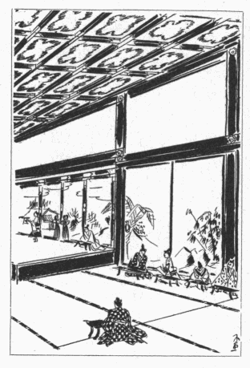
頃しも五月五日、菖蒲の節句の日を選び織部正桔梗の方と同列にて諸士を集め和歌の催し事有之、かね／″＼申触れ候ことなれば敷島の道を嗜む者共いでや秀歌をうたひ出して褒美に預からんものと存候事に候、されど牡鹿山の城中弓矢取りては耻かしからぬ武士共罷在候へ共、かゝる風流の会は何とやらん不案内にて物怯ぢやしたりけん、戦場の儀ならば功名をも争ふべけれ、和歌を以て面目を施すこと我等が本意にあらずとて、集まる者も多からず、皆々案に相違の態にて白け渡りて見え候
と「道阿弥話」は記している。当時、乱世の武将でも歌道の心得のある者が少くなかったとは云え、それは育ちのよい大名の子弟たちのことで、一般の武士は文字に暗かったから、まして風流
韻事を楽しむ者などは稀であった。そして河内介は、兎も角も牡鹿城内に於いては此の会合に出る資格のある、少数の一人だったのである。蓋し、世に伝わる武州公の和歌と云うものを見るのに、武人の作としては
略体を備えていて、相当の素養があったことを示しているけれども、それは恐らく此の歌の会などに
刺戟されて歌道の
忽がせにすべからざることを悟り、後年努めて修練を積んだ結果なので、此の話の頃は二十歳の若年であったから、格別歌が上手と云う程ではなかったであろう。しかし今も云うような訳で、周囲が無学文盲揃いであったとすると、幼時より文武両道の教育を受けた彼などは、誰よりも先に出席すべき義務があったことは明かである。されば河内介は、此の会合が夫人の発議であることを聞いて、ひょっとすると、久しく連絡を絶たれていた夫人が何等かの機会を与えてくれるのではないかと云う希望を持ちつゝ、ときめく胸を押し鎮めて招きに応じたことであろう。
織部正夫妻は、此の時も矢張上段の御簾のかげに隠れていた。そして廣間の両側に居流れた家来たちと共に、夫人から出された「
杜鵑」の題について
諷詠を競った。家来たちの多くは、今日はもしかすると殿様の正体が拝めるかも知れないと云う好奇心に釣られて来たのであったが、則重は唯御簾の奥から自分の書いた短冊を下げ渡して一同の前で朗読させ、又家来たちのものが順々に読み上げられるのを、じっと聴いているばかりであった。河内介が平安朝の
公卿であったら、「杜鵑」と云う絶好の出題を
捉えて、それとなく御簾の中なる恋いしい人に思いを訴えたであろうが、彼にはそんな器用な
真似は出来なかったから、ほんの
役塞ぎに、月並な三十一文字を並べたに過ぎない。残念なことには、此の時の則重以下の詠草が記録されていないけれども、どうせ禄な歌なんか一つもなかったに相違ない。「道阿弥話」には桔梗の方の左の一首のみが伝えられている。
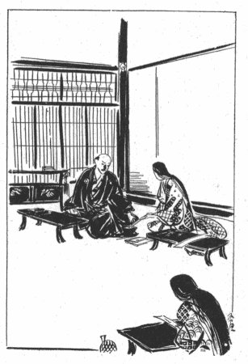
橘の香をなつかしみほとゝぎす
花散る里をたづね来よかし
此の歌は源氏物語
花散里の巻に見える光源氏の歌、―――
橘の香をなつかしみほとゝぎす
花散る里をたづねてぞ訪ふ
に基いたもので、
僅かに下の四字を置き換えたゞけである。源氏の場合は、「まづ
女御の
御方にてむかしのおんものがたりなどきこえたまふに
夜更けにけり、二十日の月さしいづるほどにいとゞ木高きかけどもこぐらうみえわたりて、近きたちばなの
薫りなつかしくにほひて、女御のおんけはひねびにたれどあくまで用意あり、あてにらうたげなり、すぐれて華やかなるおんおぼえこそなかりしか、むつまじうなつかしきかたにはおぼしたりしものをなど、おもひいで聞えたまふにつけても」とあって、光源氏が
麗景殿の女御の
許を訪れて昔語りをするところで此の歌を
詠む。女御のおん返し、
人目なく荒れたるやどは橘の
花こそ軒のつまとなりけれ
とある。しかし桔梗の方の歌はこれらの故事とは関係がない。たゞ杜鵑を河内介に擬し、「花散る里」を「鼻散る里」にかけたものに過ぎないので、源氏物語を読んではいなかった筈の河内介にも、底の心が酌み取れたことゝ思われる。
桔梗の方が河内介の情にほだされ、且その武人らしい人柄に動かされて、自分の方からも恋を感ずるようになったのはいつ頃からか分らないが、此の歌なども、単に「相談したいことがあるから会いたい」と云う意味には取りにくい。彼女は、交通を
堰かれている間に知らず識らず彼を恋い始めていたのではなかったか。そして此の歌こそはその恋愛の最初の表現ではなかったであろうか。
されど用心きびしきことなれば中々忍び寄るだに覚束なく存候ところ、程経て次第に警備弛みて候得者そのゝちは心安くかの御許へ通ひ候、然者これは去年の秋より実に一年後のこと也、かの砌それがし書残し候通り絶えて異変なかりしかば老臣共漸く疑ひを晴らしたりと覚え候
だが、疑いを晴らした老臣共も、何故に曲者が殿様の鼻を狙ったのか、その理由だけは最後まで呑み込めなかったのである。
［＃改ページ］

これより先河内介の父武蔵守輝国は、すでに老齢に達して体の
工合が思わしくなく、朝夕
薬餌に親しむようになったので、自分の息のあるうちに河内介に然るべく嫁を迎えて家督を譲ろうと思う心が切であった。それで一日も早く自分の居城
多聞山へ
忰を呼び戻したく、たび／＼そのことを
筑摩家へ願い出たのであったが、兎角国中に穏かならぬ
謡言が専らである折柄、殊に先年月形城の
謀叛以来牡鹿山の老臣共は
猜疑の念が深くなって、容易に願いを聴き届けようともしなかった。が、人質と云っても幼少の時より今日まで十四五年も城中に養われて、数度の合戦に功名を立て忠勤を
抽んでたことでもあり、父の輝国も筑摩家に対し二心を
抱く様子も見えなかったから、弘治三年の秋に及んで漸く河内介は父の館へ帰ることを許された。
此の時河内介に取っては、父の
膝下へ戻る
嬉しさもさることながら、
桔梗の
方との別離の悲しみも当分は
癒し難い
痛手であった。必要の前には直ちに本来の武士の魂に立ち返る彼ではあるが、しかし鉄石のような意志にも初恋の味は格別である。
況んやその人のためにはあらゆる背徳と忘恩の罪を犯してまで熱情を傾け盡したのに、
逢う瀬を楽しめる時が来てから幾程もなく仲を
割かれてしまうのである。思うに奥御殿の警備が
弛み、彼が自由にかの坑道を通行し得るようになったのが去年の秋頃であったとすると、そのゝち二人が逢っていた期間は
僅か一年に
充たない。それも
人目を忍びつゝ
刹那のよろこびに生きたのであって、しみ／″＼打ち解けて語り合う折などは一と夜もなかったであろう。いや、彼が恋いしたのは桔梗の方その人よりも、むしろ彼女が演じたところの特異の役割りにあったのだから、それ故になお未練を残したことであろう。事実、桔梗の方に劣らぬ美女には今後も出遇うことがあろうけれども、此の
上が置かれたような不思議な舞台、取り分け鼻のない三枚目などが引き立て役に登場する芝居は、全く彼に
誂え向きの世界であって、そう云う背景と配役に囲まれた高貴の夫人を見ることは、二度と再び豫期する訳には行かないのである。されば河内介の
畸形的情慾は夫人に離れることを惜しむと共に、これらの環境から遠ざかることを強く
厭ったに違いない。唯併しながら、二人共筑摩家の滅亡が近きにあることを期していたので、尚此の後の
手筈を示し合わせ、やがて再会の日を約しつゝ暫しの別れを告げたのであった。
池鰹鮒家の息女お
悦の
方、―――後の
松雪院は、河内介が多聞山の城に帰ってからまだ半年もたゝない
永禄元年の三月に、
桐生家に
輿入れした。時に河内介は二十二歳、松雪院は十五歳であったと云う。後年夫の浅ましい性生活を
矯めようとしてひたすら神佛に祈願をこめつゝ悲歎と孤独の月日を送るべき運命にあった此の夫人も、結婚の当初は至って朗らかな少女であった。彼女の体内には性の
眼醒めがぼんやり感ぜられていたにもせよ、彼女はまだそれを自覚していなかったし、夫も敢て自覚させようとは努めなかった。夫の頭を支配していたものは遠く牡鹿山の奥御殿に於ける情景であって、父の云い付けで
餘儀なく
娶った新妻に対しては、自分より七つ歳下の、一人の利発な、罪のない少女として傍観するより以上の気持になれなかったのである。まだしも彼は、その新妻が多く情事を解しない歳頃であるのを結句仕合わせとしたのであった。
が、
輿入れしてから一二箇月過ぎた或る夏のゆうぐれのこと、松雪院が腰元たちと縁先で涼を
納れていると、そこへ河内介がふらりと這入って来て、
「今日は何か面白いことをして遊ぼうかね」
と、例になくニコ／＼しながら云った。
「お父様の御容態はいかゞでいらっしゃいますの」
と、松雪院が尋ねると、
「いや、此の二三日たいへんおよろしいようだから、もう心配は
要らない。それより
己は、いつもそなたを放りっぱなしにして置いて済まないと思っていたのだ。今日は暇だからなんでもお相手をするよ」
そんなことを云って機嫌よくしている夫の顔を、彼女は嬉しそうに
覗き込んだ。
「何をして遊びますの」
「なんでもよい。そなたはどんな事が好きだね」
「では、
蛍狩をなさいませんこと？ お庭へ出て、―――」
彼女の愛くるしい、ぱっちりした眼の中に、あの、子供が何か素晴らしいことを思いついた時にする、はっと
跳び上るような喜色が浮かんだ。血色のよい豊かな頬が
一と
際つや／＼と輝やきを増して、物を云う調子までが全く子供のようであった。
「―――お庭には蛍がたくさんいますのよ、あの築山の向うの、
杜若が咲いているあたりに、―――」
若い夫婦は腰元どもを連れて、それからひとしきり庭で蛍を追い廻した。
「
此方よ、此方よ、みんなこっちへ来なくって？」
などゝ云う松雪院の花やかな声が、腰元共のきゃっ／＼と騒ぐこえの中に
際立って、彼方の
叢や此方の
汀へ移って行った。一国の領主の姫君としてしとやかに育った彼女ではあるが、十五と云えば手でも足でも伸び／＼と発達して、体じゅうが健康に張り切っている盛りであるから、彼女は長い
袂や
裾を邪魔にしながら、まるで小鹿のように元気よく走るのであった。腰元共も彼女のそんな様子を見ると、「奥方様」と呼ぶのが
滑稽な気がして、つい「お
姫様」と云う言葉が口元まで出そうになった。
「おい、おい、己はもう十匹捕ったぞ」
と、河内介もとき／″＼頓興な声を挙げた。
「まあ、口惜しい！ あたしはたった五匹ですのよ」
「ほら、飛んで来た、そうら、あれを
掴まえッこだ！」
そう云って河内介が駈け出すと、彼女も負けずに駈け出して、二人が一匹の蛍を争いながら池の
周りや
遣り水のほとりをぐる／＼走り廻る光景は、むつまじい新婚の夫婦と云うよりも無邪気な兄と妹が戯れているようであった。
夜になると、若夫婦は数十匹の蛍を幾つもの
籠に入れて廣間に並べ、それを
眺めながら
小酒盛りに移ったが、二人ともまだはしゃぎ足りない様子だった。河内介はいろ／＼馬鹿げた
冗談や
剽軽なことを云い出して、松雪院を
可笑しさに物が食べられないほど笑わせたりした。女中たちも、若殿の話が可笑しいよりは、彼の珍しい脱線振りが可笑しいので、彼が一と言云うたびにみんなどっと腹を
抱えた。すると河内介は、
「待ってろ、待ってろ、これからとても面白いものを見せてやるから」
と、何か
頷きながら、腰元の一人に耳打ちをした。
松雪院を始め並み居る女中共の視線は、やがてその腰元に案内をされて座敷の外の畳廊下へ恐る／＼平伏した一人の男の、畳へ
擦れ／＼に着けている坊主頭へ集まった。それは
剃刀のあとの青々とした綺麗な坊主頭であった。
「やあ、坊主、来おったな」
と、河内介が云うと、
「へい」
と、その坊主頭が小さな、哀れっぽい声を出した。
「あれは何者でございますの」
そう云ったのは松雪院であった。
「この男かい、これは道阿弥と云う坊主でな、此奴に今夜面白いことをやらせて見よう。―――」
そう云って河内介が、
「こら、坊主、
面を上げろ」
と、叱るように云うと、
「へい」
と、又同じような声を出した。
「馬鹿な
奴だな、
へいではない、面を上げろと申すのだ」
「へい」
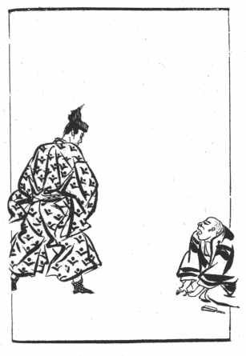
しかし今度は、その「へい」と一緒にぴょこんと道阿弥は首を上げた。
圓顔の、色の白い、小太りに太った、三十前後のお茶坊主で、くり／＼とした大きな眼をびっくりしたように見張って、へんに
生真面目に取りつくろっている表情が、もうそれだけで何処かおどけたところがあった。その様子を見て誰かゞくすッと声を
洩らすと、女中たちが方々でくす／＼笑い出した。
「これ、これ、まだ笑うには早いぞ」
と、河内介は一同を制しておいてから云うのであった。
「さあ、坊主、今夜はちょうどよい折だから、あれをやって見ろ」
「あれ、―――あれと申しますと？―――」
そして道阿弥は、犬が主人の顔色を
窺うように河内介を見上げながら、パチパチと続けざまに
眼瞬きをした。
「あはゝゝゝ、馬鹿、その方
物真似が
上手ではないか。鳥の真似、蟲の真似、獣の真似、人間の真似、―――
啼き声でも、身振でも、何でも真似る。中々その方は器用だぞ。さ、是非あれをやれ」
「あたし、あの者に口をきいてもようございますこと？」
と、松雪院が云った。
「よいから何でもきいて御覧。―――そうだ、そなたが注文を出して、何かやらせて見るとよい」
「道阿弥とやら、お前、何の真似でも出来るの」
「恐れ入りましてございます、ど、どう
仕りまして、―――」
道阿弥は又坊主あたまを畳へつけて、切ない、泣きそうな声で
呻いた。
「―――いやはや、飛んだことがお耳に入りましてございます。恐れながら、わたくしにそんな藝当は、………」
「こら、こら、偽りを申してはならん。己には何度も見せたではないか」
「殿様は罪なことを仰っしゃいます。奥方様やお女中様の前であんなことが出来ますものか」
「あはゝゝゝ、能ある
鷹は
爪を隠すと云う奴だな」
「御、御、御冗談を仰っしゃっちゃあ、………」
「やれ、やれ、是非やれ、その積りで呼び出したんだぞ」
「道阿弥、蛍の真似をして御覧」
と、松雪院がいたずらッ児のような眼を光らした。
此の道阿弥は武州公に関する貴重な記録を
遺したところの、「道阿弥話」の筆者であって、かねてから此の城中の表向きに仕え、軽口や
愛嬌を売り物にしていたのが、その夜はじめて女中方のお
伽をするために若夫人の御殿へ召されたのであった。道阿弥自身の語るところでは、
愚老若年にて多聞山城中に御奉公仕り専ら侍衆の御座敷相勤め居候ところ瑞雲院様その頃は未だ河内介と申され若殿にておはしませしが、あれは可笑しき坊主なりとて御目を掛けられ愚老も有難き事に存じ日々油断なく出精罷在候然るところに一日愚老をお呼びなされ其方誠に物真似の上手なれば今宵女中共の慰みに見物させばやと思ふなりとて奥御殿へ召連れられ、忝くも松雪院様へ御目通を許され候云々
とある。
さて道阿弥は、松雪院から至ってむずかしい注文が出たので、
「何と
仰っしゃいます？ 蛍の真似？………あの、蛍？」
と、べそを掻いて
臀込みをしながら、何の彼のと泣き言を並べて暫く皆をてこずらせたが、実はそれが
常套手段で、いつもそう云う風にぐずついている間に、人々をあっと云わせるような趣向を考え出すのであった。彼は女中たちがやかましく催促するのを待って、さも困ったと云う顔つきで立ち上ると、何処からか一本の
団扇を持って来た。そして座敷の暗い方へ行って、自分で自分の坊主あたまを団扇で追いかけるのであった。ぱたり、と、団扇が頭へあたると、ふわり、と頭が空を逃げる。逃げながら彼が眼をぱちくりやらせると、不思議な表情の働きで、いかにも蛍の火が光ったり消えたりする感じが出た。団扇を持っている方の手も、別な人間の手が蛍を追っているように見えた。しまいにその手が団扇で頭をおさえつけると、頭は
慌てゝ団扇の下から飛び出そうとする。団扇がばた／＼と頭を叩きつけながら、逃げると又すぐに
掴まえる。それが、蛍と人との迫いつ追われつする様を写して、一人の男の藝当とは思えないほど
巧いのであった。河内介の計畫はすっかり図に
中って、松雪院も女中たちも、何と云う奇妙な坊主が現れたことかと、演技の始めから終りまで、彼の一挙一動に笑い崩れた。蛍の次に又いろ／＼な意地の悪い注文が出ると、その都度べそを掻いて困った振りをするけれども、結局彼に出来ないと云うものはなかった。どんなに真似にくい鳥や、獣や、蟲の真似でも、ちょっとした或る瞬間の癖を
捉えて、声やしぐさで、兎に角人が「成る程」とうなずくまでに現わすのである。何より彼は驚くべき表情術の名人であった。ほんの
僅かな眼の使い方、
皺の寄せ方、口の
歪め方で、気分や形状や運動や色彩をまで暗示した。のみならず此の坊主は、舞台
馴れた藝人のように見物の顔色を読み、少しだれて来ると又別な手で御機嫌を取ることを心得ていた。そして、もう此のくらいと思う時分に動物の真似を切り上げると、今度は酔いどれや、薄馬鹿や、
座頭の真似をし出したので、忽ち新たな笑いの嵐がどよめき起った。
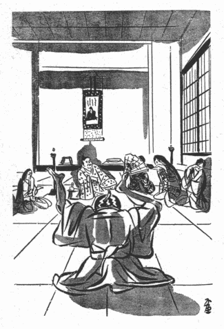
箸のころげたのさえ可笑しい歳頃の松雪院は、まだ生れてから、こんな滑稽な器用な人間を見たことがないので、
「あゝ苦しい、あゝ苦しい」
と、眼に涙をためて横腹をおさえ続けた。彼女はその晩ですっかり道阿弥が気に入ってしまって、
「あたし、今夜ほど笑ったことはありませんでしたわ」
と、餘興が終ってから、河内介に云った。
「でも、まあ、何と云う変った坊主なんでしょう、あの男がいてくれたら、一日退屈することなんかありはいたしませんわね」
「あッはッ、はッ、は、そんなに面白かったかね」
「えゝ、えゝ、とき／″＼あの坊主を呼んで下さいませんこと？」
「うん、気に入ったらそなたの側で、使っておやり。あれは奥向きの方が役に
篏まっているんだから」
そう云って、河内介も愉快そうに笑った。
そのゝち道阿弥は松雪院のお声がゝりで奥附きの方へ廻され、
座頭同様の心得を以て女中共の気散じ役や取り持ちを勤めることになったが、生来の機智と
諧謔とは日ならず彼を人気者にしてしまい、彼方でも此方でも「道阿弥々々々」と珍重がって、彼が来てからの奥御殿はいつも
賑やかな笑いごえが絶えなかった。
「道阿弥がいないと、どうも
淋しくていけないね」
と、河内介もそんなことを云いながら、それからは始終夫人の部屋へ遊びに来て、彼の道化に打ち興じては折々馬鹿騒ぎをするのであった。松雪院は今まで何となく
餘所々々しかった夫の態度が、此の
飄逸な坊主のお
蔭で確かに打ち解けて来たように感じ、ひとしお道阿弥を
贔屓にした。
すると、或る晩、河内介は夫人の部屋で酒を
酌みながら、
「どうだね、いつも道阿弥の軽口ばかりでも面白くない、今夜は己が為めになる話をしてやろうかね」
と云うのであった。
「為めになるお話？」
「うん、そなた達はこうして毎日気楽にしているが、たとえば
若し、此の多聞山の城が敵に囲まれたとしたらどうする？ そう云う時には女でも戦の手伝いをしなければならないが、その心得を話して上げようかね」
「あゝ、それはよいことでございます、是非聞かせて下さいましな」
松雪院は、いつになく真顔になった夫の様子に、
凜々しい勇士の面目を認めたような気がして、思わず
容を改めながら云った。
「女は戦場には出ないでもよい、だが、
籠城の時はそれ相応に女の仕事があるものだよ」
―――河内介はそう云って、天文十八年の秋、自分が十三歳の折に経験した牡鹿山の籠城のことから説きはじめて、
「たとえば首装束と云うものがあってね、―――」
と、次第に話をあの屋根裏の光景へ持って行った。そして、首の洗い方、髪の結い方、首札の附け方等を、
細かに説明するのであった。夫人の外に、座に
侍っていた四五人の腰元共も皆熱心に耳を傾けて、じっと河内介の口元を見守りながら聴いているうちに、河内介の方もだん／＼聴き手に釣り込まれて油が乗って来るらしかった。今夜のように、彼がじっくりと落ち着いて物語ることは稀であったが、そうして静かに述べ出して来ると、彼の弁舌には不思議に沈痛な力があり、一語々々に、厳粛な、犯し難い重みが
籠っていた。おまけに彼は、いつの間にそんな修行を積んだのであろうか、
頗る巧妙な話術を以て、その屋根裏で目撃した数々の首の種類、表情、皮膚の色、血痕、臭気に至るまでを、まざ／＼と目に浮かぶが如く言葉で描写するのであった。松雪院や腰元共は、彼の記憶の確かなことゝ、思いの外話上手であることに先ず驚かされ、次には自分たちがその場にあるような心持に引き入れられて、知らず
識らず手に汗を握り、
固唾を
呑み、体じゅうを
硬張らせつゝ異様にかゞやきを増して来る彼の
瞳の中へ吸い込まれたようになっていると、
「いや、話したゞけではそなた達には分るまいがね、………」
と、そう云いながら河内介は、しーんとした、無気味な部屋の中を、―――燈火の光のとゞかない暗い
四隅を、―――探るように見廻し始めた。その時女中共が変にぎょッとしたと云うのは、今の言葉は
正しく河内介の口から出たのだが、その
声音と調子とが急に今迄と違って来て何か特別なものが加わっていたように思えたのである。そればかりでなく、
痙攣的な、ピクピクと
顫えるような、意味の分らない微笑が彼の面上に押し出されて、顔の色が一旦
蒼白に変り、やがて見る間に、かあッと上気したように
赧くなった。
「………やっぱり何だな、首装束は実地に就いて稽古をしてみるとよく分るんだが、それにはほんとうの首がないといかんな」
「ほんとうの首？」
と、松雪院が
怯えたような声を出した。
「そなた、首を見るのが
恐いか」
「いゝえ、………でも、そんなものを何処から持って参りますの？」
「はッ、はッ、はッ、そなたも武士の妻ではないか、首と聞いて顔色を変えるようでは頼もしゅうない」
彼女は実は、首を見るのが恐いよりも、熱ッぽい、物に
憑かれたような夫の眼の方が恐いのであった。その眼と彼の口辺にたゞようニタニタ笑いとが、全く調和を缺いているように感ぜられたのであった。が、そう云われると、さすがに彼女は
屹となった。
「いゝえ、いゝえ、そんな弱蟲ではございません、首なんか恐くはありませんわ」
「きっと恐くはないのだな」
「勿論でございます」
「では、見る勇気があるのだな」
「見られるなら見せていたゞきます」
「見られるとも」
そう云って彼は、腰元共を顧みた。
「さ、お前たちも勇気を出せ。今首を持って来て教えてやるから、やり方を練習して見ろ。そのくらいなことは覚えて置かないと、いざと云う時の役に立たん」
彼の血色が再び青くなったのを見て、腰元共はウロウロするばかりであったが、
「道阿弥を呼べ」
と、云いながら彼は、
膝の前にあった
盃を一と息に
乾した。
或る夜御前へ出仕致候処、奥方も御同列にて御入ありしが、瑞雲院様愚老を側近くお呼び被成、不便なれ共某今宵汝が首を所望致すぞと仰せられ、既にお手討にも可被成御様子也、されど全く身に覚えなき事なれば大いに仰天仕、さま／″＼に歎き悲しみけれども更にお聴入なく、今は所詮逃れぬところと覚悟を極め候が、松雪院様日頃より慈悲深きおん方にていたくおんあはれみ被遊、言葉をつくして御執成被下候処、俄にから／＼とお笑ひなされ、いや／＼これは座興なるぞ、某いかで罪なき者を害せんやとて、汝はさても好運の奴かな、但し一命を助くる代りに、暫く死人の態を装ひ此の場に於て首の真似を致し候へ、さあらば殺すに及ばざることなりと被仰れば、こは又いかに成行ぞと驚き呆れ候間に、お座敷の畳を一畳ばかり取除けられ候、さてその下の床板を二尺程切取らせられ、汝床下にありて此の穴より首を出すべしと被仰候
つまり道阿弥は、その穴から顔だけ出して、いかにも首が床の上に置かれてあるような風をするのである。物真似の上手な彼であるから、これはそれほどむずかしい仕事ではないかも知れない。しかし非常に長時間のあいだ、
眉毛一つ動かさないでその表情を持ちこたえている場合を想像するがよい。道阿弥が課せられたのは実にそう云う困難な役目であった。
「よいか、ほんとうに死んだつもりでいるのだぞ。もうよいと云うまでいつ迄でもじっとしているんだぞ。もし少しでも動いたら、その時こそ手討ちに致す」
と、河内介は前以て彼に宣告を下した。そして女共に向っても、
「よいか、そなた達もほんとうに死人の首のように扱うんだぞ。決して道阿弥が生きていると思ってはならんぞ」
と、厳しく云い渡した。それから三人の女を選んで、首を洗う役と、
化粧をする役と、札を附ける役とを、それ／″＼受け持たせた。
半や、
盥や、首板や、机や、
香炉や、屋根裏の場面の再現のために必要な小道具類が揃えられると、気の毒な道阿弥は肩から以下を床下に
埋めて、
寂然たる一箇の首と化した。その死顔の表情は中々巧みなものであったが、平素のおどけた人柄を考えると、それが巧みであればある程、却って彼の迷惑さ加減が推し測られて、滑稽に見えないでもなかった。腰元共は、あのおしゃべりの、軽口屋のお茶坊主が、唯もう命が惜しいばかりに斯うして歯を食いしばっているのだと思うと、可哀そうであるよりも、何かいたずらをして
嚏でもさせてやりたいような気持になった。しかし道阿弥の此の時の苦痛は、全く本人の身にとって笑いごとではなかったのである。「自分は無念の
形相をたゝへて瞳を一点に凝らしたまゝ、
眼瞼を細目に開けてゐたが、口に
唾液がたまつても呑み込むこともならず、鼻の
孔がむづがゆくなつても、顔を
顰める訳に行かず、殊に何よりも辛かつたのは
眼瞬きの出来ないことで、こんな切ない思ひをするなら、いっそほんとに死んだ方が
優しであつた」と、さすがの彼もその手記の中で
愚痴をこぼしているのを見れば、餘程骨身にこたえたのであろう。それも、そうしているだけでなく、女中たちが、その首を練習用にして、勝手にひねくり廻すのだから、尚たまらない。が、
呑気坊主の道阿弥は、やはり何処かに人を喰ったところがあって、そんな苦しみを
甞めながら、その時の座敷の有様を出来るだけ注意して観察していた。尤も今も云うように瞳は或る一点を
睨みつめたまゝであり、
纔かに視野に這入って来るものを眼の
角に感じたゞけであるが、それでいて彼は人々の様子に気を
配り、部屋の中に起ったいろ／＼のことを、見たり聴いたりしていたのである。
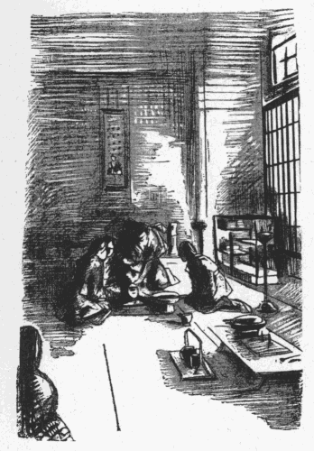
「首になった道阿弥」が最も奇異に感じたのは、瑞雲院様、―――河内介が、此の馬鹿々々しい首装束の実地講習に、何処迄も大真面目になっていることであった。女中共は、例の
櫛の
峰を以て道阿弥の頭の
頂辺をコツコツと叩く時に、彼のあまり一生懸命な死顔の真似が
可笑しくなって、つい笑いかけるのであったが、それが聞えると河内介は、
「誰だ？ 今笑った者は、―――」
と、眼の色を変えて叱りつけた。彼は厳粛な空気を保つために低音を以てひそ／＼と語り、女共にも絶対に高声を出すことを禁じた。そして、たま／＼彼の注文通りに行動しないものがあると、恐ろしく機嫌が悪かった。初め女中共は、今夜の彼の思い付きが
聊か
突飛過ぎるので、此れは殿様と道阿弥とが豫め示し合わせて、彼女たちを恐がらせようと云う悪戯かも知れないと、半ばそんな風に疑ぐっていた。事実、いかに道阿弥の表情が上手であっても、又うまい工合に床から首が出ていたとしても、現にそれが胴につながっているものを、自由に引っくり
覆したり持ち運んだりは出来ないのであるから、練習用として決して適当な
代物でない。第一道阿弥のような坊主頭では、髪の結い方の稽古にも差支える。そのくらいなら
西瓜でもちぎって来た方がまだしも簡便で、床板に穴を開ける手数だけでも省ける。それに河内介の態度が今夜に限って
仔細らしく
糞真面目なのも、何か
曰くがありそうで、
旁彼女たちには、本気か冗談か分りかねた。「首になった道阿弥」も、その点は彼女たちと同じであった。此れは事に依ると、殿様や女中たちが自分を困らせて面白がるのではないかと、彼もひそかにそう考えた。しかしとき／″＼彼の視野の中に這入って来る河内介の顔には、とてもそんな遊戯的気分は見えないのであった。道阿弥はその顔の存在を眼の何処か知らにぼんやり感じているだけで、まともに正視することが出来なかったゝめに、ひとしおそれが、ものすごい
相好を浮かべているように想像された。そして、そう云う風に想像された一つの理由は、河内介の声にあった。彼がひそ／＼と
囁くが如く物を云いながら、女中共に講義をしているその声は、熱病患者のそれのように
干涸らびて、
上ずっているばかりでなく、へんに云い方が神経質で、女性的にさえひゞくのであった。道阿弥はまだ河内介のこんなおかしな声を聞いたことがなかった。元来河内介は、太い、豪壮な、戦場できたえた武人の声を持っているのである。それが今夜は、
癇の
昂ったのを無理におさえているような、取って付けたようなふるえごえを出すのである。
だがそれはよいとして、「首になった道阿弥」はやがてひどく不安になって来た。と云うのは、首装束の講釈が次第に進行して、「女首」の説明が始まったのである。そして河内介は道阿弥の首を指しながら、「此の首は鼻があるので、実感が出ない」とか、「やはりほんとうの女首でないと、練習に不便だ」とか云うのである。聞いている道阿弥は、全くのところ気が気でなかった。どうも話の風向きが悪い、こうなって来ると、とゞのつまりは大事な顔の
造作を切られることになるかも知れない。命はやっと取り止めたが、鼻だけは助かりそうもない。と、案の
定河内介は、道阿弥の鼻のあたまを指の
股で
挟みながら、
「これ、これ、その
剃刀を持って来い」
と云うのであった。
「ついでに此の邪魔物を切り取ってしまった方がよい。そうすると、此処が平らになって、ほんとうの女首になる。―――今夜は何事も実地の通りにやるのだから。―――」
いよ／＼来たな、と、道阿弥はもう観念の
臍を固めていたが、今度は松雪院を初め女中たちが
愕然とした。而も河内介は、何となく気違いじみた、血走った眼をかゞやかして、並んでいる腰元共を、一人々々検査するように
睨め廻しているのである。
「これ、何をしている、剃刀を持って参れと云うのに。―――」
河内介の眼は、此の時お久と云う一番器量の美しい、十七八になる腰元の上に止まった。彼女はその鋭い視線を避けるように身をすぼめ、あどけない、ふっくらとした
面立ちを伏せて、早く恐ろしいものゝ通り過ぎるのを祈っているような風であったが、河内介は、彼女の肩を蔽うているつや／＼しい黒髪と、膝の上に置かれた手の、すぐれて白く細長い指の線とを見守っているうちに、再びあの痙攣のような薄笑いを口元に浮かべて、
「お久」
と呼んだ。
「お前、その剃刀を持っておいで」
「はい」
お久の返辞は聞き取れない程かすかであった。そして、彼女が
項垂れながら立ち上ると、一時静まっていた部屋の空気がしとやかな風を起して、燈火の穂がゆら／＼と道阿弥の死顔の上に影を作った。
さて河内介は、
「此処へすわれ」
と、彼女を首の前にすわらせてから、
「お前が切れ」
と云うのである。
「さ、剃刀をこう云う風に持ってな、………そうだ、………それから此の鼻を、此処から斯う真っ
平らに、きれいに切るんだ」
「は、はい、―――」
「やって御覧。これは死人の首なんだから、ちっとも恐いことはない」
「でも、あの、………どうぞ御勘弁遊ばして、………」
「いゝや、ならぬ。切れ！ 切れと申すに！」
剃刀を持ったまゝわな／＼ふるえているお久には、河内介の
叱
の声もおそろしかったが、それ以上に道阿弥の顔つきの方が
物凄かった。なぜなら、此の場になっても道阿弥は依然として瞳を一点に
据え、さっきからの表情を
微塵も
崩さずに、気味の悪い程おとなしくしているのである。彼女は、もうひょっとすると道阿弥がほんとうに死んでいるのではないかと思った。彼女は試しに彼の鼻の上を押してみたり
撫でゝみたりした。と、彼女のほっそりした指の先が、冷めたく、ぬるりと
濡れるのであった。見ると、「首になった道阿弥」の
額から
蟀谷の辺に冷汗がたら／＼流れている。そして剃刀の刃がその首の前できらりと
閃めいた瞬間に、急に死顔の顔色がすうッと青く変って行った。
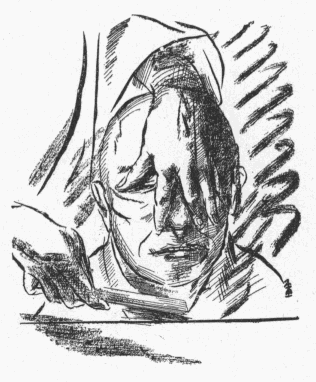
「殿様、………」
と、そのとき松雪院が声をかけた。
「………あたしからお願い致します、許してやって下さいましな」
「いや、死人の鼻を切るくらいはやさしいことだよ。血を見ることを恐れるようでは物の役に立たないから、お久にその修業をさせてやろうと思ってね」
「でも、道阿弥が可哀そうでございます。まあ、あの様子を見てやって下さいまし。あんなに一生懸命にお云い付けを守っているなんて、感心だとお思いになりませんこと？ねえ、お願いですから、あの熱心に免じて
堪忍してやって下さいまし」
「はッ、はッ、は」
不意に河内介は、はにかんだような顔をして、力のない声で笑った。
「よし、よし、そなたがそう云うなら思い止まろう」
「まあ、ほんとうに止めて下さいますの？」
「止める、止める。その代り己はよいことを考えたぞ」
又しても何を云い出すことかと、一同が不安に襲われていると、
「はッ、はッ、は」
と、河内介は一層朗らかに笑い出した。
「いや、みんな心配しないがよい。切ると云ったのは冗談なんだよ。此奴があんまり上手に真似をしているんで、おどかしてやったんだよ」
そう云って、今度は、
「こら坊主」
と、道阿弥の方を振り返った。
「貴様は全く感心な奴だぞ。よく云い付けを守っている。貴様の心がけにめでゝ、切ることは許して
遣わすが、その代り此の鼻を
紅で真っ赤に塗りつぶしてやる。はッ、はッ、はッ、は、………どうだ、坊主、有難いと思うか？ 思うなら返辞をしろ」
首はそれでも寂然として石の如く黙っていたが、
「こら！ 返辞をしろ！ 今だけ口を
利くことを許す！」
そう云われると、
「へい」
と始めて声を出した。しかしやっぱり死の表情を保ったまゝ、何処か、首でない所から声が出たように云うのであった。
「どうだ、坊主、苦しいか？」
「へい」
「苦しくっても、切られるよりは
優しであろうな？」
「へい」
「あッ、はッ、はッ、は、いや、なか／＼面白い奴だ」
間もなくお久が剃刀の代りに紅筆を取り上げて、道阿弥の鼻のあたまを真っ赤な色に塗り
潰すと、さすがに若い女どもは、つい今までの恐さを忘れて忍び笑いを
洩らし始めた。分けても松雪院は、その持ち前の花やかな声を張り上げて笑った。いつしか彼女たちは河内介の今夜の催しが、結局は人の悪い冗談であったと思い返すようにさせられ、しまいには唯道阿弥一人がみんなの
玩弄物になって、
「道阿弥さん、道阿弥さん」
と、坊主頭を叩かれたり、
「これ、お前さんは死んでいるのよ、動くと殿様に云いつけてお手討ちに遇わせて上げますよ」
と、耳や
頬ッぺたを
摘まれたりした。そして道阿弥がよう／＼その床穴から
這い上ることを許されたのは、―――「生きている道阿弥」に
復ることが出来たのは、―――皆が散々いたずらの限りをつくして部屋を引き上げてからであった。
河内介の酔興はその晩だけに止まらなかった。明くる晩になると、彼は初めから悪ふざけの気分で自分が餓鬼大将になり、松雪院や女中共をそゝのかして、道阿弥の首をいろ／＼にいじくり廻すのであったが、最後には又首の鼻を紅で染めさせて、
「今夜は一つ、此の首を
眺めながら寝ることにしよう」
と、
俄かに自分たちの寝床をその部屋へ運ばせ、夫婦で道阿弥の赤鼻を
賞翫しながら眠りについた。
これは道阿弥に取って、前の晩にも
勝る苦行であった。前の晩は宵の間の辛抱で、夜が
更けてからは自由の体になれたのに、その晩は穴から首を出したまゝ夜中床下に立ちつくした訳なのである。彼の手記に依って想像すると、その部屋は相当の
廣間であったらしく、彼が首を出していた穴は
略座敷の中央にあったように思われる。河内介は、松雪院の寝床をその穴のある所、即ち道阿弥の首の位置から畳三四畳を隔てゝ敷かせ、それから又一畳ばかり離れたあたりに自分の床を敷かせた。夏のことであるから、此の大名の若夫婦の寝床の上には、それにふさわしいうすものゝ
蚊帳が
吊ってあった。そして道阿弥の首の両側に燈火が置かれ、そのうしろに
屏風が囲ってあったので、蚊帳の中からは首のある場所が明るくはっきり見えたけれども、道阿弥の方からは、暗い所にふわ／＼している蚊帳の外側がぼんやり分ったくらいな程度で、中にいる夫婦の様子などはまるきり見えなかったであろう。
しかし道阿弥の受難はこれだけではなかった。夫婦は女中共を引き
退らせて蚊帳の中に這入ったのはよいが、
枕もとで又盃の遣り取りを始めながら、
「ねえ、殿様、ほんとうの女首って、やっぱりこんなものなんですの？」
と、先ず松雪院が尋ねた。彼女はあまり酒を
嗜みはしなかったが、それでも酔うと笑い
上戸になる方で、殊にその晩は夫にたび／＼盃を
強いられたせいか、ひどく上機嫌にはしゃいでいた。
「いや、なか／＼こんなものではないさ。ほんとうの女首だと、あの、鼻の赤いところが真っ黒に
凹んでいて、これよりずっと気味が悪いさ」
そう云われると松雪院は、すぐもうころ／＼と笑い出した。
「しかし、そなた、二人きりになって見ると、あの首でもちょっと恐くはないかね」
「あら、ちっとも恐いことなんかありませんわ」
「此の部屋に己がいなかったらどう？」
「いらっしゃらなくっても大丈夫よ。あんな、鼻の赤い首なんか、可笑しくなるばかりですわ」
「だって昨夜、己が剃刀を持って来いと云ったら、急に真っ青になったのは誰だったか知ら？」
「

、
、あんなことを仰っしゃって！」
「いや、ほんとうだよ、お久よりもそなたの方が真っ青だったぜ」
「そりゃあ、道阿弥が可哀そうだったから、お止し遊ばせと云いましたのよ。恐かったんじゃありませんわ」
「どうだかねえ」
「ひどいわ！ あたしをそんな弱蟲だと
思し召して？」
「じゃあ、あれが実際の死人の首だったら、そなた、自分で鼻を切る勇気があるか？」
「えゝ、ありますとも。お久よりはあたしの方がずっと強いわ。実はもうちっと恐い思いをさせて下すった方が、張り合いがあるんですけれど」
夫婦はこんな冗談を云い合った末に、どう云うきっかけからか、入道首の扱い方が話題になって、
「そう云えば、そなた、あゝ云うくり／＼坊主の首は、何処へ首札を附けると思う？」
と、河内介が云うのであった。
「ほんとうにね、何処へ附けたらよろしいんですの？」
「あゝ云うのは、耳へ穴を開けてね、それへ結び付けるんだよ」
「まあ、あの首の耳へ穴を開けて、………」
松雪院は又ころ／＼と笑いこけた。
「………でも、そうするより仕方がありはしませんわねえ」
「どうだい、そなた、勇気があるならやってみないか？ そのくらいなことは構やしないよ」
「何で開けますの？」
「
錐でもよいし、小刀の先でもよい。ちょいと突ッつくだけなんだよ。痛くもなんともありやしないよ」
「そうですわねえ、可哀そうだけれど、やってみようかしら」
「やって御覧、やって御覧」
「おほゝゝゝゝ」
「さあ！ 笑って胡麻化すなんて
狡いぞ」
「おほゝゝゝゝ、胡麻化していやしませんわ。あたし、あの顔つきを見れば見るほど、やってみたくなりますわ」
「なんだか、斯う、是非やって戴きますッて、そう云っているように見えるね」
「おほゝゝゝゝ、ほんとうに構いませんこと？」
「構わん、構わん」
「道阿弥、あたしたちの話が聞えて？」
そう云いながら松雪院は、蚊帳の外を
覗いた。
「ねえ、お前、今あたしたちが相談してたことが聞えた？ 許して上げるから、返辞をおし」
「へい」
と、道阿弥の首が答えた。
「ね、ちょいと突ッつくだけなんだから、我慢してね？」
「へい」
「そんなに痛くはないんですって」
「へい」
「あたしね、お前がその顔で耳から札をぶら下げてるところを考えたら、とてもたまらなくなっちまったの。………」
「へい、………御、御尤もでございます。………」
「おほゝゝゝゝ、さあ、もうお黙り」
彼女は
度を過した酒のために平素のつゝましさを取り失って、そんなことを云う言葉の調子がまるでお
侠なお転婆娘のようであった。
「殿様、さあ、見に入らしって下さいましな」
「札を
拵えなけりゃいかんよ。紙と刀を持っておいで」
「えゝ、えゝ、ちゃんと此処にありますの」
もう彼女は蚊帳の外にいて、
硯筥や
料紙入れから小刀や紙を取り出しながら、始終面白そうに笑いつゞけていた。
以下、道阿弥自ら語るところを紹介すると、次の如くである。
右の耳にいたし候へと
被仰候得者、
忝くも松雪院様雪の如き御手を以て愚老が右の
耳朶をお持ちなされ、暫く首の
態をお改め
被遊、鼻声にて低くお笑ひ
被成候、瑞雲院様傍より御覧なされ、心
臆し候
哉とお尋ねなされ候ところ、につことゑみを浮べ給ひ、何しに臆し
侍らん、されど此の死顔の
態を御覧ぜよ、定めし坊主
奴は生きたる空もなき心地にて侍らんものを、かく神妙に首の姿を真似候て何事も知らざるやうに見え候ことの可笑しさよとて、右の御手に刀子を持ち直し給ひ、そのまゝづぶとお突き遊ばされ
候得者、血少しばかり流れ出で、勿体なくも白妙の御手を汚し候、愚老はかくても
聊か動ずる気色もなく死せるが如くにて候ひしかば、さりとては辛抱強き坊主よとてお笑ひなされしかども、さすがに興ざめ給ひしにや、そのゝちは格別のこともなく、
 々
々に札をお附け
被成、急ぎ御夫婦とも蚊帳の内へ御入
被遊候、尤も夜半に及ぶまで
睦じき御物語の御様子にて、おん仲至極めでたかりし事共也
又
曰く、
それより後は絶えて首の御用を被仰出候ことなく、かの床穴をも舊の通りに被レ令二修理一候、程経て御前へ罷出候得者、松雪院様何とやらん面はゆげに愚老が耳の傷痕を見そなはせられ、かの砌は女の身として酒興に乗じ便なきことをし侍りぬ、許せよと被仰候、何共恐入候儀にて唯々難有事に奉レ存候、素より賤しき身にて候得者たとひ御手討に被成候とも何かは苦しかるべきに、一命をお助け被下し上は、かばかりの傷は物の数にても候はず、剰へ御自ら御手を下し給ひしは生々世々の面目とこそ存候へとて、しばし感涙に咽び候。その傷痕今も愚老が右の耳にあり、貴き御方の御慰みに遊ばされ候形見かと思へば、まことに此の耳我が物にして我が物にあらずと覚ゆる也
と。
嗚呼、慈愛深く、淑徳の誉れの高かった松雪院のような夫人でも、時にはこんな
過ちを犯すのであろうか。もしそのことが事実とすれば、此の夫人の三十有餘年に亙る純潔無垢な生涯に唯一の汚点を残すもので、我等は容易にそれを信じられないし、又信じたくない。
苟くも大名の北の方でありながら、酔餘の戯れに生きた人間の耳へ刀で穴を開けると云うようなことは、不用意に聞くと、全くその人の徳を傷け、美しい性格に暗影を投げる事件である。しかし読者は、此の時の夫人が十五歳の少女であったことを考えて欲しい。
加之彼女がそう云う過ちを犯す迄には、夫の思慮深い、ずっと前から計畫して段々とそこへ誘い込むようにした策略があったことを見逃してはならない。
河内介は、恐らく道阿弥と云う滑稽なお茶坊主の存在を始めて知った時から、その胸中に一つのたくらみを浮かべたのであろう。彼は先ず冷淡であった
己れの態度を一変して松雪院に
馴れ親しみ、次に道阿弥を引っ張って来て彼女や女中たちの心を得るように仕向けさせた。が、それらはすべて「首装束の稽古」と云う場面に
漕ぎ付ける手段であったかと思われる。殊に道阿弥に女首の真似をさせ、松雪院をそゝのかしてその右の耳に穴を
穿たせ、夫婦が蚊帳の中にあってそれを眺めながら
睦言を交したと云う夜の戯れこそは、彼が初めから抱いていた終極の目的だったであろう。即ち彼はそう云う風にして、牡鹿山の城を去って以来常に
妄想にばかり描いていた光景を実現したのである。云い換えれば、道阿弥を織部正則重に擬し、松雪院を桔梗の方に擬して、初恋の人と別れてからの
悶々の情を晴らしたのである。
それにしても、松雪院が一時にもせよ道阿弥を苦しめることに快味を感じ、彼女に似げないむごたらしい戯れに
耽ったのは、導くに手段を以てすればどんな婦人でも残忍を喜ぶようになる素質が、―――野獣性があることを證拠立てゝいるように思われる。しかしながら多くの女性、―――取り分け松雪院のような気高い品性の婦人にあっては、決してそのことが長続きしない。彼女が「
面はゆげに」罪を謝したと云う「道阿弥話」の記事は、いかに此の夫人が己れの悲しむべき過失を
悔悟したかを語っている。察するところ、彼女は夫の陰険な底意をはっきり
見透した訳ではないが、彼の行為に何かしら不審な点があることを感じ、直覚的に、自分にもよく突き止められない恐怖と不安を覚えたのであろう。そうしてそれは、「夜半に及ぶまで
睦じき御物語の御様子にて、おん仲至極めでたかりし事共也」とある、その夜の経験が最も重大な原因を成しているであろう。と云うのは、「見し夜の夢」の妙覚尼の説に、松雪院は遂に一度も武州公と枕を交したことがなかったとあるけれども、それは妙覚尼の臆測であって、現にその夜蚊帳の外にいたと云う道阿弥の見聞を疑う餘地はないからである。
蓋し河内介が伏戸をその部屋へ移したのは、道阿弥の首の眺めを一種の
刺戟に用いるつもりであったことは想像に難くない。が、初心の花嫁と云うものは、そうでなくとも急に男を忌まわしいものに思うことが有りがちであるのに、斯かる悪戯は果して彼女にどんな印象を与えたであろうか。酔っている間こそ夫と一緒に笑い興じたであろうけれども、一旦正気に
復った後の松雪院は、悪夢のようなその夜の記憶を恐れたに違いない。そして夫の言動の裏に測り知られぬ「薄気味の悪いもの」があるのを、おぼろげながら
嗅ぎつけたに違いない。多分河内介はその明くる晩も同じ遊びを繰り返そうとしたのであろうが、「それより後は絶えて首の御用を被仰出候ことなく、かの床穴をも舊の通りに被
レ令
二修理
一候」と道阿弥が語っているように、折角の彼の希望が一と晩で
蹉跌してしまったのは、その間に夫婦の感情の疎隔したことが
窺われる。大方、いかに河内介の享楽を求める心が切であっても、
天稟の美質を宿す松雪院の悲歎と悔恨とを眼の前にしては、再び彼女を
冒涜する勇気が出なかったのであろう。
［＃改ページ］
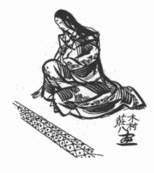
「筑摩軍記」に
曰く、「去る程に織部正則重公数年以来病気の故を以て国中の仕置を老臣共に
委せ、己は奥殿に
引籠給て専ら桔梗の方の寵愛に政務を忘れ、
翠帳紅閨の楽みに日も是れ足らぬ
態なりければ、斯くては筑摩殿の家運如何あるべきと武士は
素より城下の民に至る迄
眉をひそめ、安き心地もなきところに、永禄二年正月
俄かに
浅沼郡
檜垣御坊の宗徒共を御退治
可有由仰出され、
志太遠江守に三千餘騎の兵を附て征伐に向はせける。
抑此事の由来を尋ぬるに、
去んぬる
弘治三年の秋薬師寺家の家老馬場和泉守石山本願寺の勢を頼みて主家を横領しければ、淡路守政秀公父祖代々の領地を
被逐堺の津より中国へ
落延給ひ、その後遂に行衛だにも知れざりけり。然るに則重公の夫人桔梗の方と申せしは淡路守の御妹君におはしければ深くも此れを歎き給ひ、先年当家は将軍家の御扱ひに依て薬師寺家と縁者の
誼みを結び、良く水魚の交りを
可致由誓紙をかはし侍りしに、今度薬師寺家の滅亡を見ながら和泉守の不義不忠を其儘に
捨置、舅の仇を報いんともせざるは
寔に武門の耻辱にこそと思はれけれども、則重公近頃の容態にては中々に力
不レ及、云ふ
甲斐なき
夫を持ちけるよと心憂く
思召されける折柄、或夜夫の寝顔の上に
不レ覚はら／＼と数行の御涙を落し給ふ。則重公ふと眼覚めて
訝み給ひ、何とて泣給ぞと
有レ仰。北の方初めの程は兎角のおん
答へもなく打沈みておはせしが、度々の御尋ねに
漸く面を上げ
給而、さん
候、
妾が父祖の家は逆臣がために亡ぼされ、唯一人の兄さへ行衛も
不知なり侍りしに、今又かの和泉守のために我
夫をまで失はんとするが悲しく侍りとて、よゝと
計に泣給ふ。則重公大に驚かれ、重ねて仔細を問給へば、北の方仰せられけるは、馬場和泉守こと槍垣の門徒共を語らひ当家を傾けんとして
寄々謀を
廻す由、その證拠は此れを御覧あるべしとて、懐中より一通の密書を取出し給ふ。則重公その書を
披き見給ふに、槍垣御坊より和泉守へ差立てたる文の態にて、東西より筑摩家の領内へ攻入らんとする
相図の状に紛れもなし。さるにても何処より此の状を手に入れ候
哉と
被レ仰ば、薬師寺家の舊臣的場新三郎と申し候者、北の方の乳兄弟にてありけるが、
不レ計も件の密書を得て
御乳人の許へ注進致候由を
被レ仰。則重公
由々敷事に
被二思召一早々に老臣共を召されて此事如何あるべきと
御諚ありければ、老臣共申すやう、抑も檜垣の門徒衆は年頃
別而昵近に致し、先々代以来無二の忠義を励み候者共に候、然れば逆臣和泉守に加担して当家へ弓を引かんこと最も其
謂れなく候間、此の状
軽々に信ずべきにあらず、
旁征伐の議は篤と御思案あって
可レ然とぞ申しける。則重公聞召され、其方共わが妻の
言を疑ふやとて御気色
悪敷奥の間へ入給ひけるが、其後も北の方様々に歎き
被レ申、
仮令此状に不審ありとも一向宗の輩は和泉守に力を合せ兄淡路守を
逐ひ侍りしこと隠れもなし、されば檜垣の衆とても
必定敵にて侍るものを早や／＼
誅戮を加へて
賜べとて、夜な／＼
掻口説き給ける。然るにいかゞしたりけん、此事いつしか檜垣へ洩れ聞えければ、宗徒共意外の思ひをなし、我等年来筑摩殿に対し少しも異心を存ぜざりしところに故なく討手を向けらるゝこそ安からね、よし其儀ならば坐して滅亡を招かんよりは
此方より攻入つて武勇の程を示さんには
不レ如とて、去年の冬頃より内々人数を狩り催す云々」と。
按ずるに、牡鹿城没落の端緒が此の
一向衆との争いに発したことは正史の記す通りであろう。しかし桔梗の方をそゝのかして則重を口説き落し、遂に檜垣の宗徒等と事を構えるようにさせた黒幕が、武州公であったろうことは
略想像がつくのである。如何となれば、多聞山の城では此の少し前、永禄元年十月に武蔵守輝国が
卒去したので、河内介は父の家督を継いで武蔵守輝勝を名告り、今やその
勃々たる雄心に誰も
掣肘を加える者がなく、自由に壮図を畫することが出来る時機に達していた。彼の最初の目標は、云う迄もなく牡鹿山に住む暗愚な君主―――手を
拱いて滅亡を待っているばかりの、鼻と耳のない筑摩則重の上にあった。領土擴張慾に燃えつゝ
虎視眈々と四隣の形勢を
窺っている彼の前に、それは全く
恰好な
餌食であった。どうせ捨てゝ置けば誰かゞ手を出さずにはいないのであるから、そのくらいなら他国に先んじて一閑斎以来の城池を我が有とするのに、何の
躊躇することがあろうぞ。―――だが、武州公を動かしたものは恐らくこう云う
覇気ばかりではなかったであろう。彼の胸底には、武将としての野心の外に、そう云うものとは甚だ縁の遠い、甘い、やさしい、綿々たる恋情が
潜んでいたであろう。それには彼と松雪院との新婚生活が、二三箇月を出でないうちに早くも
破綻を来たしていたことを勘定に入れる必要がある。彼が十五歳の花嫁を自分の好きな
鋳型に養成しようとした試みは、その頃すでに失敗に帰していたのであるから、彼の心は、再び牡鹿山の恋人の方へ、前にも増した切なさを以て
惹きつけられていたと見ることが出来る。而も彼の恋情を充たすのには、牡鹿城を攻め落して筑摩家の本拠を
覆すと共に、織部正の一切の所有を、―――その夫人をも中に籠めて、―――完全に
此方へ奪い取るのに越したことはないのである。だから此処でも彼の領土慾と性慾とが都合よく一致した訳であって、英雄の心事を
妄りに
忖度することは出来ないにしても、此の場合は事に依ると、後者の方が一と際強く彼の行動を促進したのであるかも知れない。
ところで、桔梗の方が夫則重に示したと云う文書、檜垣の門徒から馬場和泉守へ宛てた
牒状なるものゝ真偽については、何処にも明記してないけれども、此の前後の事情から推して、
贋物であったことは疑うべくもないのである。蓋し前掲の引用文に見える的場新三郎は、かの的場図書、及び的場大助の弟であるに違いないから、桔梗の方と武州公とが豫め示し合わせ、此の男に偽造文書を
托して、牡鹿山と檜垣御坊との離間を策したのであろう。斯くて前記永禄二年
己未の正月、織部正の命を受けて
志太遠江守の軍勢は浅沼郡へ進発したが、檜垣の門徒等は在々所々の土民百姓共を
使嗾して至る所に
一揆を起させ、筑摩領と檜垣領との国境にある
朝出川の河原に討手を迎えて火の出るように戦ったので、筑摩方は敵に倍する人数であったにも
拘わらず、散々に討ち破られて牡鹿城へ逃げ帰った。城中よりはその後再び軍勢を差し向けたけれども、それも負け戦に終ってしまい、勝ち誇ったる檜垣衆は日増しに猛威を
逞しゅうして、領内を荒らし廻り、僅か一と月ばかりの間に方々の
子城を攻め落すと云う有様であった。初め
一向宗の者共は、自分たちの生存を
脅かされたゝめに奮起したので、元来は受け身の立ち場であったが、戦をしてみると思いの外弱い敵なので、だん／＼図に乗って来たのであった。これは彼等が
侮り難い武備と実力とを持っていたからではあるけれども、一つには筑摩家の方に最早や昔日の権勢がなく、国中の政治が乱れ、侍共の士気が衰えていた證拠で、一閑斎の時代であったら、門徒の坊主共が暴れ出したぐらいで、こんな騒ぎになりはしなかったであろう。牡鹿山の老臣共は、此の形勢を見て今更のように
狼狽した。一刻も早く坊主共を退治しなければ、やがて領内は
蜂の巣を突ッついたようになる。彼等の勢いが
猖獗を極めるに従って、先年
謀叛を企てたことのある月形城の横輪豊前守は、既に彼等と気脈を通じて動き出そうとする様子が顕然としているし、そのうちには馬場氏も取りかけて来るであろう。で、これはどうしても徹底的に討伐しなければならないと云うので、老臣中の筆頭である筑摩
将監春久に一萬数千の大兵を授けて、浅沼、
栗生、
椎原の三郡に群がる
一揆共を蹴散らしつゝ、三方から彼等の根拠地を攻めにかゝった。檜垣衆の方は、もうその頃は次第に兵力が増大していたけれども、筑摩方に比べれば三分の一の小勢であったから、そうなると
流石にじり／＼と追い詰められて浅沼郡の要害へ引き退き、塁を高くし、濠を深くして、防ぎ戦うより外はなかった。此の持久戦が三月から四月に亙り、一箇月半程つゞいたが、檜垣衆は五月になって、多聞山の城主武州公の許へ公然と加勢を求めて来たのである。
いったい檜垣衆の立て籠る浅沼郡は、筑摩家の本領と武州公の本領の中間に介在していて、筑摩家の方は西、武州家の方は東にあった。それで最初、筑摩将監が発向する時、多聞山へ使者を立てゝ敵の背後を
衝くようにと云う命令を伝えたのであったが、武州公はそれを
体よく断ってしまった。公の申し状は、「
某の家は父輝国以来筑摩殿の恩顧を蒙つてゐるから、唯今の場合粉骨を盡すのが本意だけれども、難儀なことには、曾祖父の代から一向宗に
帰依してゐるので、分けて檜垣の衆とは特別な間柄になつてゐる。されば筑摩家とは父子二代の縁故、一向宗とは曾祖父より四代の縁故があるので、
強ひて
孰方かへ味方をせよと云はれゝば、
寧ろ檜垣へ附かねばならない。併しながらそれは
素より某の好む所でないから、
何卒両方へ義理が済むやうに局外に立たせて戴きたい」と云うのであったが、恐らくそんなことは口実に過ぎなかったであろう。牡鹿山では密書の件があるものだから頻りに馬場氏の方を気にして、檜垣の騒動も和泉守が
操っているように疑っていたけれども、馬場氏は何等此の叛乱に関係したような形跡がないので、その実怪しいのは武州公であった。公の局外中立と云うのは甚だ
眉唾物であって、蔭で檜垣衆の尻押しをしていたらしいことは、大体間違いがないのである。公は檜垣衆から加勢を申し込まれても、最初の一二回は、矢張板挟みの
苦衷を訴えて
婉曲に拒否する風を装ったが、その後も頻々と求援の使者が来るに及び、遂に仮面をかなぐり捨てゝ、決然として一向宗徒に加担する態度を明かにした。「自分は今日まで一閑斎の恩義に感じて檜垣衆の乞いを
斥けて来たけれども、しかし昨今の筑摩家の無為無能には
愛憎が盡きた。
僅か数千の敵を討つのに三四倍の兵力を費しながら、既に半歳に
垂んとして未だに目的を達しないのは何と云う
態だ。牡鹿山の君臣共は何の面目があって地下の一閑斎に
見えるつもりか。自分の見る所を以てすれば、彼等は久しからずして国を失い家を滅ぼすに極まっている。自分は到底此の状態を黙視するに堪えないから、檜垣衆に加勢して悪政と内乱に苦しむ百姓共を救ってやろうと決心した。先代の恩義はさることながら、彼等のような暗愚凡庸な君臣共に取って代るのに何の
憚ることやあらん」―――公は折柄則重の書状を携えて来た筑摩家の使者を引見して、
傲然とこう云い放った。そして、「汝帰って此の趣を則重に告げ知らすべし」と、
々に彼を追い返した。
此の時武州公は二十三歳であった。公は今迄にも数回実戦の経験を積んでいたけれども、一国一城の大名として、領内の精兵をすぐった軍勢の総大将として、自ら馬を陣頭に進めるのは此れが始めてなのである。而も今度の出陣たるや、二三年来
密かに秘策を
廻らしたのが図に
中って、豫期の如き風雲を
孕み、戦機が熟した結果であって、功名栄達、手に
唾して取るべく、権力と恋愛とが眼前に待っているのであるから、公の得意や
想うべしである。公は六月中旬に八千餘騎を従えて多聞山を進発し、直ちに浅沼郡に入って檜垣勢と一所になったが、それでなくても攻めあぐんでいた筑摩方は、殆ど戦わずして陣を撤したので、忽ち栗生椎原の二郡を
恢復した。公と檜垣勢の聯合軍は敵を追って前進を続けたが、沿道の城主共は
風を望んで
麾下に属する者が多く、月形城も亦それに呼応して
明瞭に叛旗を
飜し、盛んに近隣を攻略し出した。が、それらの合戦の状況は「筑摩軍記」に譲ることにして、茲には説くまい。斯くて聯合軍は東から、横輪豊前の兵は南から、互に連絡を保ちつゝ筑摩領を縮めて行って、やがて一手に集まった両方の軍勢が牡鹿城を包囲した。時に永禄二年八月、―――
嘗て薬師寺弾正政高が此の城を囲んだ天文十八年から、ちょうど十年の後であった。
薬師寺の時の寄せ手は二萬と云う数であったが、今度も武州公の麾下と、檜垣衆と、横輪勢と、三つの兵力が合していたから、
略同じ数に達していた。それに対抗する
城方の方は、最初は七八千も籠っていたけれども、日に／＼降人や
落人が頻出して、しまいには三四千にも充たない、微々たるものになった。されば一閑斎の昔は二箇月に
跨がって城を持ちこたえ、結局陥落を免れることが出来たのに、今度は八月十五日から攻撃が始まって、廿一日には三の丸を、廿五日には二の丸を奪われ、廿七日に至って遂に本丸も落城した。その間僅か十一日に過ぎないのである。「筑摩軍記」の記載に依ると、織部正則重は此の籠城の期間中も相変らず奥御殿に閉居して人前に姿を現わすことなく、合戦の指図は老臣共に任せきりであったが、廿二日の深更に、いよ／＼城の運命が
幾何もないことを悟って、八歳になる嫡男と六歳になる姫君とを、
乳人に預けて
密かに或る方面へ落してやった。そして廿七日の
巳の刻頃、敵が本丸へ侵入したと云う知らせがあると、心しずかに夫人と盃を酌み交し、辞世の和歌を詠じた後に、奥御殿に火を放って先ず最愛の夫人を刺し殺し、次いで己れも自害をした、と云うことになっている。しかし「見し夜の夢」や「道阿弥話」の方を信じれば、此の記事はアテにならない。第一則重は腹を切ったとあるけれども、
介錯した者は誰であったか、そんな名前も
挙げてないし、夫婦の首や屍骸についても、焼け跡を
隈なく捜索したにも拘わらず、全く
灰燼に帰したと見えて何も出て来なかったと記している。尤も本能寺の変の時にも、信長の首が分らないので光秀がひどく気に病んだと云う話があるから、それもまあそうであったとすると、それなら一体、辞世の和歌なぞがれい／＼しく載っているのは、誰が伝えたのであろうか。則重は顔を見られるのを厭って、夫人以外の人を容易に近づけないのである。そのうえ女中たち迄が皆猛火に包まれて焼け死んだのに、和歌が記録に残っているのはおかしいと云うことになる。晩年則重は和歌
狂であったから、いかさま辞世の一首があるべきだと云うので、何者かゞ後から偽作したように疑えないでもない。兎に角、「筑摩軍記」の作者は筑摩家の遺臣であったろうから、仮に裏面の消息を知っていたとしても、主家の不名誉になるようなことは書く筈がないと思われる。
正史の所伝は正史の所伝として置いて、「道阿弥話」の語るところを紹介すると、八月廿七日の朝、本丸の木戸を破って這入った武州公は、奥御殿に火の手が上るのを見るや、公を目がけて殺到する雑兵共を追い散らしつゝ、
愴惶として往年の恋の通い路、―――例の
石崖の下へ走って行った。公はその穴の前で
甲冑を脱ぎ捨て、身軽ないでたちで坑道を潜り抜けると、
渦巻く煙に
咽びながら、廊下づたいに、則重夫婦の居間へ
馳せ付けた。そして、
「御免」
と云いさま、障子を
蹴破って、今しも夫人の胸元を刺そうとしている則重の
利腕をむずと捕えた。
「
放へ！ えゝいッ、放
へと申
ふに！」
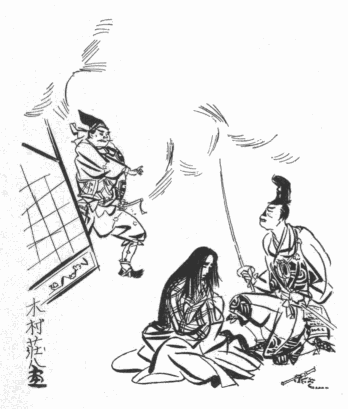
不意を打たれた則重は、煙の中から突然現れた怪しい男が何者であるかを見定める
餘裕もなく、夢中で身をもがくばかりであったが、
「殿！ 御短慮でござりますぞ！」
と、公は逆上している彼の耳元で二三度大音に
喚ばわりながら、夫人の
襟を
掴んでいる彼の左の手を振り
解くと、夫人を
庇うようにして夫婦の間へ割って這入った。
「や、
ほちは
へるかつ、………」
と、その時始めて則重は驚きの声を挙げた。だが、次の瞬間に彼は、ぴしゃッと顔のまん中を叩かれたように眼をぱちくりさせながら、いかにもバツが悪そうに公を見上げた。公はその
隙に、則重の手から脇差を奪い取るより早く、
「はっ」
と云って、なるべく顔を見ないようにしてやりながら、畳を二三畳へり下って、ぴったりそこへ
額をつけた。
則重に取っては、今こゝにいる輝勝こそは、父一閑斎の恩に
背き、彼を斯くの如き窮地に陥れた憎むべき敵である。しかしその敵がこんな所へひょっこり出て来ようとは豫期していなかったことなので、視線が合った
咄嗟の感じは、「憎い」と思うよりも、「あ、顔を見られた」と云う極まりの悪さが先に立った。事実を云うと、公は往年夫人の
閨へ通いつゞけた夜な／＼、
餘所ながら此の
奇態な顔を
隙見させて
貰っては快感に浸っていたので、今日が始めてなのではないが、当人はそれを知る筈がないから、鼻が缺けて以来秘し隠しに隠し通して来たものを、今自害しようとする矢先に運悪くも敵に見られたと思うと、日頃の用心が水の
泡になった恨めしさやら口惜しさやらで、全く
憂鬱になってしまった。彼は何よりも家名を汚すことを恐れた。どうせ自分は父祖の偉業を亡ぼした
不束な子であるから、その申訳に腹を切るのは覚悟の前であるけれども、
迂濶に此処で死んだら、きっと自分の首は輝勝の手に渡るであろう。そしてそれが衆人の眼に
曝され、あわれ織部正殿はあんな
態をして生きていたのだと云われたら、自分の耻辱は忍ぶとしても、父祖代々の武名に傷がつくことをいかにして防ぎ得られよう。そう考えると、彼には兎角の分別もつかないのであった。生きる訳にも行かないが、と云って、此のまゝでは死ぬにも都合が悪い。夫人を殺したら、醜骸を跡へ残さぬように火中へ飛び込んで焼け死のうと云う積りでいたのに、首を取られては彼の世へ行っても
親父に合わす顔がない。
癇癪持の親父のことだから、「間抜け奴！ 鼻と耳を拾って来い！」と、頭から
怒鳴りつけるかも知れない。
「
へ、
へ、
へるかつ！」
公はもう一遍、
「はっ」
と云って、一層低く
首を垂れた。
「ぶ、ぶ
ひの情
ら、
ほの
はたなを
はえ
ひて
ふれ！
ほれ
はひの
ふびを
ほっ
へはならん
ほ！………」
此の急な場合に、
慌てるせいか
愈則重の云うことは聞き取りにくゝなるのであったが、
「武、武士の情だ、その刀を返してくれ！
某の首を取ってはならんぞ！」
と、多分そう云っているのであろうと、そこまでは察しがついたので、
「さ、武士の情を思えばこそ、お止め申すのでござります」
と、公は
優しく、舊主に対する礼節を失わずに云った。
「―――
憚りながら、もはや
寄手の者共が此処へ押し寄せて参ります。此処でお腹を召されましたら、某はお見逃し申しても、必ず御首を戴く者がござりましょう。さすれば末代迄の御耻辱、………」
「
へ、
へ、
へるかつ！」
「はっ」
「
はい
ほの頼みら！
はい
ひゃ
ふひへふれ！………
ほ、
ほれ
はひの
ふびを、
られにも見
へふに葬むっ
へふれ！………」
「はっ、何？ 何と
仰っしゃいます？………」
公が返答に困っていると、則重はしきりに、
「
はい
ほの頼み、………
はい
ほの頼み、………」
と、
苛立ちながら繰り返しては、
「
ほれ
はひの
ふびを、………
ほれ
はひの
ふびを、………」
と、自分の
首をさし伸べて、手で斬る真似をしてみせた。それで斯う「最後の頼みだから
介錯してくれ、某の首を誰にも見せずに葬むってくれ」と云っているらしいのが分ったのであったが、此の時既に火は三人の傍近くまで燃えひろがって、方々の隙間から風が
呻りをたてながら
凄じい
焔を挙げていた。まことに此の時、桔梗の方も、則重も、武州公も、不思議な悪因縁に繋がれたまゝ
業火の
渦に
捲き込まれてしまったら、三人ながら却って幸福であったかも知れない。少くとも則重はそれを望んだであろうし、恐らくは桔梗の方も、此処で
諸共に焼け死んだらば両方へ義理が足せると思ったでもあろう。彼女は完全に復讐を遂げ、父の恨みを十二分に晴らした。今、此の鼻缺けの、
兎唇の、片耳のない夫を連れて
冥途へ行けば、それが父への何よりの
土産になる。生きて此の世に罪を重ね、不義の汚名を流すよりは、その方が
優しであろうものを。………だが、武州公一人だけは火にも負けない意志と熱血の所有者である。公は豫め、城の案内を知った青木主膳に一隊を授けて、いち早く奥御殿へ駈けつけるように
旨をふくめておいたので、それが猛火をくゞりつゝ丁度よい時に救援に来た。同時に公が忍び込んだ地下道の方からも、五六人の小姓共が公の跡を追いながら、ひとかたまりになって
闖入した。
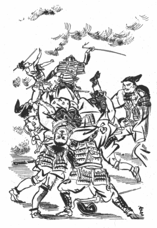
「殿！ 何事も某にお任せなされい」
公がそう云って立ち上ると、それを合図に主膳の兵は音もなく則重の左右に迫った。そして、滑稽にして悲惨なる此の場面の主人公の腕を
抑え、脚を抑えて、庭から裏山づたいに、間道の方へ運び出した。
されば、桔梗の方も此の時一緒に救い出されたことは云う迄もない。しかしその真相を知っていた者は、当時奥御殿へ駈けつけた少数の兵があるのみで、檜垣衆も、横輪勢も、又武州公の麾下の大部分も、織部正夫妻は焼け死んでしまったものと信じていた。「道阿弥話」の伝えるところでは、そのゝち則重と北の方とは密かに多聞山の城中に移され、三の谷の奥に新たにしつらえた御殿に押し籠められていたので、家中の者共はその御殿のことを「三の谷殿」と呼んでいたが、誰あって御殿の主を知る者はなく、公が
夜更けており／＼そこへ通うことも、道阿弥その他側近の者が心得ていたばかりであると云う。則重がおめ／＼捕われの身となって生き耻を
曝しながら、敵の城中に
憂き年月を送っていた心事については、あまり
腑甲斐なく思われるけれども、何分にも日夜監視が厳重な上に自殺の手段を奪われてしまっていたので、腹を切るにも機会がなく、それに又、死顔を人に見られないようにする方法がないので、是非なくも尚数年の間餘生を
貪ぼっていたのであった。が、不幸な則重の生涯を通じて、此の三の谷の御殿で暮らした晩年の月日が、家庭的には最も恵まれていたかも知れない。なぜかと云うのに、彼はもう柄にない政治や軍務に頭を使う必要がなくなり、敵の情深い手当てを受けて衣食住には少しも不自由をしなかったし、殊に、牡鹿山落城の
間際に落してやった一男一女のうち、若君の方は捜し出されて人知れず殺されたらしいのであるが、「お浦どの」と云われた姫君の方は、やがて此の御殿へ引き取られて来たので、親子三人が
佗びしいながらも慰め合って、しずかな
団居を楽しむことが出来たからである。いや、そればかりでなく、牡鹿山の落城を一転期として、桔梗の方の心境にも亦自ら変化が起った。彼女は最早や夫の破滅を享楽する残忍性を捨てゝしまって、其の本然の女らしい性質に
復り、
嘗て自分が害を加えた醜い夫の容貌に心からなる同情と
憐愍とを注ぎながら、貞淑な妻として、また慈愛深き母として、前半生の過誤と罪悪とを償うように努めたので、茲に始めて完全な夫婦の愛が成立し、織部正は未だ経験したことのない感激に充ちた生活を送った。だが、桔梗の方の心境がそう云う風に変ったことは、取りも直さず武州公の空想が幻滅に終ったことを意味する。功名と恋愛の二た股をかけて筑摩家を攻め亡ぼした公は、誰に
憚ることもなく逢う瀬を楽しめる時期になって、折角城中へ迎え入れた恋人の態度が昔のようでないのを見ては、どんなにか失望したであろう。
蓋し桔梗の方としては、父の恨みを報いた以上夫に何の含むところもあるべき等がなく、今は却って己れの犯した恐ろしい罪業に
戦いていたであろうから、再び公と道ならぬ恋をつゞける気力がなくなってしまったことも、亦甚だ自然である。一説に曰く、桔梗の方が
俄かに公を
疎んずるようになったのは、公が最初の約束に
背いて則重の
嗣子を殺害したのが原因であると。彼女が公を頼ったのは、二人の幼児を、―――分けても男の子を、立派な武士に取り立てゝ貰って、筑摩の家系を絶やさないようにすることが一つの目的だったのであるから、成る程それもそうかも知れない。
斯くて武州公と桔梗の方との不義の関係は、三の谷殿へ移ってからは全く絶えてしまったのである。そうしてその後、公が四十三年の生涯を終えるまで、次々に新しい異性を求めては奇異な刺戟と醜悪な悪戯とを
貪って行った物語は、餘り長くなるばかりでなく、公の名誉と遺徳とを傷けることが大であるから、先ず此の程度の暴露を以て筆を
擱く方が賢明であろう。唯しかしながら、公の性生活の一面に斯くの如き秘密があったことを念頭に入れて、然る後に「筑摩軍記」その他の正史を
繙かれたら、必ずや意外な発見をされる点が多いであろう。此の書を著した作者の微意は、実に其処に存するのである。
［＃改丁］
「
蓼喰う
蟲」以後の谷崎君の作品は、残りなく通読しているつもりでいたが、この「武州公秘話」だけにはまだ目を触れていないのであった。谷崎好みの題材を谷崎式手法で活写しているだけで、この怪異な物語に私は驚かされはしなかったが、この老作家の老熟した近作中でも、筆が著しく緊縮していることが特に感ぜられた。のんびりしたところが皆無で窮屈そうである。似寄った変型愛慾の描写にしても、青年期のものには、わざと面白がっているところ、ふやけているところ、筆先の遊びに過ぎないようなところが見え透いていたが、この作品にはそういう稚気が無くなっている。シリアス過ぎるくらいシリアスである。普通人の愛慾心理も押詰めて行ったら、こういう境地にも到達するのであろうかとは思われた。
谷崎君の他の小説についてそう思ったことはなかったが、この小説の筆致は、私をして
雨月物語を連想させた。しかし、
上田秋成はあの時分の作家だから、こういう題材を扱っても、お座なりの道徳的訓戒をくっつけるくらいで、何でもなしに事件と光景を描叙するだけであったであろう。谷崎君は概して心理研究者の態度を執っている。武州公をして自己反省をさせている。「心の奥底に、全く自分の意力の及ばない別な構造の深い／＼井戸のようなものがあって、それが
俄かに
蓋を
開けた」など、作者の説明が
少くない。作者の心に映る幻影を幻影として写す秋成の態度と、心理批判を棄て得ない谷崎君の態度に、私などは時代の相違を見るので、
必しも一を
是とし一を
非とするのではない。武州公は現代人の姿をもって現われているのである。
「首に嫉妬を感じ」「生きて彼女の
傍にいるという想像は一向楽しくなかったが、もしも自分があのような首になって、あの女の魅力の前に引き据えられたら、どんなに幸福だか知れない」なんて考えるのは、奇怪なようだが、首斬りを人生の大事業とし、首斬りに絶大な歓喜を覚えていた戦国時代には首という者に、たとえ斬られた
後にでも、生命が宿っていると思われていたのだ。歌舞伎年代記などに記載されているが、昔の芝居には、
獄門首が恨みを述べたり、親子の名乗りをしたりするのは、普通の事件で、
見物がそういうものを喜んでいた。道阿弥の首を
賞翫しながら、若夫婦が
蚊帳の中の寝床で
盃の遣り取りをするのも、草双紙の趣向にもありそうなことである。相手の男を柱に縛りつけ、その鼻先の畳の上に
白刃を
突立て女に酌をさせながら一人で得意になっている光景を描いた芝居絵を、私は見たことがあった。縛られた男はその縛られ振りにも顔面の表情にも道化味があらわれていた。
それで、「武州公秘話」は、ちょっと見ると、徳川末期趣味を
髣髴とさせているが、その趣味だけに停滞しないで、愛慾心理を
追窮しているところに作者自身が意識するしないに関わらず、シリアスな感じが読者の心に伝わるのである。
永井荷風君は、青年期にフランス文化を羨望し、フランス趣味に魅惑されたので、今なおその痕跡を留めているにしても、江戸末期の文化や趣味に寂しい愛着を感ずることによって、自己の詩境を豊かにしている。谷崎君は平安朝の文学の清冽な泉によって自己の詩境を
潤おしているとゝもに、江戸末期の濁った趣味を学ばずして身に
具えている。日本の古典としての
醇粋味は平安朝文学に
漂っているので、私などは、谷崎君の作品のうちでも、その風格を伝えたものを一層愛好する訳だが、谷崎君が平安朝古典の継紹者だけに
留っていたら、その作品は、無気力になる弊があったかも知れない。刺戟の乏しい退屈なものになったかも知れない。江戸末期趣味もこの作者には効果ある働きをしているのだ。
由来、日本の文学者は描写が
傑れていないと私は思っている。徳川末期文学には
溌溂たる描写がことに欠けている。自然と人事との交錯する
或光景の描写の不思議にうまいのは、「
源氏」「
枕」「
大鏡」などの、平安朝ものに見られるのだ。「武州公秘話」のうち、法師丸が老女に連れられて、敵の首に装束をしている婦女子の部屋を訪ずれるあたり、
織部正が
曲者に鼻をもがれるあたり、異様な光景の叙事たるに留まらず、
或幻影の印象が読者の心に残るのは、この作者が平安朝古典伝来の描写力を
有っているためであろう。西洋の近代小説の形式を採らず、自国の物語の体裁を好んで用いんとするのは、この作者近来の傾向であるらしいが、物語が
自ら描写になったら日本文学として至極の境地であると、私は思う。永井君の作品では、「
榎物語」が、そういう意味で
逸品であると私は思う。
鼻については、芥川君の小説も思出されたが、それよりも、ゴーゴリの「鼻」が思出された。理髪師によって
削取られた
或男の鼻が、官吏の礼服を着けていろんな所に出没するという、
甚だ
巫山戯た小説であるが、そこにシリアスな人生観察が宿っていそうに推察される。手が無くっても、足が無くっても、
或は目が無くっても、人間はまだしも忍び得られるのだが、さして必要のなさそうな鼻が無くっては最も汚辱を感じるのだ。鼻の無いほど人間を醜悪にし滑稽にするものはない。「鼻の缺けた首」は醜悪滑稽の象徴である。自分の魂を「鼻の缺けた首」としてしまって、美女と二人きりで甘美な夢の国に遊びたいという武州公の願望は、これを解釈すると、善も美も道徳も、気取りもお体裁も、すべての常套的束縛を脱却し、第三者の目には「鼻の缺けた首」同様、醜とも滑稽とも見えることを、顧慮しないで、思う存分に生を
楽みたいことを意味しているのだ。美女美男のお上品な愛撫ではまだ物足りない。自分が醜悪滑稽の底をつくして、美女の愛撫を受けることを妄想して舌なめずりする男性の気持が「鼻の缺けた首」礼讃となって、象徴的に現わされているのである。……読者諸君。そう思って武州公の奇怪な願望や行動を心に映じて見るべし。自分自身の心の影が武州公の心の上に見られるかも知れない。
（初出 単行本『武州公秘話』中央公論社刊 昭和十年）